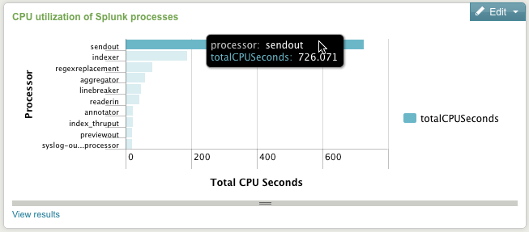
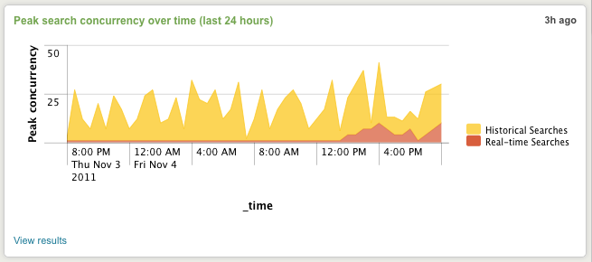
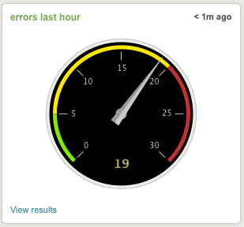
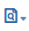
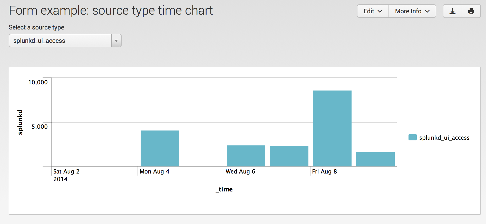
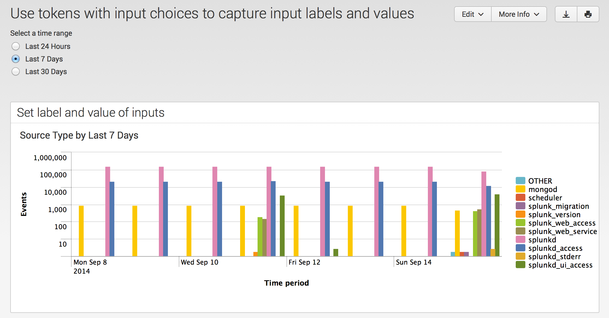
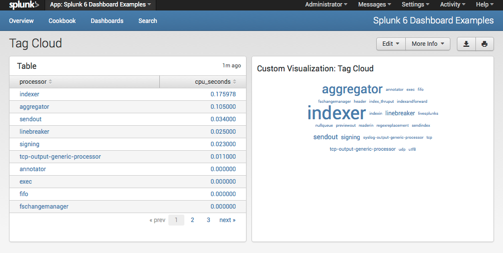
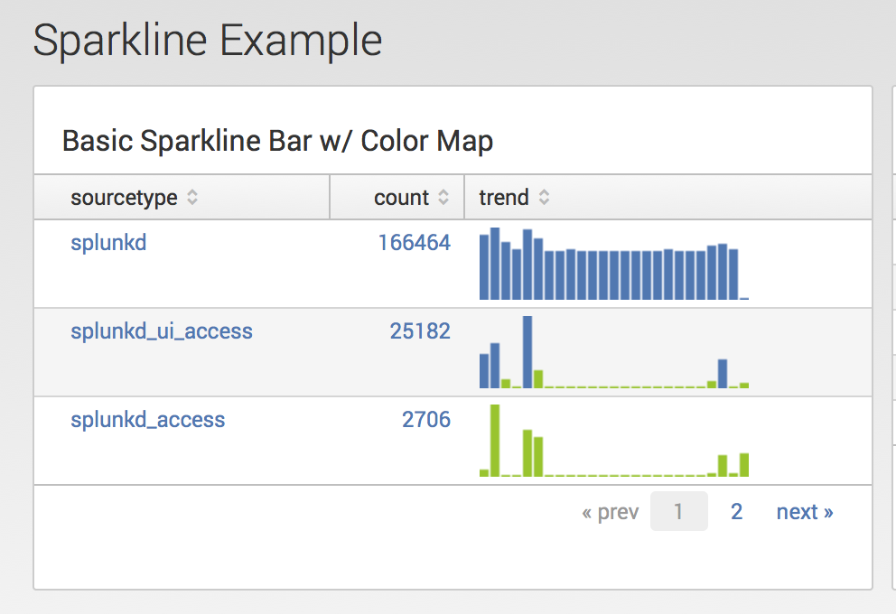
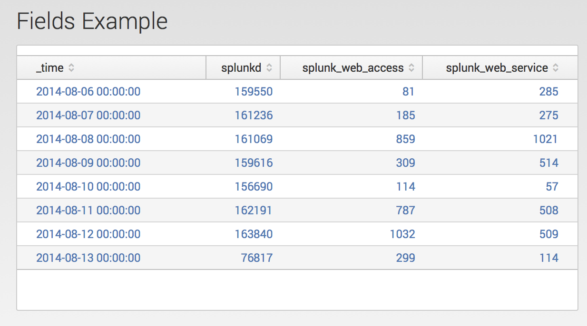

Visualization Reference
Splunk Enterprise has many options for search result visualizations. Beyond a straightforward events list, you can visualize your data in tables and charts. When your search returns a single discrete number, you can visualize that result with gauge and single value displays.
Visualizations have specific data structure requirements. You can create a search that returns data in different structures depending on how you want to see your results. For example, use a transforming command (such as stats, timechart, or top) to return search results in a data structure supporting tables and charts.
Accessing visualization definition features
Splunk Enterprise provides user interface tools to create and modify visualizations. You can access these tools from various places in Splunk Web.
- Search
- Dashboards
- Dashboard Editor
- Pivot
- Reports
You can also create and modify visualizations directly in simple XML code.
Visualizations from Search
You can modify how search results display in the Search page. After running a search, select the Visualization tab, then select the type of visualization to display. You can specify formatting options for the selected visualization. The search must be a reporting search that returns results that can be formatted as a visualization.
Edit visualizations provides details for editing visualizations in the Dashboard Editor. The instructions for the Dashboard Editor also apply to visualizations from the Search page.
Dashboard panel visualizations
When you base a new dashboard panel on search results you can choose the visualization that best represents the data returned by the search. You can then use the Visualization Editor to fine-tune the way the panel visualization displays.
To create a dashboard panel from search results, after you run the search click Save As > Dashboard Panel. For more information about creating and editing dashboards, see the About the Dashboard Editor and Edit visualizations.
Dashboard Editor
You can create and edit visualizations with the Dashboard Editor, an interactive visual editor. For more information, see About the Dashboard Editor.
Events visualizations
Events visualizations are essentially raw lists of events.
You get events visualizations from any search that does not include a transform operation, such as a search that uses reporting commands like stats, chart, timechart, top, or rare. For example, a search for a set of terms and field values returns a list of events:
error OR failed OR severe OR ( sourcetype=access_* ( 404 OR 500 OR 503 ) )
If you add a transforming command to the search, you get statistical results that you can present either as a table or a chart:
error OR failed OR severe OR ( sourcetype=access_* ( 404 OR 500 OR 503 ) ) | stats count by host
With event listing visualizations, you can:
- Determine the number of events listed.
- Determine whether numbers appear to the left of each event.
- Have event text wrap to fit within the dashboard panel.
Tables
You can generate table visualizations from just about any search. However, searches that include transform operations, such as stats, chart, and timechart, generate more interesting tables.
The following example shows a table for a hypothetical flower company. The table tracks price differences between its products and those of its hypothetical competitor. The following search generates data for the table:
sourcetype=access_* | stats values(product_name) as product by price, flowersrus_price | eval difference = price - flowersrus_price | table product, differenceThe cells in the difference column display shades of color. The table uses a heat map for a data overlay. The high values are red while the low values are blue. In this example, products that have a higher price than the competitor are shades of red, while products that are less expensive are shades of blue.
For table visualizations you can do the following:
- Set the number of table rows to display.
- Display row numbers.
- Add data overlays that provide additional visual information, such as heat maps or high/low value indicators.
If you are formatting tables in dashboards with the Visualization Editor you can configure drilldown functionality. You can enable drilldown by row or by cell, or disable drilldown for the table entirely. See Understand basic table and chart drilldown actions in this manual.
Sparklines in tables
You can configure table visualizations to display sparklines. Sparklines show hidden patterns in data that might otherwise be hard to identify in table results. They can increase the usefulness and overall information density of tables in reports and dashboards.
To use sparklines, the underlying search has to use the stats or chart transforming commands. You add the sparklines function of those commands to add a sparkline column to the table. See Add Sparklines to your search results in the Search Manual.
The following sparkline example runs off of the following search, which looks at USGS earthquake data. You can download a current CSV file from the USGS Earthquake Feeds and add it as an input to Splunk, but the field names and format can differ from the example shown here. In this case, the data shows all magnitude 2.5+ quakes recorded over a given 7-day period, worldwide:
source=usgs | stats sparkline(avg(Magnitude),6h) as magnitude_trend, count, avg(Magnitude) by Region | sort countThe search displays the top 10 regions according to the total count of quakes experienced per region over that period. The sparkline in the resulting table illustrates the trend in earthquake magnitude over the course of that week for each of the top earthquake regions. The example also demonstrates how you can mouse over a sparkline to read values at specific points along its length.

Charts
Splunk provides a variety of chart visualizations, such as column, line, area, scatter, and pie charts. These visualizations require transforming searches whose results involve one or more series.
A series is a sequence of related data points that can be plotted on a chart. For example, each line plotted on a line chart represents an individual series. You can design transforming searches that produce a single series, or you can set them up so the results provide data for multiple series.
Consider a table that a transforming search generates. Each column in the table after the first column represents a different series. A "single series" search produces a table with only two columns, while a "multiple series" search produces a table with three or more columns.
All chart visualizations can display single-series searches. However the bar, column, line, and pie chart visualizations usually display the data best. Pie charts can only display data from single series searches.
If a search produces multiple series, bar, column, line, area, and scatter chart visualizations display the data best.
See Data structure requirements for visualizations in this manual for more information.
Column and bar charts
Use a column chart or bar chart to compare the frequency of values of fields in your data. In a column chart, the x-axis values are typically field values. If the search uses the timechart transforming command, the x-axis represents time. The y-axis can be any other field value, count of values, or statistical calculation of a field value. Column charts and bar charts represent data similarly, except that the x-axis and y-axis values are reversed. For more information, see the Data structure requirements for visualizations in this manual.
The following bar chart presents the results of a search that uses internal metrics. It calculates the sum of CPU seconds by processor in the last 15 minutes. It then arranges the processors with the top ten sums in descending order. This example also shows how you can mouse over a single bar or column to get detailed information.
The following search drives the bar chart visualization.
index=_internal "group=pipeline" | stats sum(cpu_seconds) as totalCPUSeconds by processor | sort 10 totalCPUSeconds desc 
For column and bar chart visualizations, you can do the following:
- Set the chart titles, as well as the titles of the x-axis and y-axis.
- Set the minimum y-axis values.
- Set the unit scale to logarithmic values
Logarithmic values are useful with a mix of very small and very large y-axis values. See Edit visualizations in this manual for more information.
- Configure charts as stacked, 100% stacked, and unstacked.
Bar and column charts are unstacked by default. See the following subsection for details on stacking bar and column charts.
- Set the major unit for the y-axis.
For example, configure tick marks in units that work best for your data.
- Determine the position of the chart legend and the manner in which the legend labels are truncated.
- Enable or disable drilldown functionality.
See Understand basic table and chart drilldown actions in this manual.
Stacked column and bar charts
When a base search involves more than one data series, you can use stacked column charts and stacked bar charts to compare the frequency of field values in your data.
Unstacked charts
In an unstacked column chart, the columns for different series appear alongside each other. An unstacked column chart is useful for relatively simple search results. But when the series count increases an unstacked column chart can appear cluttered and confusing.
Stacked charts
A stacked column chart displays all the series columns for a single data point as segments of a single column. The total value of the column is the sum of the segments. You typically use a stacked column or bar chart to highlight the relative weight, or importance, of the different types of data that make up a specific data set.
The following example illustrates the customer views of pages in a website of a hypothetical flower store. It breaks out page views by product category over a 7 day period.
The following search drives the data in the example. The usage of the fields command in the search ensures that the chart only displays counts of events with a product category ID. It excludes events without a category ID, categorized as null in the search results.
sourcetype=access_* method=GET | timechart count by categoryId | fields _time BOUQUETS FLOWERS GIFTS SURPRISE TEDDY100 per cent stacked charts
A chart set to 100% stacked lets you compare data distributions within a column or bar chart by percentage of the column or bar size. Each segment of data in the column or bar represents the percentage of all the data available.
Stacked 100% is useful to better see data distributions between segments in a column or bar chart that contains a mix of very small and very large segments.
Line and area charts
You typically use line and area charts to show data trends over time. However, you can use the x-axis to represent any field value other than time. If your chart includes more than one series, a different color represents each line or area.
The following search drives the example line chart.
index=_internal | timechart count by sourcetypeShaded areas in area charts can help emphasize quantities. The following search drives the area chart in the example:
index=_internal source=*metrics.log group=search_concurrency "system total" NOT user=* | timechart max(active_hist_searches) as "Historical Searches" max(active_realtime_searches) as "Real-time Searches"
With line and area charts, you can do the following:
- Set the chart titles, as well as the titles of the x-axis and y-axis.
- Determine how to display null y-axis values.
You can leave gaps for null datap points, connect to zero data points, or just connect to the next positive data point. If you choose to leave gaps, the chart displays markers for data points that are disconnected. In this case, they are not adjacent to other positive data points.
- Set the minimum y-axis value.
- Set the unit scale to logarithmic values
Logarithmic values are useful with a mix of very small and very large y-axis values. See Edit visualizations in this manual for more information.
- Set the major unit for the y-axis
For example, configure tick marks in units that work best for your data.
- Determine the position of the chart legend and the manner in which the legend labels are truncated.
- Enable or disable drilldown functionality.
For more information about drilldown, see Understand basic table and chart drilldown actions in this manual.
Stacked line and area charts
Stacked line and area charts are similar to stacked column and row charts. Stacked line and area charts are useful when charting several series, making it easier to see how each data series relates to the entire set of data as a whole.
The following search drives the data in the stacked area chart example. The example also illustrates mousing over a data point for detailed information.
index=_internal per_sourcetype_thruput | timechart sum(kb) by series useother=fPie chart
Use a pie chart to show the relationship of parts of your data to the entire set of data as a whole. The size of a slice in a pie graph shows the value of the data represented by the slice as a percentage of the sum of all values.
The following pie chart presents the views by referrer domain for a hypothetical online store for the previous day. You can get mouse over individual pie chart slices to view details.
When you define the properties of pie charts you can set the chart title. If you are formatting pie charts in dashboards with the Visualization Editor you can do the following:
- Set the chart title
- Determine the position of the chart legend.
- Enable or disable drilldown functionality.
For more information about drilldown, see Understand basic table and chart drilldown actions in this manual.
Scatter chart
Use a scatter chart, also known as scatter plot, to show trends in the relationships between discrete values of data. Generally, a scatter plot shows discrete values that do not occur at regular intervals or belong to a series. This differs from a line graph, which usually plots a regular series of points.
The following example uses USGS earthquake data to illustrate scatter charts. The data derives from a CSV file that contains data on all earthquakes recorded over the last 30 days.
The search in the example plots magnitude and depth of earthquakes for a specific three day period. The scatter points locate the place of the earthquake. The following search generates the data for the scatter chart example.
index=usgs_earthquake place="*" earliest=1408950000 latest=1409295600 | table place mag depthFor more information about the data structures that scatter charts require, see Data structure requirements for visualizations in this manual.
From a scatter chart you can do the following:
- Set the chart titles, as well as the titles of the x-axis and y-axis.
- Determine how to display null y-axis values.
You can leave gaps for null data points, connect to zero data points, or just connect to the next positive data point. If you choose to leave gaps, the chart displays markers for data points that are disconnected. In this case, they are not adjacent to other positive data points.
- Set the minimum y-axis value.
- Set the unit scale to logarithmic values
Logarithmic values are useful with a mix of very small and very large y-axis values. See Edit visualizations in this manual for more information.
- Set the major unit for the y-axis
For example, configure tick marks in units that work best for your data.
- Configure the position of the chart legend and the manner in which the legend labels are truncated.
- Enable or disable drilldown functionality.
For more information about drilldown, see Understand basic table and chart drilldown actions in this manual.
Bubble chart
A bubble chart provides a visual way to view a three dimensional series. Each point, or bubble, plots against two dimensions on the X and Y axes of the chart. The size of the bubble represents the value for the third dimension.
The following bubble chart shows earthquake data for a three day period. The X and Y axes plot the magnitude and depth of the earthquakes recorded.
The following search generates the data for the bubble chart example.
index=usgs_earthquake place="*" earliest=1408950000 latest=1409295600 | stats count by place, mag, depthThe size of the bubble represents the number of earthquakes found at the plotted values. A mouse-over of the large bubble indicates a count of 2 for that magnitude and depth. All other bubbles indicate a count of 1. The mouse-over also shows additional data from the series, indicating the place of the earthquake.

From a bubble chart you can do the following:
- Set the minimum and maximum size of a bubble.
- Set the bubble size by area or diameter of the bubble.
- Set the chart titles, as well as the titles of the x-axis and y-axis.
- Determine how to display null y-axis values.
You can leave gaps for null data points, connect to zero data points, or just connect to the next positive data point. If you choose to leave gaps, the chart displays markers for data points that are disconnected. In this case, they are not adjacent to other positive data points.
- Set the minimum y-axis value.
- Set the unit scale to logarithmic values
Logarithmic values are useful with a mix of very small and very large y-axis values. See Edit visualizations in this manual for more information.
- Set the major unit for the y-axis
For example, configure tick marks in units that work best for your data.
- Configure the position of the chart legend and the manner in which the legend labels are truncated.
- Enable or disable drilldown functionality.
For more information about drilldown, see Understand basic table and chart drilldown actions in this manual.
Single value visualizations
Single value displays and gauges display the results of a transforming search that returns a single value. For example, a search that returns the total count of events for a specific set of search criteria. The following search returns the total number of errors for a Splunk Enterprise instance over the past hour:
index=_internal source="*splunkd.log" log_level="error" | stats count as errorsThere are various ways to make searches return a single values. One example is to combine the top command with head=1.
- Caution: Be careful to use searches that return single values. When you design dashboard visualizations in the Dashboard Editor, you can select single value visualizations even if the search returns multiple values. In this case, the single value visualization uses the value in the first cell of the results table, which may not be what you plan to show.
For more information on the data structure requirements of single value visualizations, see the Data structure requirement for visualizations topic in this manual.
Single value visualization
The single value visualization displays the result of a search that returns a single numerical value. If you base the visualization on a real-time search that returns a single value, the number displayed changes as the search interprets incoming data.
You can configure a single value display visualization to change color depending on where the returned value falls within a defined range. Use the rangemap search command to define the range in the underlying search. You can also configure the range map for a single value visualization with the Panel Editor. By default, a single value visualization uses the following range map configuration:
low: greenelevated: yellowsevere: red
The following search drives the above single value display visualization:
index=_internal source="*splunkd.log" log_level="error" | stats count as errors | rangemap field=errors low=0-3 elevated=4-20 default=severeFor a single value visualization, you can do the following:
- Provide a panel title.
- Specify text before, after, and below the result
- Enable or disable drilldown functionality.
For more information about drilldown, see Understand basic table and chart drilldown actions in this manual.
About gauges
Splunk provides three types of gauge visualizations: radial, filler, and marker.
Gauge visualizations map a single numerical value against a range of colors that may have particular business meaning or logic. Gauges use range maps, as described in the single value visualization, to define color ranges. As a value changes over time, the gauge marker changes position within this range. Gauges provide an especially dynamic visualization for real-time searches, where the value returned fluctuates as events are returned, causing the gauge marker to visibly bounce back and forth within the range as you watch it.
The various gauge examples below use the same base search:
index=_internal source="*splunkd.log" log_level="error" | stats count as errorsRadial gauge
The radial gauge type looks essentially like a speedometer or pressure valve gauge. It has an arced range scale and a rotating needle. Use a range map, as described for a single value visualization, to define color ranges for the filler gauge.
The current value of the needle displays at the bottom of the gauge. In the example below, the value is 19. If the value falls below or above the specified minimum or maximum range, the needle "flutters" at the upper or lower boundary, as if it is straining to move past the limits of the range.
The following examples shows the "shiny" and "minimal" version of the radial gauge:
 
Filler gauge
The filler gauge is similar in appearance to a thermometer, with a liquid-like filler indicator that changes color as it rises and passes gauge range boundaries. Use a range map, as described for a single value visualization, to define the display color of the filler gauge.
By default, the filler gauge displays vertically. You can configure a horizontal display of the filler gauge.
Marker gauge
The marker gauge is a linear version of the filler gauge that is already "filled." A gauge marker rests at the value returned by the search. Use a range map, as described for a single value visualization, to define the display colors of the marker gauge.
If the gauge is displaying the results of a real-time search, the marker can appear to slide back and forth across the range as the returned value fluctuates over time. If the returned value falls outside of the upper or lower ranges of the marker gauge, the marker appears to vibrate at the upper or lower boundary, as if it is straining to move past the limits of the range.
By default, the marker gauge displays vertically. You can configure a horizontal display of the marker gauge.
Marker gauges have display issues with numbers exceeding 3 digits in length. To manage this, you can set up a search that divides a large number by a factor that reduces it to a smaller number. For example, if the value returned is typically in the tens of thousands, set your search so the result is divided by 1000. Then a result of 19,100 becomes 19.1.
You can also deal with large numbers by setting the chart configuration options to return the range as a percentage.
Configure gauge visualizations using Splunk Web
You can use the Visualization Editor to configure a gauge in a dashboard panel. The Visualization Editor lets you configure the following:
- Provide a title for the panel.
- Define the size and number of the ranges that make up the overall gauge.
For example, you could have a gauge that starts at 0, ends at 100, and is made up of four ranges that span 0-25, 26-50, 51-75, and 76-100. Or you could have a gauge that starts at 1000, ends at 3000, and is made up of several smaller ranges.
- Set the colors for each range.
By default the first three ranges are green, yellow, and red. You can customize the colors and add or subtract ranges as needed.
- Configure whether the gauge style is "shiny"' or "'minimal."
For example, the shiny version of the radial gauge models the look of a real radial machine gauge with a metallic-looking dial and black background. The minimal radial gauge is a stripped-down, "flat" version of the radial gauge design.
When you format gauge visualizations using the Visualization Editor, you can define color ranges automatically. Do this by using values defined in the search string with the gauge command. You can customize default settings that the Visualization Editor provides.
For more information about using the Visualization Editor to format dashboard panel visualizations, see the topic Edit visualizations in this manual.
You can also define gauge visualizations using the Report Builder, the Advanced Charting view, and the results area of the Search App. These options only provide the ability to give titles to gauge visualizations. By default they create a gauge with the following three ranges:
- 1-30: green
- 31-70: yellow
- 71-100: red.
To set up different gauge ranges with these visualization definition options, update the underlying search with the gauge search command.
Setting gauge ranges with the gauge command
You can use the search gauge command to set custom ranges for a gauge visualization.
The gauge command lets you set the gauge ranges using default colors. The default three colors, in order of the ranges, are green, yellow, and red. With gauge, you indicate the field to track with the gauge. Then add "range values" to the search string to indicate the beginning and end of the range as well as the relative sizes of the color bands within it.
For example, to set up a gauge that tracks a hitcount field value with the ranges 100-119, 120-139, 140-159, 160-179, and 180-200, add this to your search string:
...| gauge hitcount 100 120 140 160 180 200If you do not include the gauge command in your search or include it but fail to specify range values, the range values default to these values: 0 30 70 100.
Maps
Splunk Enterprise provides a map visualization that lets you plot geographic coordinates as interactive markers on a world map. Searches for map visualizations typically use the geostats search command to plot markers on a map. The geostats command is similar to the stats command, but provides options for zoom levels and cells for mapping. The geostats command generates events that include latitude and longitude coordinates for markers.
Additional visualization options
The following Splunk visualizations are not available using Splunk Web tools or simple XML. These visualizations require advanced XML and the module system of the Splunk Web Framework.
- Histograms
- Range marker charts
- Ratio bar charts
- Value marker charts
You can use bubble charts to show trends and the relative importance of discrete values in your data. The size of a bubble indicates a value's relative importance. It represents a third dimension on top of the x-axis and y-axis values that plot the bubble's position on the chart. This dimension determines the bubble's size relative to the others in the chart.
Range marker charts and value marker charts are designed to work as overlays on top of bar, column, line, or area charts.
Data structure requirements for visualizations
This topic covers the data structure requirements of the different types of visualizations available.
If you're getting the above error when you change the underlying search for an existing dashboard panel, or if you're creating a new panel and are finding that the visualization you want is unavailable, it's likely because the underlying search doesn't return data that works for that visualization. In most cases, it's easy to tweak the search to get the visualization you want.
For example, most charting visualizations (column charts, line charts, area charts, bar charts, and so on) require search results that are structured as tables with at least two columns, where the first column provides x-axis values, and the subsequent columns provide y-axis values for each series represented in the chart (pie charts only provide information for single-series reports, while the other chart types can represent multiple series). To get these tables you need to set up the underlying search with reporting search commands like stats, chart, or timechart.
- For a high-level overview of Splunk's visualization options, see the Visualization Reference in this manual.
- For more information about using the Visualization Editor to design visualizations for dashboard panels, see "Edit visualizations.
- For details on configuring visualization, see the Chart Configuration Reference.
Column, line, and area charts
Column, line, and area charts are two-dimensional charts supporting one or more series. They plot data on a Cartesian coordinate system, working off of tables that have at least two columns, where the first column contains x-axis values and the subsequent columns contain y-axis values (each column represents a series). This is why "Values over time" searches and searches that include splitbys are among those that are available as column, line, and area charts.
If you want to generate a column, line, or area chart from a search, that search must produce a table matching the description provided in the preceding paragraph. For example, any search using the timechart reporting command will generate a table where _time is the first column (and therefore the x-axis of any column, line, or area chart generated from those results). You'll get the same result with most basic searches involving reporting commands.
For example, a search like this, where the over operator indicates that source is the x-axis:
...| chart avg(bytes) over source produces a two-column, single-series table like this:
In this table, the x-axis is source, and the y-axis is avg(bytes). With it you can produce a column chart that compares the average number of bytes passed through each source.
Say you change up the search a bit by adding clientip as a splitby field:
...| chart avg(bytes) over source by clientipThis produces a table that features multiple series:
In this table, the x-axis is still source, and the y-axis is still avg(bytes), but it now breaks out the avg(bytes) by clientip, creating a table with multiple series. You might generate a stacked column chart to represent this data.
You run into trouble when you design a complex search that returns a result table that lacks a valid x-axis or y-axis value. This can happen when you use the eval and fields commands to force a particular arrangement of columns in the finished table, for example.
Bar charts
Bar charts have the same data structure requirements as column, line, and area charts, except that the x- and y-axes are reversed. So they are working off of tables that have at least two columns, where the first column contains y-axis values and the subsequent columns contain x-axis values.
Pie charts
Pie charts are one dimensional and only support a single series. They work off of tables with just two columns, where the first column contains the labels for each slice of the pie, and the second column contains numerical values that correspond to each label, determining the relative size of each slice. If the table generated by the search contains additional columns, those extra columns have no meaning in the terms of the pie chart and are ignored.
Of the two "column, line, and area charts" search examples noted above, the first is the only one that could be used to make a pie chart. The source column would provide the wedge labels, and the avg(bytes) column would provide the relative sizes of the wedges (as percentages of the sum of avg(bytes) returned by the search).
Scatter charts
Scatter charts are cartesian charts that render data as scattered markers. They help you visualize situations where you may have multiple y-axis values for each x-axis value, even when you're not charting multiple series. Their data set can be in one of two forms:
- A single series setup, where the chart is structured on a 2-column data table, where the first column (column 0) contains the values to be plotted on the x-axis, and the second column (column 1) contains the values to be plotted on the y-axis.
- A multiple series setup, where the chart is structured on a data table that contains 3 columns. The first column (column 0) contains the series names, and the next two columns contain the values to be plotted on the x- and y-axes, respectively.
To generate a scatter chart you need to graph events directly with a search like:
* | fields - _* | fields clientip bytesThis search finds all of the packets received from various client IP addresses and then orders them according to the number of bytes in each packet.
- Note that the search removes all fields with a leading underscore, such as the
_timefield. - The second
fieldscommand isolates the two fields that you want for the x- and y-axis of the chart, respectively. The y-axis value should be numerical for best results. (So in this case, the x-axis isclientipwhile the y-axis isbytes.)
More complex scatter charts can be set up in dashboards using simple XML. For more information see the Area, Bar, Column, line, and Scatter Charts and Scatter chart specific properties entries in the Chart Configuration Reference.
Gauges and single value visualizations
Gauges and single value visualizations represent searches that return a single numerical field value. Gauges show where this value exists within a defined range, while single value visualizations just display the number.
A simple example is a search that returns a count of the number of events matching a set of search criteria that come in within a specific time period, or a real-time window, if you are using a real-time search. If you base a gauge on a real-time search, the chart's range marker will appear to fluctuate as the value displayed within the real-time search window changes over time.
If you base a single value visualization on this same search, you'll see the value increase and decrease as the value returned by the real-time search changes over time. If you've used the rangemap command in conjunction with the search, the single value visualization will change color depending on the value returned.
Maps
Splunk provides a map visualization that lets you plot geographic coordinates as interactive markers on a world map. Searches for map visualizations should use the geostats search command to plot markers on a map. The geostats command is similar to the stats command, but provides results for zoom levels and cells for mapping. Events generated include latitude and longitude coordinates.
For more information, see:
- Maps in the Splunk Visualization Reference
- The <map> element entry in the Simple XML Reference
- The Geostats entry in the Search Reference.
Drilldown behavior
Visualizations have drilldown behavior enabled by default. The exception is the single value visualization, which has drilldown disabled by default. A user clicks on a visualization to launch a detailed search that is driven by captured values from the location of the click. The detailed search opens in the Search page. The detailed search duplicates the original search but removes the final transforming command, replacing it with the value captured from the visualization.
The value captured for drilldown differs, depending on the visualization. You can configure drilldown behavior from either the Panel Editor or the underlying simple XML code. See Default drilldown behavior to configure drilldown behavior from the Panel Editor. See the Panel visualization elements in the Simple XML Reference to configure drilldown behavior in simple XML code.
You can implement dynamic drilldown to customize the drilldown behavior. Use the <drilldown> tag and other related tags in simple XML code to implement dynamic drilldown. With dynamic drilldown, you can specify a link to another page to display the results or you can specify a contextual drilldown to the same page. See Dynamic drilldown for details.
Default drilldown behavior
The default drilldown behavior differs, depending on the visualization.
The Simple XML Reference provides details on configuring drilldown behavior in simple XML code. You can also configure drilldown behavior from the Panel Editor.
- From the dashboard, click Edit > Edit Panels.
- From a panel, click the visualization formatting icon.
- In the Drilldown field, specify the drilldown option
- Click Apply. Click Done.
Note: You cannot specify drilldown for a single value visualization from the Panel Editor. You specify drilldown behavior in simple XML code. See Single value for details.
The following topics discuss the drilldown properties for each visualization.
Chart
The chart visualization has two options for drilldown behavior available from the Panel Editor.
| Drilldown Option | Description |
|---|---|
| Yes | Default. Enables drilldown behavior. |
| No | Disables drilldown for the chart. |
The drilldown behavior for a chart differs, depending on if you click the chart or click the chart legend.
When you click a data point in the chart, the resulting drilldown search captures the value of the field or series for the Y-axis of a chart. The exception is a pie chart, which does not have a Y-axis. The drilldown search for a pie chart captures the value of the selected segment.
When you click a chart legend, the generated drilldown search adds the clicked field to the base search for the chart. If the legend displays a calculated value instead of fields, the drilldown search is the base search that drives the data in the chart.
Bar chart drilldown example
The bar chart in this example uses the following search to display results.
index="_internal" source="*metrics.log" group="pipeline" | chart sum(cpu_seconds) over processor | sort 10 - sum(cpu_seconds)A drilldown selection on the linebreaker processor result generates the following detailed search.
index="_internal" source="*metrics.log" group="pipeline" processor=linebreakerChart legend drilldown examples
This example shows the drilldown search when you click a field in the chart legend.
Search that drives the chart:
index=_internal | timechart count by sourcetypeDrilldown search from when you click the scheduler field in the chart legend:
index=_internal sourcetype=schedulerThis example shows the drilldown search generated when you click a calculated value in the chart legend:
Search that drives the chart:
index="_internal" source="*metrics.log" group="pipeline" | chart sum(cpu_seconds) over processor | sort 10 - sum(cpu_seconds)Drilldown search when you click a calculated value in the chart legend:
index="_internal" source="*metrics.log" group="pipeline"Events visualization
You can choose three different ways to display events:
- Raw
- List
- Table
The drilldown options available for events visualizations differ for each of these display types.
The examples in this section use the following search. The following screen capture shows the search in an events list, but you could also display the data as raw events or in a table.
index=_internal earliest=-1d | stats count by log_levelEvents are a core concept of Splunk Enterprise. For more information on events, see About event types.
Events as raw and list
For data displayed as raw events or in a list, drilldown behavior depends on your mouse-over selection of a segment in the event listing. You can specify the type of selection as full, inner, or outer. See Types of event segmentation.
Depending on the drilldown option, you mouse over a major segment, contiguous minor segments, or a minor segment. After mousing over a selection, click to launch a detailed search.
The following examples show the ways you can select an event for drilldown. The examples derive from the event visualization shown above.
| Drilldown Option | Description | Example |
|---|---|---|
| Full | Select a major segment, or one or more contiguous minor segments. The first example shows the mouse over for minor segments. The second example shows the selection of a major segment. | |
| Inner | Select a single minor segment. | |
| Outer | Select a complete major segment. | |
| None | Disables drilldown. | —
|
Events as table
If you display events as a table, the user can select a cell in the table for drilldown. This launches a detailed search based on the value of the first column in the row, which is the time of the event. You can enable or disable drilldown for events displayed in a table.
The Event visualization, displayed in a table, has two options for drilldown behavior available from the Panel Editor.
| Drilldown Option | Description |
|---|---|
| On | Default. Enables drilldown behavior. |
| Off | Disables drilldown behavior. |
The following visualization displays events as a table. You can click on any cell for drilldown. This table uses the same search as the example in the introduction to Events visualization.
index=_internal earliest=-1d | stats count by log_level
The resulting detailed search captures the value in the initial column for the search, which is the time specified for the base search.
index=_internal earliest=-1d Map
The map visualization provides default drilldown behavior for a cluster on a map. When you click on a cluster you generate a detailed search based on the boundaries of the cluster. See map event tokens for details on all map tokens available for drilldown.
The map visualization has two options for drilldown behavior.
| Drilldown Option | Description |
|---|---|
| Yes | Default. Enables drilldown behavior. |
| No | Disables drilldown. |
The following search generates a map showing California earthquakes of magnitude greater than 3 for the past 30 days.
index=main mag>3 | geostats latfield=latitude longfield=longitude countWhen you click on a cluster indicating earthquake data, you generate a detailed search based on the latitude and longitude boundaries of that cluster.
index=main mag>3 | search latitude>=36.21094 latitude<36.56250 longitude>=-122.34375 longitude<-121.64062- Note: This example uses earthquake data downloaded from the USGS Earthquakes website.
Single value
You enable drilldown behavior for a single value visualization in simple XML code. Specify all for the drilldown option.
<single>
<searchString>
index=_internal source="*splunkd.log" (log_level=ERROR
OR log_level=WARN* OR log_level=FATAL
OR log_level=CRITICAL) | stats count as log_events
| rangemap field=log_events low=1-100 elevated=101-300 default=severe
</searchString>
<title>Log events</title>
<earliestTime>-1d</earliestTime>
<latestTime>now</latestTime>
<option name="classField">range</option>
<option name="afterLabel">total logging events</option>
<option name="beforeLabel">Found</option>
<option name="drilldown">all</option>
</single>Click the value in the visualization to generate the following detailed search.
index=_internal source="*splunkd.log" (log_level=ERROR OR log_level=WARN* OR log_level=FATAL OR log_level=CRITICAL)Table
The table visualization has three options for drilldown behavior.
| Drilldown Option | Description |
|---|---|
| cell | Default. For the selected cell, captures the value for the first column in a row and the value for the selected column. The generated drilldown search searches with these values. |
| row | Captures the value from all cells in the selected row for the drilldown search. |
| none | Disables drilldown for the table. |
The examples that illustrate the row and cell drilldown options derive from the following table. The following search drives the data listed in this table.
index=_internal earliest=-1d | stats count by sourcetype log_level componentRow drilldown option
If you configure a table with the row drilldown option and click on a cell in the table, the drilldown search uses the values for all columns in the table. In this example, a click anywhere in the first row generates the following drilldown search.
index=_internal earliest=-1d sourcetype=splunk_web_service log_level=ERROR component=utilityCell drilldown option
If you configure a table with the cell drilldown option and click on a cell in the table, the drilldown search combines the value for the column of the selected cell with the value for the initial column in the row. In this example, a click in the log_level column of the first row generates the following search.
index=_internal earliest=-1d sourcetype=splunk_web_service component=utilityDynamic drilldown
Use dynamic drilldown to customize drilldown behavior. With dynamic drilldown you can specify the following custom targets for the generated detailed search:
- A dashboard or form in an app in your Splunk Enterprise installation
- A third-party URL
- A location on the same page (contextual drilldown)
Dynamic drilldown elements
You implement dynamic drilldown in simple XML code using the <drilldown> element with other simple XML elements. See Drilldown elements in the Simple XML Reference for details.
| Element | Description |
|---|---|
| <drilldown> | Define custom destinations. Parent element of the other dynamic drilldown elements. |
| <condition> | Specify fields that generate drilldown actions. |
| <link> | Specify a target destination for a detailed search. |
| <set> | Publish global tokens that can be consumed by any other element or search within a dashboard. Use <set> and <unset> when displaying drilldown results on the same dashboard. See Contextual drilldown elements. |
| <unset> | Remove a token that was previously set. Use <set> and <unset> when displaying drilldown results on the same dashboard. Use <set> and <unset> when displaying drilldown results on the same dashboard. See Contextual drilldown elements. |
Drilldown event tokens
Dynamic drilldown uses drilldown event tokens to customize the values you capture from a visualization. The tokens available depends on the visualization. See Token usage in dashboards and Define tokens for drilldown in this manual.
For example, for a map visualization, the tokens specify the field and value from a map marker as well as latitude and longitude values. For a table visualization, the tokens specify the name and value returned from a clicked cell. The following table lists the drilldown event tokens available for a table visualization. See Drilldown event tokens in the Simple XML Reference for a complete list of tokens available for all visualizations.
| Token | Description |
|---|---|
| click.name | Name of the leftmost field that is displayed in the table. This is always _time, if present.
|
| click.value | Value of the left-most column in the clicked row. |
| click.name2 | Name of the clicked column. |
| click.value2 | Value of the clicked column. |
| row.<fieldname> | All field values for the clicked table row, including those fields that are not displayed. |
| earliest/latest | Time range of the clicked table row, or if not applicable, the time range of the search. |
Drilldown event tokens differ from the tokens you define with the <set> element. Drilldown event tokens are pre-defined for capturing values from a click in a visualization. Tokens that are defined with the <set> element specify values that the target destination consumes.
Specify a destination link
The <link> element provides various options for specifying the destination for dynamic drilldown. For details, see <link> element in the Simple XML Reference.
You can specify the following:
- Specify a dashboard in the same or different app in your Splunk Enterprise instance.
- Pass in a token value to populate a form in the destination target.
- Pass in earliest and latest values to define the search terms in the destination form.
- Open a third party URL, optionally passing in the value captured by the drilldown action as a query argument.
- Specify
targetvalues for the <a> HTTP anchor tag, indicating how to open the target HTTP web page.
When used with the <condition> element, you can specify the name of the field or series from which to capture values for drilldown.
Dynamic drilldown example
This example shows how to pass a drilldown value from a dashboard to a form that is in a separate app. The dashboard contains a table. A click anywhere in a row of the table captures the value for the source type from the first column in the row. This value is passed as the input value to the form.
This is the dashboard containing the table.

This is the form, which is in a separate app. The value passed from the dashboard becomes the input to the form. The form shows the results when a user of the dashboard clicks anywhere in the row for splunk_web_service source type.
Dashboard implementing dynamic drilldown
- Uses the <drilldown> and <link> elements.
- Specifies the
targetattribute in <link> to open the target in a new page. - References the
src_type_toktoken, which is defined in the target form. - Specifies row for the drilldown option.
Form
- Defines the
src_type_toktoken - Populates the text input with the value passed in for the token and runs the form.
Source code for the table in the dashboard that implements dynamic drilldown:
<dashboard>
<label>Dynamic Drilldown</label>
<row>
<panel>
<table>
<search>
<query>index="_internal" | chart count by sourcetype | sort sourcetype</query>
<earliest>-7d@h</earliest>
<latest>now</latest>
</search>
<drilldown>
<link target="_blank">
/apps/MyApp/drilldown_dynamic_target_form?form.src_type_tok=$row.sourcetype$
</link>
</drilldown>
<option name="drilldown">row</option>
</table>
</panel>
</row>
</dashboard>Source code for the form that accepts the passed in value:
<form>
<label>Dynamic Drilldown (Target Form)</label>
<description/>
<fieldset submitButton="false" autoRun="true">
<input type="text" token="src_type_tok" searchWhenChanged="true">
<label>Source type</label>
</input>
</fieldset>
<row>
<panel>
<chart>
<title>Source type details</title>
<search>
<query>
index=_internal | timechart span=1week count by $src_type_tok$
</query>
<earliest>-30d@d</earliest>
<latest>now</latest>
</search>
<option name="charting.chart">column</option>
</chart>
</panel>
</row>
</form>From a single value visualization you can drill down on hidden fields. This example is from an app that provides access to online government regulation documents. It uses a single value visualization to display a selected regulation. When you click the regulation, a new browser window opens at the government regulations website, displaying the online document for the regulation.
The example app uses a global search that returns information about government agencies, regulations, and regulation IDs. It contains two single value visualizations that use post process searches to obtain the values to display.
There are two dropdowns:
- Select an agency
Selects a government agency, displaying the name of the agency selected as a single value visualization.
- Select a regulation
Selects a regulation from the selected agency, displaying the regulation name as a single value.
The second single value visualization consumes the fields regulation_docketTitle and docketId from its post process search. However, a single value field can only display the first returned value, which is the regulation_docketTitle in this example.
The visualization uses the <drilldown> element to drill down on the "hidden value field," docketId. It specifies the hidden field in the $row.<field>$ drilldown event token. See Single event tokens for a list of all drilldown event tokens.
The following source code shows how to access the hidden value field for single value visualizations.
<form stylesheet="regulations_explorer.css">
<label>Regulations Explorer</label>
<fieldset autoRun="true" submitButton="false">
<input type="dropdown" token="agency" searchWhenChanged="true">
<label>Select an Agency</label>
<search>
<query><!-- populating search for input --></query>
<earliest>$earliest$</earliest>
<latest>$latest$</latest>
<fieldForValue>agencyName</fieldForValue>
<fieldForLabel>agencyName</fieldForLabel>
</search>
<choice value="*">ALL</choice>
<default>*</default>
</input>
<input type="dropdown" token="docket" searchWhenChanged="true">
<label>Select a regulation</label>
<search>
<!-- populating search for input -->
</search>
<fieldForValue>docketTitle</fieldForValue>
<fieldForLabel>docketTitle</fieldForLabel>
</input>
<!-- time picker input -->
</fieldset>
<!-- Global search for post process -->
<!-- Provides docketId and regulation_docketTitle fields -->
<!-- That are consumed by the single value visualization -->
<search id="baseSearch">
<query>
| pivot regulations Regulations_Data count(Regulations_Data)
AS "Count of Regulations Data" SPLITROW docketId
AS "docketId" SPLITROW docketTitle
AS "regulation_docketTitle" SPLITROW commentStatus
AS "regulation_comment_status" SPLITROW commentEndDateLong
AS "regulation_comments_end_date" SPLITROW commentStartDateLong
AS "regulation_comment_start_date" SPLITROW agency_name
AS "agency_name" FILTER docketTitle contains $docket|s$
| sort - regulation_comment_start_date| head 1
</query>
</search>
<row>
<panel>
<single>
<!-- Displays regulation_docket title -->
<search base="baseSearch">
<query>
| fields regulation_docketTitle, docketId
</query>
<earliest>$earliest$</earliest>
<latest>$latest$</latest>
</search>
<drilldown>
<link>
<![CDATA[ http://www.regulations.gov/#!docketDetail;D=]]>$row.docketId$
</link>
</drilldown>
</single>
</panel>
</row>
</form>
Contextual drilldown elements
Contextual drilldown generates results to a visualization on the same dashboard. Compare to the dynamic drilldown example above, which generates drilldown results from one dashboard to a separate form. Use the <condition> element with the <drilldown>, <set>, and <unset> elements to implement contextual drilldown.
Use the <condition> element as a child of the <drilldown> element. The field attribute of the <condition> element specifies the fields whose values you want to capture. The <condition> element lets you specify different actions for the drilldown, depending on the field clicked.
Use the <set> token to assign the value from a drilldown token to another token that the target of the drilldown consumes. The <set> element is a child of the <condition> element. The <unset> element removes a token that was previously set.
Use the depends and rejects attributes of panel visualization elements to specify tokens that need to be present to display a visualization.
Basic contextual drilldown example
This example shows how a click anywhere in a row of a table passes a value to a chart on the same page. The drilldown captures the value from the first column in the clicked row to pass to the chart. The chart is hidden until a user clicks on the table.
This example uses the <set> element to set the src_type_tok to the value returned from the $click.value$ drilldown token, which is the value from the first column in the table. See table event tokens.
The chart consumes the src_type_tok in the depends attribute to the <chart> element, the <title> element, and in the search. The depends attribute prevents the chart from displaying until a user clicks in the table.
<dashboard>
<label>Contextual drilldown</label>
<row>
<panel>
<table>
<title>Set sourcetype token on click</title>
<search>
<query>
index=_internal | stats count by sourcetype
</query>
<earliest>-4h</earliest>
<latest>now</latest>
</search>
<drilldown>
<set token="src_type_tok">$click.value$</set>
</drilldown>
</table>
</panel>
<panel>
<chart depends="$src_type_tok$">
<title>Chart for $src_type_tok$</title>
<search>
<query>
index=_internal sourcetype=$src_type_tok$
| timechart count by sourcetype
</query>
<earliest>-4h</earliest>
<latest>now</latest>
</search>
</chart>
</panel>
</row>
</dashboard>
Contextual example from map visualization
This example show how to drill down to markers on a map visualization. The map visualization shows earthquake activity for the past month. The generated search on a map marker displays in a bar chart with details from the map data. For example, a click on the marker straddling Montana, Utah, and Wyoming generates the chart on the right.
- Note: This example uses earthquake data downloaded from the USGS Earthquakes website.
The following search shows earthquake activity for incidents greater than magnitude .9.:
index=main mag > .9 | geostats latfield=latitude longfield=longitude countThe <drilldown> element sets tokens based on the bounds of a marker showing clustered locations. The captured values derive from the click.bounds.<orientation> map token. See map event tokens for details on all map tokens available for drilldown.
<drilldown>
<set token="bounds.north" > $click.bounds.north$</set>
<set token="bounds.east" > $click.bounds.east$</set>
<set token="bounds.south" > $click.bounds.south$</set>
<set token="bounds.west" > $click.bounds.west$</set>
</drilldown>The chart contains the following search, which consumes the tokens that the drilldown action generates:
index=main mag > .9 | search latitude >= $bounds.south$ latitude < $bounds.north$ longitude >= $bounds.west$ longitude < $bounds.east$ | top placeHere is the source code that implements this contextual drilldown example:
<row>
<panel>
<map>
<search>
<query>
index=main mag>.9
| geostats latfield=latitude longfield=longitude count
</query>
<earliest>0</earliest>
<latest />
</search>
<option name="mapping.data.maxClusters">1000</option>
<option name="mapping.drilldown">all</option>
<option name="mapping.map.center">(39.3,-95.98)</option>
<option name="mapping.map.zoom">4</option>
<option name="mapping.markerLayer.markerMaxSize">40</option>
<option name="mapping.markerLayer.markerMinSize">20</option>
<option name="mapping.markerLayer.markerOpacity">0.9</option>
<option name="mapping.tileLayer.maxZoom">7</option>
<option name="mapping.tileLayer.minZoom">0</option>
<drilldown>
<set token="bounds.north">$click.bounds.north$</set>
<set token="bounds.east">$click.bounds.east$</set>
<set token="bounds.south">$click.bounds.south$</set>
<set token="bounds.west">$click.bounds.west$</set>
</drilldown>
<option name="mapping.tileLayer.url">
http://{s}.tile.openstreetmap.org/{z}/{x}/{y}.png
</option>
</map>
</panel>
<panel>
<chart>
<title>Places</title>
<search>
<query>
index=main mag>.9 | search
latitude >= $bounds.south$
latitude < $bounds.north$
longitude >= $bounds.west$
longitude < $bounds.east$
| top place
</query>
<earliest>0</earliest>
<latest />
</search>
<option name="charting.chart">bar</option>
</chart>
</panel>
</row>
Contextual example with multiple conditions
This example sets multiple conditions for drilldown. It contains a table listing event counts for source types by log level. A click in the table generates a detail chart. The detail chart is not visible until the user drills down from the table. The content of the detail chart differs, depending on where a user clicks in the table.
- Click the sourcetype or Total column
The detail chart displays details for all log levels.
- Click a log level column
The detail chart displays details for that log level.
This example sets three conditions using the field attribute of the <condition> tag. Each condition sets token values for $s_sourcetype$ and $s_log_level$. The search in the detail chart consumes these tokens.
<drilldown>
<condition field="sourcetype">
<set token="s_sourcetype">$row.sourcetype$</set>
<set token="s_log_level">*</set>
</condition>
<condition field="Total">
<set token="s_sourcetype">$row.sourcetype$</set>
<set token="s_log_level">*</set>
</condition>
<condition field="*">
<set token="s_sourcetype">$row.sourcetype$</set>
<set token="s_log_level">$click.name2$</set>
</condition>
</drilldown>
For all columns in the table, the token $s_sourcetype$ captures the value from the $row.sourcetype$ table token. This sets the value to the source type of the clicked cell.
For the sourcetype and Total columns, a click sets the $s_log_level$ token value to '*'.
For the log level columns, a click sets the $s_log_level$ token value to the value of the $click.name2$ table token. This token captures the name of the column of the clicked table cell.
The <chart> element for the detail chart sets the value of the depends attribute to $s_sourcetype$. The chart does not display until drilldown from the table sets this token.
Here is the source code implementing this dynamic drilldown example:
<dashboard>
<label>Contextual Example with Multiple Conditons</label>
<row>
<panel>
<table>
<title>Events: Source type by log level</title>
<search>
<query>
index=_internal log_level=*
| chart count over sourcetype by log_level | addtotals
</query>
<earliest>-7d@h</earliest>
<latest>now</latest>
</search>
<option name="drilldown">cell</option>
<drilldown>
<condition field="sourcetype">
<set token="s_sourcetype">$row.sourcetype$</set>
<set token="s_log_level">*</set>
</condition>
<condition field="Total">
<set token="s_sourcetype">$row.sourcetype$</set>
<set token="s_log_level">*</set>
</condition>
<condition field="*">
<set token="s_sourcetype">$row.sourcetype$</set>
<set token="s_log_level">$click.name2$</set>
</condition>
</drilldown>
</table>
</panel>
<panel>
<chart depends="$s_sourcetype$">
<title>
Events: sourcetype="$s_sourcetype$" and log_level="$s_log_level$"
</title>
<search>
<query>
index=_internal sourcetype="$s_sourcetype$"
log_level="$s_log_level$" | timechart count
</query>
<earliest>-7d@h</earliest>
<latest>now</latest>
</search>
</chart>
</panel>
</row>
</dashboard>Chart controls
This topic describes advanced behavior for viewing data in charts.
Pan and zoom chart controls
The pan and zoom feature allows you to highlight chart details and optionally view the details in a separate panel. Pan and zoom is available for the following charts:
- Column
- Line
- Area
The following examples show how to access the pan and zoom charting features.
Pan and zoom behavior
The following dashboard shows a chart displaying source types over a seven day period. The Y-axis uses a logarithmic scale to provide a more meaningful graphic. The panel specifies the following search.
index=_internal | timechart count by sourcetypeThe screen capture below shows a selection for the results for two days.
The resulting chart zooms in to the selection and now displays details of the selected area.
- Use the left and right arrows along the X-axis to move the selection window earlier or later.
- Click Reset Zoom to return to the original chart.
Zoom to another chart
You can specify pan and zoom behavior to display results in a separate chart. The following example uses the same base example illustrated above in Pan and zoom behavior. The chart on the left lists all source types and also shows the selection for a single day. The other chart lists only the splunk_web_access source type for the selected time range.
You can drag an edge of the time range in the left chart to expand the time range. You can also move the selected time range to the left or right to specify an earlier or later time range.
The chart at the bottom shows the values for the tokens that implement the pan and zoom behavior.
Implementation details
To display zoom results in a separate chart, first edit the base chart in simple XML. Use the <selection> element to set token values for the selection time range.
- Note: See Token usage in dashboards for information on tokens. The section Define tokens for pan and zoom chart controls provides details for tokens specific to pan and zoom behavior.
$start$
$end$
Predefined tokens that capture the values of the X-axis at the beginning and end of the selection time range. In this example, capture the time at the beginning and end of a time chart. The value is in epoch time.
$start.splunk_web_access$
$end.splunk_web_access$
Captures the values of the Y-axis for the specified series at the beginning and end of the selection. In this example, the value is the number of events for the field splunk_web_access.
The start and end tokens are valid only in the context of the chart. Assign the values to tokens that you define so you can access the values throughout the dashboard.
<chart>
<title>Pan and Zoom (All source types)</title>
<searchString>
index=_internal | timechart count by sourcetype
</searchString>
<earliestTime>-7d@h</earliestTime>
<latestTime>now</latestTime>
. . .
<selection>
<set token="selection_earliest">$start$</set>
<set token="selection_latest">$end$</set>
<set token="start_splunk_web_access">$start.splunk_web_access$</set>
<set token="end_splunk_web_access">$end.splunk_web_access$</set>
</selection>
. . .
</chart>
In the target chart, use $selection_earliest$ and $selection_latest$ to access the selection time range.
<chart>
<title>Pan and Zoom (Web access source type)</title>
<search>
<query>
index=_internal sourcetype=splunk_web_access
| timechart count by sourcetype
</query>
<earliest>$selection_earliest$</earliest>
<latest>$selection_latest$</latest>
</search>
. . .
</chart>
The HTML panel shows the values captured by the $start$ and $selection$ tokens.
<html>
<h3>Token values for the splunk_web_access selection</h3>
<table border="0" cellpadding="12" cellspacing="0">
<tr>
<td>
<p><b>Time range (epoch time)</b></p>
<p><b>$$selection_earliest$$</b>: $selection_earliest$
<br /><b>$$selection_latest$$</b>: $selection_latest$</p>
</td>
<td>
<p><b>Count at the begining and end of time range.</b></p>
<p><b>$$start_splunk_web_access$$</b>: $start_splunk_web_access $
<br /><b>$$end_splunk_web_access$$</b>: $end_splunk_web_access$</p>
</td>
</tr>
</table>
</html>Chart overlay
Use chart overlays to represent two different series on a single chart. You can highlight one series of search results as a line graph on top of a column chart, area chart, or another line chart.
When using overlays, you can specify the overlaid values on a single axis or dual axis. With single axis, you plot the overlaid value and the search results against the same Y-axis. For dual axis, you specify a second Y-axis to represent the overlaid values.
Chart overlay example (single axis)
This example shows the count of splunk_web_access source type events over a time chart on a weekly basis for one month. Overlaid on this chart is the weekly average count of these events.
Here is the search to create this chart:
index=_internal sourcetype=splunk_web_access | timechart span=1week count | eventstats avg(count) as average | eval average=round(average,0)You can create the overlay using the Visualization Editor.
- From the dashboard, click Edit > Edit Panels.
- Add a panel specifying the following:
- Content Title: Chart Overlay (Single Axis)
- Search String: The search string listed above.
- Time Range: 30 days.
- For the chart overlay panel, click the Edit Properties icon. Click Chart Overlay.
- Click in the Overlay field. Select average from the fields available for selection as an overlay.
- For View as Axis, click Off.
This example does not specify a second Y-axis. - Click Apply. Click Done.
Chart overlay example (dual axis)
This example overlays the event count of the splunk_web_access source type against the total for all source types. The chart plots the Web Access totals against a separate Y-axis.
Here is the search to create this chart:
index=_internal sourcetype=* | timechart span=1week count as "All Sourcetypes" count(eval(sourcetype="splunk_web_access")) as "Web Access"You can create the overlay using the Visualization Editor.
- From the dashboard, click Edit > Edit Panels.
- Add a panel specifying the following:
- Content Title: Chart Overlay (Dual Axis)
- Search String: The search string listed above.
- Time Range: 30 days.
- For the chart overlay panel, click the Edit Properties icon. Click Chart Overlay.
- Click in the Overlay field. Select Web Access from the fields available for selection as an overlay.
- For View as Axis, click On to specify a second Y-axis.
- For Title, click Custom. Type Web Access in the adjacent text field to specify a title for the second axis..
- For Scale, click Inherit to inherit the selection for the scale from the first Y-axis.
- Click Apply. Click Done.
Chart display issues
This topic covers display issues using chart visualizations.
Searches with non-transforming commands
You cannot render charts based on searches that do not include, or properly use, transforming search commands such as:
charttimechartstatseval
For more information on transforming commands, see About Transforming commands and searches.
Time Charting
You can only plot time-based data using the timechart command. If you try to plot a time-based series using any other transforming search command, the chart treats the timestamp data as a series of strings.
Search result truncation
Splunk Enterprise employs a throttling strategy that restricts the number of results returned per series. The default value restricts results per series to the first 1000 results. When a chart reaches this limit it displays a message indicating the results have been truncated.
You can override the default value in simple XML code for the chart using the charting.data.count property. See General chart properties in the Chart Configuration Reference for details.
Limits on the number of points that can be plotted
To avoid negatively impacting web browser performance, the Splunk Enterprise charting library places a limit on the number of points that can be plotted for an individual chart. The limits that trigger this truncation of data vary, depending on the web browser.
When a chart displays a truncated data set it displays a message below the chart indicating that results are truncated.
The following table indicates default truncation limits by browser type.
| Web Browser | Maximum points plotted |
|---|---|
| Chrome | 20000 |
| Firefox | 20000 |
| Safari | 20000 |
| Internet Explorer 7 Internet Explorer 8 | 2000 |
| Internet Explorer 9 Internet Explorer 10 Internet Explorer 11 | 20000 |
There are two ways that you can override the default limits on the number of points that can be plotted.
Configure a limit that is enforced across all browsers
The web.conf configuration file specifies the maximum number of points that can be plotted for different browsers. To override the per browser settings, in web.conf define the maximum number of points limit for all browsers. Uncomment and edit the following setting to define the limit for all browsers:
Configure a limit on a per chart basis
You can configure the maximum number of points that can be plotted for a specific chart by editing the simple XML for the chart. For the <chart> element, edit the charting.chart.resultTruncationLimit property as described in Area, bar, column, line, and scatter charts in the Chart Configuration Reference.
Category limit
When you are plotting data by category, the Splunk charting library has a limit that can affect the display of labels for a chart. This limit differs for the horizontal axis (X-axis) and the vertical axis (Y-axis).
The X-axis must have at least 20 pixels available for each label. The Y-axis must have at least 15 pixels available. If the requisite pixels are not available, the labels do not display.
You can zoom into the X-axis to view labels that are hidden by the category limit. See Pan and zoom chart controls for details.
Dashboards: An overview
Splunk Web Framework
The Splunk Web Framework provides various options for creating dashboards and forms. How you choose to develop dashboards depends on the data you want to present, the complexity you need to present the data, and your preferences for a development environment.
Simple XML
By default, Splunk creates dashboards using simple XML. You can create and modify simple XML dashboards using Splunk's interactive editing tools without writing any simple XML code. However, some dashboard features are only available by coding the source simple XML.
Highlights of Simple XML:
- Create dashboards and forms with any number of panels that contain various visualizations of data.
- Splunk Web has interactive editing tools for creating and modifying simple XML dashboards and panels.
- Splunk provides an XML editor that you can use to edit the source code.
- Drilldown capability is available for visualizations.
- PDF generation is available in various forms for the dashboard
For more information:
Simple XML Extensions
New with Splunk 6, you can customize the layout of a dashboard, add new visualizations, and modify behavior of the dashboard while maintaining all the features available with Simple XML.
Highlights of Simple XML Extensions:
- Accesses SplunkJS Stack
- Custom CSS stylesheets and JavaScript files provide more flexibility for layout and styling.
- Tokens are available for styling elements similarly across panels in a dashboard.
- You can create custom visualizations to model your data.
For more information:
- Customize simple XML
- SplunkJS Stack from the Splunk Developer Portal
- Splunk 6 Dashboard Examples app (available from Splunkbase)
HTML accessing SplunkJS Stack
You can convert a simple XML dashboard to HTML that accesses features available from SplunkJS Stack, such as form inputs, tables, and charts. This gives you full layout control in a web developer environment that uses HTML and JavaScript.
Highlights of SplunkJS Stack
- Full layout control
- Web development environment that uses HTML plus JavaScript
For more information:
- Convert a dashboard to HTML
- SplunkJS Stack from the Splunk Developer Portal
Django Bindings
Use Django Bindings to create fully custom dashboards that leverage Django's server-side capabilities, components, and templates. Advanced features of Django Bindings require familiarity with the Django Web Framework. It allows access to server-side functions not available with HTML and JavaScript and also allows for reusable components with Django tags.
Highlights of Django Bindings:
- Django templates and template tags are a convenient way to create Splunk views and search managers.
- Django Bindings provide advanced features for server-side development.
For more information:
- Django Bindings from the Splunk Developer Portal
Advanced XML and the Splunk module system
Splunk 6 continues support for legacy Splunk applications and dashboards created with advanced XML and the Splunk module system. Advanced XML provides configurable and reusable server side modules that you use to create advanced Splunk dashboards and applications.
Although Splunk continues support for advanced XML, Splunk encourages you to take advantage of the newer components of the Splunk Web Framework.
For more information:
- About advanced XML
Dashboards and forms
Every page in a Splunk Enterprise app is a view. For example, the search timeline page in the Search and Reporting app is a default view that ships with that app. If you design your own apps you can construct views for them. You can also add views to existing apps.
Dashboards are the most common types of views. Each dashboard contains one or more panels, each of which can contain visualizations such as charts, tables, event lists, and maps. Each dashboard panel uses a base search to provide results for the visualizations. Typically, the search returns results when the dashboard is loaded.
A form is a dashboard that provides user inputs to the search, such as a drop-down list, radio buttons, or a text box. A form contains the same options for panels and visualizations that are available for dashboards.
Dashboards and forms can also modify a search (post process the search) to extract and highlight different information from the search in the panels.
Anatomy of dashboards and forms
Dashboards and forms are the two type of views you can create with simple XML. Their underlying structure is the same, except for a few minor differences. The following simple XML elements make up a dashboard or form. Many of these elements are optional. Refer to the Simple XML Reference for a detailed description of the underlying simple XML.
| Element | Description |
|---|---|
| top-level element | <dashboard> or <form> |
| Title | <label> (Optional) |
| Description | <description> (Optional) |
| Global search | Global search is for use with post-process searches. Post-process searches have limitations. See Post-process limitations. See <search> element.
<search id="[identifier]"> |
| Form inputs (Forms only) | <fieldset> <input> <text> <time> <checkbox> <dropdown> <multiselect> <radio> <search> (to populate input choices) |
| Rows | Each row contains one or more panels.
<row> |
| Panels | Each panel contains an optional title, optional inputs, and one or more visualizations. See Dashboard panels for the types of panels available.
<panel> |
| Visualizations | A visualization displays data returned from a search.
<chart> <event> <map> <single> <table> |
| Search | A search for a visualization. See <search> element.
<search> <search id="[identifier]"> Base search for post-process searches. <search base="[id]"> Post-process search referencing a base search. <search ref="[report] [ app="[app name]" ]> Reference a search from a report. Reference to app is optional. |
| Options | Properties specific to a visualization.
<option name="[option name]"> |
Differences between dashboards and forms
The layout of rows, panels, and the visualizations in the panels is essentially the same. The main differences between a dashboard and a form in simple XML are:
- Each has a different top-level element, <dashboard> and <form>.
- Forms have user inputs, such as a time range picker, drop-down lists, radio buttons, or a text box.
- The order of simple XML elements differ slightly in the source code.
For details on the underlying simple XML, see the Simple XML Reference. Compare the entries for <dashboard> and <form>.
Dashboard panels
Panels typically contain a search that drives the content of a visualizations in the panel. A panel can contain the following optional elements:
- Title
- Search
One or more searches that drive the data displayed in the panel. The search can be from several sources:- An inline search that you create and edit using the Panel Editor.
- A report that contains an imbedded search or a pivot.
- User inputs that modify the search results.
- Visualizations that display the data as graphs, tables, or charts.
- HTML encoded text to display messages to the user.
Inline panel
An inline panel is a panel that you can edit with the Dashboard Editor and Panel Editor. You can also edit the child elements of a panel element by editing the simple XML source code.
You can create an inline panel in the Dashboard Editor. You can also add inline panels to dashboards from Search, Report, and Pivot. See Add panels to a dashboard for details.
Prebuilt panel
A prebuilt panel is a panel that is shared on multiple dashboards. Each dashboard provides a reference to the prebuilt panel to display the panel.
You can convert a panel to a prebuilt panel. You can also create a panel that can be shared using simple XML code.
A dashboard accesses and displays a prebuilt panel with a reference attribute of the <panel> element. Use the optional <app> attribute if the prebuilt panel does not belong to the current app.
<panel ref="SharedDataPanel" app="exampleApp" />
You add a prebuilt panel in the Dashboard Editor by selecting from a list of available panels. You cannot edit a prebuilt panel with the Panel Editor.
See Create and add a panel by reference.
Add panels to a dashboard
There are several ways that you can add a panel to a dashboard.
- From the Dashboard Editor, you can select the type of panel to add. Choose from the following:
- Create an inline panel.
- Add a reference to a panel.
- Add a panel from a report.
- Clone a panel from another dashboard.
- From the Search page, save the search results as an inline panel.
See Save the results in the Search Manual.
- From the detail page for a report, save the report as an inline panel.
See Create and edit reports.
- From the Pivot Editor, save the pivot as an inline panel.
About views
In simple XML, you can define a view as a dashboard or a form. However, there are other types of views in the Splunk Web Framework.
- Advanced XML views
Dashboards created in legacy advanced XML define views according to imported Mako templates. Additional views besides dashboards and forms are available including views from custom Mako templates. For more information, see Layout templates for advanced XML.
- HTML plus SplunkJS Stack
You can convert a simple XML view to HTML that accesses SplunkJS Stack. After the conversion, the concept of a dashboard or form view, as defined in simple XML, no longer applies.
Editors for Splunk Enterprise dashboards
Splunk Enterprise provides options for creating and editing dashboards, and also the visualizations contained within dashboards. This topic provides an overview of the options available. For details about using Splunk Enterprise tools for creating and editing dashboards, see Create and edit dashboards from Splunk Web.
Dashboard Editor
Use the Dashboard Editor to create dashboards, add panels to dashboards, edit dashboards, create forms, and generate PDFs for a dashboard.
You create a form by creating a dashboard and then adding inputs to the dashboard. See Create and edit forms with the Dashboard Editor for details.
The Dashboard Editor includes a series of dialogs and menus to edit the dashboard.
| Editor | Description |
|---|---|
| Add Panel | Add a panel to a dashboard by selecting from the following options:
|
| Add Input | Add form inputs and a Submit button to a dashboard. |
| Panel Editor | A series of dialogs to edit inline panels. From the Panel Editor, you edit the panel properties, access or edit the panel's underlying search, change the visualization, and configure the visualization. |
| Visualization Editor | A series of dialogs to configure a visualization. The dialogs available change, depending on the nature of the visualization. Similar editing dialogs are available from the Search page and Report page. From Search and Report you can define visualizations that you export to a dashboard. |
Access dashboards from Search, Report, or Pivot
You can create dashboards, or add panels to a dashboard, when saving a search, report, or pivot.
When you add a panel from the Search page, you create a panel with an inline search. You can modify the search string in the panel without affecting the original search.
When you add a panel from a report or from the Pivot Editor, you can create a panel with an inline search or link directly to the report. If you create a panel with an inline search, you can modify the search string in the panel without affecting the original report or pivot. If you link directly to the report, the contents of the panel change whenever the report changes.
Pivot Editor
From Pivot you can access the Pivot Editor, a tool for creating and editing visualizations. Pivot Editor provides more options for defining a visualization than the Visualization Editor because it matches properties in the visualization with their definition in the pivot. See Design Pivot Charts and Visualizations with the Pivot Editor for details.
Splunk Enterprise Source Editor
For many features, you need to edit the source simple XML code. Splunk Enterprise provides a source editor that you can use to edit either simple XML or HTML.
When you edit the simple XML for a dashboard you can do the following:
- Control a wide range of dashboard panel formatting properties. Use the Chart Configuration Reference to customize the appearance of charts and gauges.
- Create geographic maps that display location markers.
- Configure advanced, dynamic drilldown behaviors (such as drilldown clicks that take users to a second dashboard).
- Create HTML panels that display static text, images, and HTML formatting.
- Configure panels with overlay charts. The Splunk Enterprise charting library includes special chart types for overlay purposes.
To learn how to create more sophisticated dashboards with simple XML, see Build and edit dashboards with simple XML in this manual.
To learn how to create forms with simple XML, see Build and edit forms with simple XML in this manual.
Source code editor
You can use your favorite source code editor to edit the source code for a dashboard. In addition to editing simple XML or HTML source, you can edit CSS or JavaScript files accessed by the dashboard.
In this scenario you need access to the Splunk instance on the host server. See About editing simple XML for more information.
Workflow for creating dashboards
Splunk is a powerful platform for the analysis and visualization of data. Splunk contains many tools for capturing this data, and then formatting the data in compelling dashboards.
Splunk recommends the following workflow for designing and creating dashboards and forms.
- Add content
Create the searches that power dashboards. - Design the user interface
Create and modify dashboards, forms, and panels. - Add interactivity
Drill down into search data. - Customize the dashboard
Add customized features to your dashboard.
- Add content
Add content
Splunk searches are what power dashboards, forms, and the visualizations of data contained within them. You should familiarize yourself with the tools available from Splunk to gather and analyze data.
- Create searches to power dashboards
Create searches to highlight the most relevant aspects of your data and support your user's goals. If you have never worked with Splunk's search language before, read the introductory sections to the Search Manual. The Search Reference provides additional information on searching with Splunk, including a search command cheat sheet, a list of popular search commands, and a complete reference to Splunk search commands.
- Searches saved as reports
You can save a search as a report and then access the search in a dashboard by reference to the report. For more information, refer to the Reporting Manual. The Reporting Manual contains a section Create and edit reports that provides details.
- Generate searches with Pivot
You can use the Pivot tool to generate searches as pivots that can be exported to reports or to dashboards. Using data models, Pivot enables you to identify data sets and to design tables, charts, and other visualizations based on the structure of the data set. See the Pivot Manual for details.
- Create panels for resuse
You can create a panel that captures information that can be useful in multiple dashboards. A prebuilt panel avoids creating and updating the same panel multiple times. When there is a change in the panel implementation, all instances that reference the panel receive the updates. A prebuilt panel makes complex panels available to non-technical users. See Dashboard panels for information on all panel types, including prebuilt panels.
For more information:
- Search Manual
About search
Write better searches
- Search Reference
Search Reference
Search command cheat sheet
All search commands
- Reporting Manual
Reporting Manual
Create and edit reports
- Pivot Manual
Pivot Manual
Design pivot tables with the Pivot Editor
- Dashboards and Visualizations
Anatomy of dashboards and forms
Build dashboards in Splunk Web
Build dashboards using simple XML
Design the user interface
There are various interactive editing tools that you can use to design your dashboards. You can create dashboards directly from the Dashboard Editor. You can add panels to a new or existing dashboard from Search, Report, or Pivot. You can add panels from existing dashboards or that were created for reuse.
Within the Dashboard Editor you can drag and drop panels to reposition them within your layout. You can access the Visualization Editor dialogs to change the title of panels, configure the visualization of data, and edit the searches that power a panel.
For more information:
- Add search, report, or pivot to a dashboard
- Edit dashboards with the Dashboard Editor
- Edit visualizations
- Splunk dashboards and forms
Add interactivity
You can create many compelling dashboards using only the Splunk Enterprise interactive tooling. However, to create forms, this release requires you to edit simple XML source code. When creating forms, use Splunk's interactive tools to design a dashboard with searches and visualizations. Then use the source editor to convert the dashboard to a form.
There are various drilldown capabilities from visualizations. The default drilldown behavior is configurable from the Visualization Editor. You can use dynamic drilldown to specify linking to other views or external web pages. With dynamic drilldown, you can send parameters to forms or third party web pages to drive the content of the destination. To implement dynamic drilldown, edit the source code of a dashboard or form.
For more information:
- Splunk dashboards and forms
- Convert a dashboard to a form
- Properties available from the Visualization Editor
- Dynamic drilldown in dashboards and forms
- Drilldown element in the Simple XML Reference
Customize the dashboard
There are several extension points to simple XML that you can use to modify the layout, add new visualizations, and customize behavior of dashboards. With these customizations, you can create compelling views for your content.
Implement these customizations using various combinations of custom stylesheets, JavaScript, and simple XML code.
- CSS styles
Add custom stylesheets for individual dashboards in an app.
- Layout
Make simple layout changes, such as rearranging dashboard and form elements and hiding panels.
- Tokens
Set custom tokens throughout the dashboard page.
- Custom visualizations
Build custom visualizations as dashboard panels.
- Table cell renderers
Specify custom styles and behavior within table cells.
For more information:
- Customize simple XML
- SplunkJS Stack, from the Splunk Developer Portal
- Splunk 6 Dashboard Examples app, available from Splunkbase.
Dashboard Examples App
The Splunk 6 Dashboard Examples app, available from Splunkbase, is a great tool for creating dashboards and forms in simple XML. It contains a host of examples illustrating basic features as well as advanced customizations. Each example includes a runtime visualization, description of the example, and supporting source code.
The Dashboard Examples app is useful whether you're a novice at simple XML or a seasoned developer.
Go to Splunkbase to download the Splunk 6 Dashboard Examples app and install it in your Splunk Enterprise instance.
Splunk SDKs
As an alternative to working within the Splunk Web Framework, Splunk provides a rich set of SDKs that you can use to create apps in the development environment of your choice. The SDKs access Splunk Enterprise instances using the Splunk Enterprise REST API. For more information, see Overview of the Splunk SDKs.
The Splunk SDKs available for the release of Splunk Enterprise 6.1:
- C#
- Java
- JavaScript
- PHP
- Python
- Ruby
Build dashboards in Splunk Web
About the Dashboard Editor
You can use the Dashboard Editor to create and edit dashboards without writing a single line of XML code. From the Dashboard Editor you can do the following:
- Create dashboards
- Add panels to dashboards
- Add form inputs to convert the dashboard to a form
- Rearrange dashboard panels using a drag-and-drop interface.
- Edit the searches that drive data in the dashboard.
- Specify different visualizations for a panel.
- Specify formatting options for a panel visualization.
- Edit the source code for a dashboard.
- Convert a dashboard to HTML.
Open the Dashboard Editor
To create a new dashboard:
- From the Dashboards page of an app, click Create New Dashboard.
You create dashboards from the context of an app. After you create a dashboard, you can modify the permissions to specify who has access to the dashboard. You can also move the dashboard to another app context. - Provide a Title, ID, and Description. Specify permissions. Then click Create Dashboard.
- Add panels, add an input, or edit the source code for the dashboard to proceed.
See Add panels to dashboards and Create and edit forms with the Dashboard Editor. - Click Done to create the dashboard.
To edit an existing dashboard:
- From the Dashboards page of an app, click an existing dashboard.
- Click Edit to view the options to edit the dashboard.
Refer to Edit dashboards with the Dashboard Editor for details on editing dashboards.
Add a search, report, or pivot to a dashboard
You can add a search, report, or pivot as a panel to a new or existing dashboard.
You can add a panel directly from the Search, Reports, or Pivot pages.
- From a Search page or from a Pivot, click Save As > Dashboard Panel.
- From the Report page, click Add to Dashboard.
The options available to save a dashboard panel vary, depending on the source (Search, Reports, or Pivot) and whether you are creating a new dashboard or adding a panel to an existing dashboard.
- Caution: Permissions change when accessing a report as a dashboard
When you create a report, your user context determines the permissions to access the search for the report. When you then save the report as a panel in a dashboard, the permissions to access the search changes, allowing other users to access results that otherwise were available only to the creator of the report. This can result in unintended exposure of data in a dashboard.
For example, a user with the role admin user can view the contents of the_internalindex. A user with the role user does not have permission to view this index.
If an admin user creates a report on the following search, with permissions shared, only an admin user can access the results of the report.However, if you save the report as a dashboard with permissions shared, a user with the role user can access the results from the indexindex=_internal | top sourcetype_internal. From the report, this user does not have permission to view the contents of_internal.
Additionally, a user with role user can create a dashboard to access the report, and thus view the contents of_internal.
Specify visualizations for the dashboard panel
When you run a new search or open a report, the visualizations recommended to you depend on the results of the search. If the search does not include transforming commands, only the events list is available. If you run the search in Verbose Mode, you can view a listing of events for the search, even if the search is a reporting search.
When you add the search to a dashboard panel, you select how the panel displays the results. You can later change your selection from the Dashboard Panel Editor.
For more information, see Edit dashboards with the Dashboard Editor.
Specify dashboard permissions
When creating a dashboard, you specify the following permissions for the dashboard from the Create Dashboard Panel:
- Private
Only you have permissions to view and edit the dashboard.
- Shared in App
The dashboard is available to other users from the app in which you created the dashboard. Other users can view the dashboard, and depending on their permissions, edit the dashboard.
After creating a dashboard you can change the permissions.
- From the Dashboards page, locate the dashboard for which you want to edit permissions.
- Under Actions, select Edit > Edit Permissions
- Specify the following:
- Display for Owner, App, or All Apps
- Read and write privileges for users
Your user role, and capabilities defined for that role, can limit the type of access you can define.
More about dashboard permissions
A dashboard is a knowledge object in Splunk Enterprise and you manage its permissions accordingly. Your user role (and capabilities defined for that role) may limit the type of access you can define.
For example, if your user role is "user" with the default set of capabilities, then you can only create dashboards that are private to you. You can, however, provide read and write access to other users.
If your user role is "admin" with the default set of capabilities, then you can create dashboards that are private, visible in a specific app, or visible in all apps. You can also provide access to other Splunk user roles.
For additional information on setting up permissions for dashboards and other knowledge objects see Manage knowledge object permissions in the Knowledge Manger manual.
Edit permissions example
The following example shows how an admin user can set permissions for a dashboard.
- Note: For other user roles, such as "user," the choices for permissions in the Dashboard Editor are a subset of the choices available to the admin user.
- For a dashboard, select Edit then select Edit permissions
- Specify permissions for the dashboard and click Save. Choose from the following:
- Owner: The dashboard is only visible to the user who created it.
- App: Dashboards can be visible only for the app in which it was created. Specify the read and write permissions for user roles.
- All apps: The dashboard is visible from all apps. Specify the read and write permissions for user roles.
Convert a dashboard to a form
The underlying simple XML for a form differs slightly from the simple XML for a dashboard. There are two ways to convert a dashboard to a form:
- Add a time picker or a form input to a dashboard.
The underlying simple XML updates to convert the dashboard to a form.
- Edit the source simple XML for a dashboard to include form elements.
Customize a dashboard
There are several options to customize a dashboard, adding features not available from the Dashboard Editor.
- Edit the underlying simple XML to implement advanced features.
Typically, you edit the simple XML to edit visualization features that are not available from the interactive editors. You can also take advantage of tokens from search strings to customize the appearance of text. See About editing simple XML and Token usage in dashboards.
- Edit the style sheets for the dashboard or add custom CSS style sheets.
See CSS, JavaScript, and other static files and Customize simple XML.
- Add custom JavaScript for the dashboard.
See CSS, JavaScript, and other static files and Customize simple XML.
- Convert or export the dashboard as HTML.
After converting the dashboard, edit the HTML code, JavaScript, and style sheets to specify custom behavior. See Convert a dashboard to HTML.
Add panels to dashboards
This topic discusses dashboard panels, the types of panels you can add to a dashboard, and how you can convert a panel to a different type of panel.
Panels, searches, dashboards, and forms
A dashboard contains one or more panels. Add inputs to the dashboard to create a form.
Typically, you organize multiple panels in rows. A search powers the contents of a panel, displaying the results as a table or a visualization.
The search that powers a panel can come from a variety of sources:
- Inline search specified for that panel.
- Inline pivot specified for that panel.
- Search from a report
The panel contains a reference to the report that contains the search. - Search from a pivot
The panel contains a reference to a report that contains the pivot. - Search from a prebuilt panel
You reference the prebuilt panel from the dashboard.
From a form or dashboard, you can use a global search that applies to all panels. Within each panel, you use a post-process search that modifies the global search and displays the results differently. Post-process searches have limitations. See Post-process searches and Post-process limitations.
Panel categories
There are three categories of panels. Depending on the panel category, you can edit the search and visualization for a panel using the Panel Editor. See Edit panels for a dashboard and Edit visualizations.
Inline panel
An inline panel contains one or more inline searches to drive the data that appears in a visualization. You create and modify the search using the Panel Editor. From the Panel Editor, select a visualization for the data and configure visualization properties.
Panel from a report
Create a panel based on both the search and visualization from a report. You cannot modify the search in the panel, but you can change and configure the visualization for the search results. If the search in the report changes, the panel based on that report updates to include the changes. Make sure you have access to the resources that the report uses.
Prebuilt panel
Simple XML code that defines a panel that can be shared among various dashboards. To display a prebuilt panel in a dashboard, provide a reference to the prebuilt panel. You cannot edit the title, search, or visualizations of the panel from the dashboard reference.
Add panels using the Dashboard Editor
Add panels to a dashboard with the dashboard's Edit menu. Access the Edit menu directly from the dashboard or from the list of dashboards on the Dashboards page.
- For a dashboard, select Edit > Edit Panels.
- Select Add Panel.
- Expand one of the panel categories:
- New
- New from Report
- Clone from Dashboard
- Add Prebuilt Panel
- (Optional) To search for specific panels, enter text in the Filter text box.
See Filter the search for available panels. - Select a panel and preview the selection.
- Click Add to Dashboard.
Filter the search for available panels
Use filters in the search field to locate or create specific panels. The search looks for specified terms in existing dashboards, panels, and reports. It provides results for new panels using the specified search terms, and links to existing dashboards and panels containing the terms.
Some search tips:
- Panel title or panel ID are useful items to search for.
- Use visualization element names, input types, chart types, and other keywords to filter a search. For example:
- Search for map to return results to dashboards implementing a map visualization or to create a new panel with the map visualization.
- Search for multiselect for results with a multiselect form input.
- You can filter for multiple items, but all items must appear in the order that you specify in the search field.
Rearrange panels on a dashboard
Drag and drop panels to rearrange their position on a dashboard.
- If you are not in edit mode for the dashboard, select Edit > Edit Panels.
- Select a panel and drag it to its new position.
Create an inline panel for a dashboard
When you create an inline panel, you select a visualization and specify a search for the panel.
- For a dashboard, select Edit > Edit Panels.
- Select Add Panel.
- Expand the panel category New and select a visualization for the data.
- (Optional) Enter a title for the panel.
- Enter a search string that returns the data to display in the panel.
- (Optional) Select Run Search to preview the search results.
- Select a time range for the search
- Click Add to Dashboard.
Create a panel from a report
When you create a panel from a report, you select from a list of available reports.
- For a dashboard, select Edit > Edit Panels.
- Select Add Panel.
- Expand the panel category New from Report to view available reports.
(Optional) Use the Filter option to search for specific reports. See Filter the search for available panels. - Select a report to view a preview of the report.
- Click Add to Dashboard.
Clone a panel from another dashboard
You can clone a panel from another dashboard. The panel appears on your dashboard with the same editing capabilities as the cloned panel.
- For a dashboard, select Edit > Edit Panels.
- Select Add Panel.
- Expand the panel category Clone from Dashboard to view available reports.
(Optional) Use the Filter option to search for specific panels. See Filter the search for available panels. - Select and expand a dashboard. Select a panel to view a preview of the panel.
- Click Add to Dashboard.
Create and add a panel by reference
You can create a panel that you can later add to dashboards by reference. This prebuilt panel is useful if you plan to reuse it often in various dashboards.
There are two ways to create a panel that you can reference from other dashboards.
- Convert an existing panel to a prebuilt panel that you can reference.
- Create a panel in simple XML code from the Settings page.
Typically, you create the panel using the Dashboard Editor, and then convert it to a prebuilt panel. You can also create the panel in simple XML code.
Convert an existing panel to a prebuilt panel
You can convert a panel to a prebuilt panel only if the panel does not contain a post-process search. A post-process search is a search that uses the base attribute to reference another search.
- In the dashboard containing the panel that you want to convert, select Edit > Edit Panels.
- From the Options Menu for a panel, select Convert to Prebuilt Panel.
- (Optional) In the dialog that opens, specify the following:
- ID: The filename for the panel. Only alphanumeric characters, '-' character, and '_' are allowed.
- Panel Permissions: Select either Private or Shared in App.
Private: Only you have permissions to view and edit the panel.
Shared in App: The panel is available to view and edit by other users of the app.
Create a panel in simple XML code
If this is your first time working in simple XML code for Splunk Enterprise, see About editing simple XML. See also the entries for <panel>, Panel visualization elements and related topics in the Simple XML Reference for details on how to edit and configure panels.
- From Splunk Web, go to Settings > User Interface > Prebuilt Panels.
- In the Panels page, select New to open the Simple XML Editor.
- In the Simple XML Editor, specify the following:
- Destination app: Select an app for the context of the panel.
- Prebuilt Panel ID: Enter a name for panel.
The name you enter is the filename on disk. Only alphanumeric characters, '-' character, and '_' are allowed. - Prebuilt Panel XML: Simple XML code to define a panel element.
The simple XML code for a reference panel contains only the <panel> element and its child elements.
Add a prebuilt panel to a dashboard
- From the dashboard, select Edit > Edit Panels.
- Select Add Panel.
- Expand the panel category Add Prebuilt Panel to view the reference panels available.
(Optional) Use the Filter option to search for specific panels. See Filter the search for available panels. - Select a reference panel to view a preview of the panel.
- Click Add to Dashboard.
Convert a prebuilt panel to an inline panel
You can convert a prebuilt panel to an inline panel. The prebuilt panel cannot contain a post-process search. A post-process search is a search that uses the base attribute to reference another search.
The conversion of a prebuilt panel to an inline panel lets you customize the search and visualization.
- From a dashboard, select Edit > Edit Panels.
- From the prebuilt panel you want to convert, click the Options Menu and select Convert to Inline Panel.
Edit the title for a panel
Panels have a <title> element that is separate from the <title> element for a visualization. You can specify a title for a panel when creating a panel. You can edit titles for panels that you add to a dashboard with one exception. You cannot use the Panel Editor to edit a title to a prebuilt panel.
- Note: To edit prebuilt panels, open the panel at Settings > User Interface > Prebuilt Panels.
- In the Panel Editor, click the title for a panel.
You can also select the panel Options menu, and select Rename. - Enter the new name of the panel.
Delete a panel from a dashboard
You can delete a panel from a dashboard using the Dashboard Editor or by editing the simple XML code.:
- From the Dashboard Editor, in panel-editing mode, click the Options menu for a panel and select Delete.
Or you can click the Delete icon, X, which is in the upper right corner of the panel.
- In simple XML source code, delete the <panel> element and its contents.
Edit dashboards with the Dashboard Editor
This topic shows the basic editing operations from the Dashboard Editor that apply to a dashboard or a form. The Edit Visualizations topic describes how to create and modify visualizations for dashboard panels.
Other than Convert a dashboard to a form, the subtopics apply equally to dashboards and forms.
Convert a dashboard to a form
The following procedure shows how to convert a dashboard to a form. Adding inputs to a dashboard converts the dashboard to a form.
To create a form from a dashboard:
- Create a dashboard with one or more panels.
- If you are not in edit mode, select Edit > Edit Panels.
- From the Add Input menu, select one or more inputs.
- For each input added, edit the input to specify the input behavior.
- (Optional) Drag and drop the inputs to rearrange them in the newly created form.
- (Optional) Drag an input into a panel to specify an input applicable only to that panel.
For details on creating and editing forms, see Create and edit forms with the Dashboard Editor.
Edit panels for a dashboard
The tools available to edit a panel depend on the base search that powers the panel. The Panel Editor displays an icon for each type of base search:
| Icon | Search |
|---|---|
| Inline search | |
| Inline pivot | |
|  | Search from report. |
| Pivot from report |
To edit the search that powers a dashboard panel:
- If you are not in edit mode for the dashboard, select Edit > Edit Panels.
Each panel displays three editing icons for modifying the contents of the panel. - Select the Panel Properties icon.
The options available to you depend on the type of base search.
- All panel types
- Edit the title for the panel.
- Delete the panel.
- Reports
- View the report.
- Open the search in Search or Pivot.
- Clone to an inline search or pivot.
- Select a different report for the panel.
- Select the visualization specified in the report for this panel.
- Inline searches and inline pivots
- Edit the search specifying the inline search or inline pivot.
- Convert the inline search or pivot to a report.
- For more information on searches, reports, and pivots refer to:
- Search Manual
- Search Reference
- Report Manual
- Pivot Manual
- pivot search command
To change the visualization for a panel:
- If you are not in edit mode for the dashboard, select Edit > Edit Panels.
- Click the Visualization icon, and select a visualization. The graphic for the Visualization icon reflects the type of visualization currently selected.
Splunk lists visualizations available, noting which ones are recommended for the search.
If the search is a pivot or a pivot report, you cannot change the visualization for the panel. Instead, use the Pivot Editor to modify the visualization. See Design pivot charts and visualizations with the Pivot Editor for details.
To configure the visualization for a panel:
- If you are not in edit mode for the dashboard, select Edit > Edit Panels.
- Click the Visualization Formatting icon.
The properties available to configure depend on the visualization selected. - Configure the visualization.
See Properties available from the Visualization Editor for details on formatting visualizations.
View, export, and inspect a search for a visualization
In the Panel Editor you can access and view details of the search that drives the data in a panel. You can do the following:
- Open the search in the Search app.
- Open the pivot in the Pivot Editor.
- Export the results of the search in several formats.
- View the search in the Search Job Inspector.
- Refresh the search.
These features are available from icons that are visible when you mouse-over a panel.
You can disable these features by editing the simple XML for a visualization. See Disable search access features for a visualization.
View a search for a visualization in the Search app
You can open a search for a visualization in the Search app. This is useful to inspect details of the search and perhaps test modifications to it before updating the search in the panel.
If the visualization uses a pivot instead of a search, you open the pivot in Pivot Editor. The procedure shows a visualization based on a search.
To view a search or pivot for a visualization:
- In the Panel Editor, click the Open in Search icon.
A new window opens with the search running in the Search app.
Export the results of the search in different formats
You can save the results of the search, or a limited set of results, to a file.
To export search results for a panel:
- In the Panel Editor, click the Export icon.
- In the Exports Results dialog specify the following:
- Format: CVS, JSON, XML, or PDF.
PDF is only available for searches from reports. - Filename: (Optional) A name for the file to save the results.
- Number of results: Select Limited or Unlimited.
- Format: CVS, JSON, XML, or PDF.
- Click Export to save the results on your local file system.
Open the search in the Search Job Inspector
Use the Search Job Inspector to view details of the search. See View search job properties with the Search Job Inspector.
To view details for a search for a visualization:
- In the Panel Editor, click the Inspect icon.
The Search Job Inspector opens in a new window.
Refresh the search
You can refresh the results for a search in a panel. This is useful to verify that you are seeing the latest results.
To refresh a search for a panel:
- In the Panel Editor, click the Refresh icon.
Disable search access features for a visualization
You can disable search access features for a visualization by editing the simple XML source code for the visualization. Each visualization contains the following properties that enable these features. See the property details for each Panel visualization element in the Simple XML Reference.
| Property | Type | Default | Description |
|---|---|---|---|
| link.exportResults.visible | Boolean | (See description)
| Show the Export button at the bottom of the panel.
Default value: The value of link.visible. |
| link.inspectSearch.visible | Boolean | (See description)
| Show the Inspect button at the bottom of the panel.
Default value: The value of link.visible. |
| link.openPivot.visible | Boolean | (See description)
| Show the open in Pivot button at the bottom of the panel.
Default value: The value of link.visible. |
| link.openSearch.search | search string | —
| The alternative search to use for the Open in Search button. |
| link.openSearch.visible | Boolean | (See description)
| Show the Open in Search button at the bottom of the panel.
Default value: The value of link.visible |
| link.visible | Boolean | true
| Show link buttons at the bottom of the panel. |
The following code snippet sets the link.visible property to false to disable all the search access icons at the bottom of a panel with a chart visualization:
<panel>
<chart>
<title>Top sourcetypes in the last 24 hours</title>
<search>
<query>
index=_internal group=per_sourcetype_thruput
| chart sum(kb) by series
| sort -sum(kb)</query>
<earliest>-1d</earliest>
<latest>now</latest>
</search>
<option name="charting.axisY.scale">log</option>
<option name="link.visible">false</option>
</chart>
</panel>
Dashboard editing operations
There are various editing operations that apply to an entire dashboard.
Edit the source code for a dashboard
You can also access and edit the source code for a dashboard and the panels it contains. For dashboards based on simple XML, edit the source code to access features not available from the Dashboard Editor. For dashboards based on HTML, this is the only way you can edit the dashboard without using a third party editor.
To edit the source code for a dashboard:
- From a dashboard, select Edit > Edit Source.
Splunk lists the type of a dashboard when listing the editing options.
For information about editing simple XML source code see the chapter Building dashboards using simple XML.
For information about editing dashboards converted or exported to HTML, see convert a dashboard to HTML.
Convert a simple XML dashboard to HTML
By default, Splunk creates dashboards that are based on simple XML code. You can convert or export a dashboard so it is based on HTML that accesses SplunkJS Stack.
- Note: You cannot use Splunk's visual editors to edit HTML dashboards. Integrated PDF generation is not available for HTML dashboards.
To convert the source code for a dashboard to HTML:
- From a dashboard, select Edit > Convert to HTML.
- Specify the following, then click Convert Dashboard:
- Select Create New or Replace Current
If you replace the current dashboard, the underlying simple XML is no longer available. Splunk recommends that you create a new dashboard, preserving the original simple XML code. - Title
- ID
- Description
- Permissions
After converting the dashboard, you have an opportunity to further edit the permissions.
- Select Create New or Replace Current
For more information about converting simple XML source code to HTML and then editing the exported HTML, see convert a dashboard to HTML.
Clone a dashboard
You can clone a dashboard to create a copy of it based on the existing dashboard. The procedure to clone a dashboard is available from the Edit menu for a dashboard. You can access the Edit menu directly from the dashboard or from the list of dashboards on the Dashboards page.
To clone a dashboard:
- For the dashboard you want to clone, select Edit > Clone.
- Provide a new Title, ID, and Description. Click Clone Dashboard.
- After Splunk clones the dashboard, you have the following options:
- View and set permissions for the dashboard.
- Schedule PDF delivery for the dashboard.
- Edit Panels to open the dashboard in edit mode.
- View to view the copy of the dashboard.
Delete a dashboard
The procedure to delete a dashboard is available from the Edit menu for a dashboard. You can access the Edit menu directly from the dashboard or from the list of dashboards on the Dashboards page.
To delete a dashboard:
- For the dashboard you want to delete, select Edit > Delete.
- Confirm that you want to delete the dashboard and click Delete.
Schedule PDF delivery of a dashboard
You can schedule PDF delivery for a dashboard from the Edit menu for a dashboard. You can access the Edit menu directly from the dashboard or from the list of dashboards on the Dashboards page.
- Note: PDF delivery is only available for dashboards based on simple XML. You cannot schedule PDF delivery for dashboards converted or exported to HTML.
To schedule PDF delivery of a dashboard:
- For the dashboard you want to schedule, select Edit > Schedule PDF Delivery.
- Toggle the Schedule PDF Delivery check box to enable or disable PDF delivery.
- If you enable PDF delivery, you can specify the following options:
Schedule
Email addresses for delivery
Subject line for email delivery ($name$specifies the Title of the dashboard.)
Paper Size
Paper Layout - (Optional) You can send a test email or view a sample PDF before scheduling delivery.
- Click Save to save your PDF delivery settings.
For more information, see Generate dashboard PDFs.
Dashboard editing operations on the app level
Various dashboard editing operations apply to a dashboard with respect to its app context.
Change the app context for a dashboard
You create dashboards within the context of an app. Unless you set global permissions for the dashboard, it is not available from other apps. However, you can change the app context for a dashboard. This is essentially moving the dashboard from one app to another.
- Note: Your ability to perform this operation depends on your user role and capabilities.
To change the app context for a dashboard:
- From Splunk Web, select Settings > User interface > Views.
- Locate the dashboard you want to move, and for Actions, select Move.
- Select an app context. Click Move.
You can add a dashboard to the navigation bar for an app, create a group of dashboards as a dropdown list from the navigation bar, and specify a default view for an app. To perform this procedure, edit the navigation menu XML from the Splunk Settings menu. You must have the appropriate user role and capabilities to access this feature.
- Note: Navigation is managed on an app by app basis. If your dashboard has been promoted globally to all of the apps in your system, it initially appears in the default drop-down list for "unclassified" views in those apps' top-level navigation menus. Users with write permissions for those apps can move the dashboard to its proper location in the app navigation menus as appropriate.
To access the navigation menu XML for an app:
- From any Splunk view, select Settings > User interface > Navigation menus.
- Select the app from App context.
- If necessary, select the user role from Owner.
The user roles depend on the permission configuration for the app. - Under Nav name, select default to open the navigation menu XML in the Splunk Source editor.
Edit the navigation menu XML, as described below.
You can add a dashboard to the navigation bar by listing it with the <view> element as a child of the <nav> element. The following example shows how to add a dashboard (my_dashboard) to the default views of an app's navigation bar.
<nav search_view="search" color="#993300">
<view name="search" default='true' />
<view name="data_models" />
<view name="reports" />
<view name="alerts" />
<view name="dashboards" />
<view name="my_dashboard"/>
</nav>
The name attribute to the <view> element specifies the ID of the dashboard. When you create a dashboard, you specify this ID. The dashboard ID specifies the leaf node of the URL that accesses the dashboard.
Use the <collection> element to create a dropdown list of dashboards to the navigation bar.
<view name="search" default="true"/>
<view name="data_models" />
<view name="reports" />
<view name="alerts" />
<view name="dashboards"/>
<collection label="Shadow Dashboards">
<view name="my_dashboard"/>
<view name="my_other_dashboard"/>
</collection>
</nav>
Specify a default view for an app
You define the default view for an app with the default attribute to the <view> element. A view so designated becomes the home view for the app. By default, the Search view is the home view of an app.
For example, to specify the Reports view as the home view:
<view name="reports" default="true"/>
To specify a default view for drilldown:
You define the default view for drilldown behavior in an ap with the search_view attribute to the <nav> element. This becomes the home view for the app. For drilldown behavior, dashboards in the app link to the specified view unless you customize drilldown behavior for a panel.
Note: Typically, users expect the Search view for drilldown behavior. Be careful before changing this default behavior.
Use the color attribute for the <nav> element to specify the color of an app's navigation bar. For example:
<nav search_view="search" color="#993300">
Create and edit forms with the Dashboard Editor
You create a form by adding one or more inputs to a dashboard. Here is the basic workflow for creating a form. The actual order of completing the tasks can vary.
- Create a dashboard and add one or more inputs to the form.
See Add an input to create a form. - (Optional) Edit the label and token fields.
Searches in the form use the token defined in the input to specify which values to retrieve from the search.
See Tokens in form inputs. - Reference the token in search strings and other locations.
Modify search strings to reference the value returned by the token. You can also reference the token in headings and dynamic drilldowns throughout the dashboard.
See Reference a token in a search and Add a time input to a form. - Specify default form behavior, such as when to run the search driving the form.
See Specify the behavior of a form. - For inputs that provide multiple options, specify user options.
This applies to dropdown, check box, multiselect, and radio inputs.
See Specify choices for inputs that accept multiple options. - Specify any additional attributes for inputs.
See Form input examples for an example of each input type. - (Optional) Rearrange inputs and panels.
You can drag and drop the placement of panels and form inputs. You can also drag inputs to specific panels.
Add an input to create a form
Adding an input to an existing dashboard converts that dashboard to a form. After you add the input, the top-level element in the underlying simple xml changes from <dashboard> to <form>.
- From a dashboard, click Edit > Edit Panels.
- Click Add Input.
- From the list of inputs, select an input.
For example, select Text to add a text field for user input. - (Optional) If you have more than one input, you can drag an input to rearrange it on the form.
- (Optional) Drag an input into a panel.
Using tokens, you can make the input apply only to the visualizations within that panel. See Tokens in form inputs. - To edit the input, select the Edit Icon of the input and edit the attributes.
See the following sections for details. - Click Done when you are finished editing the inputs.
Tokens in form inputs
When you add an input to a form, the Dashboard Editor generates a unique token for use with that input. The token is a placeholder for dynamic values. Typically, you reference the token in a search string to specify the values returned for display in the form. You can also reference tokens in panel headers and drilldown for charts.
Use tokens with time inputs to identify the time inputs in the form. For each panel that you want to drive by that time input, modify the search of the panel to reference the time input by its token.
The following examples show two common ways to reference tokens in a form:
You can also reference tokens when you use the drilldown feature for charts. See Dynamic drilldown.
Reference a token in a search
The panel in the following dashboard contains the following search, which displays a time chart of source types. When you add an input to convert the dashboard to a form, you reference a token in the search to specify which values to return in the form.
index=_internal | timechart count by sourcetype- From the dashboard, click Edit > Edit Panels.
- Add a Text input to convert the dashboard to a form.
The Dashboard Editor generates the following unique value for the Token attribute:field[n]. - Change the generated value for the token to the more meaningful
src_type_tok.
The values for tokens should be unique within the dashboard. - Edit the search string in the panel to reference the token:
index=_internal sourcetype=$src_type_tok$ | timechart count by sourcetype - Click Save. Click Done.
Now the form contains a Text input to filter results returned by the search.
Add a time input to a form
The following example shows how to add a time input to a form. When you initially add panels to a form, you specify a time range for the panel. To apply the values from the newly added time input, edit the search for the panel to override the panel's time range.
- From the dashboard, click Edit > Edit Panels.
- Select Add Input > Time.
- Select the Edit Icon for the input and specify the attributes for the time range picker.
(Optional) Specify a meaningful name for the token. For example, "time_range_7days_tok". - Click Apply.
- For each panel in which the time input applies, do the following:
- Click the Search Icon
- Click Edit Search String.
- For Time Range Scope select Shared Time Picker.
See Multiple time inputs in a form for details on selecting the time range scope. - Click Save.
- Click Done.

Multiple time inputs in a form
A form can have one or more time inputs to specify the time range for visualizations. You can also specify the time range for visualizations directly in simple XML code, without referencing a time picker.
When you add a time picker to a form, the Dashboard Editor generates a unique token for that time picker. You can edit the generated name for the token to provide a more meaningful name. A visualization references the token to apply the time range to its search.
If you do not specify a token for a time picker, the time picker becomes global. Any visualization that does not specify a time range, either through a reference to a time picker token or directly in code, applies the time range from the global time picker.
These are the ways you can specify time inputs.
- Global time picker
The time input does not specify a token.
- Time picker by token reference
The visualization references the token of a time picker.
- Time specified directly in the search
The <earliest> and <latest> elements in simple XML code specify the time range.
Select a time range for a visualization
You select a time range from the Panel Editor:
- From a dashboard, select Edit > Edit Panels.
- Click the Search Icon on a panel.
- Select Edit Search String.
- From the Time Range Scope drop down menu, select a time picker.
Depending on the time range pickers in your form, you select from one of the following:- Shared Time Picker (global)
A time picker without a token reference. - Shared Time Picker (token name)
A time picker referenced by token. - Explicit Selection
Specify a time range directly in the simple XML code - Tokens
Specify specific tokens to represent the Earliest and Latest values of the time range.
- Shared Time Picker (global)
- Click Save. Click Done.
Specify the behavior of a form
There are various ways to submit the token values in a search to populate the form with results from the search. How you submit token values determines when the page displays results from the search driving the form.
Submit token values when the page loads
To submit token values when the page loads, enable autorun behavior.
- From the dashboard, click Edit > Edit Panels.
- Enable the Autorun dashboard check box. Click Done.
Submit token values when an input changes
For each input, you can submit the token values whenever an input changes. By default, this behavior is enabled. You do not need a Submit button for the form when you enable Search When Changed. The following procedure shows how to disable or enable search when an input changes.
- From the dashboard, click Edit > Edit Panels.
- Select an input for editing.
- Select or deselect the Search When Changed check box. Click Done.
Add a Submit button to submit input values
You can add a Submit button to a form that submits the input values when the user clicks the button. Typically, you do not specify the Search when changed property of an input if you use a Submit button.
The Dashboard Editor places the Submit button to the right of all form inputs. You cannot change the position of the Submit button.
- From the dashboard, click Edit > Edit Panels.
- Select Add Input > Submit.
- Continue editing the form. Click Done when editing is complete.
About seed and default values
You can specify seed and default values for form inputs.
- Default
The value of the input when the user does not specify an input value.
- Seed
(Text input only) Use the specified value as the initial value for the input when a page loads. The seed value applies only on initial page load. If subsequently the text input field is empty, the seed value does not apply.
- Note: The main difference between seed and default is that the seed value allows the user to submit an empty string. If you specify both a seed value and a default value, only the default value applies.
Specify choices for inputs that accept multiple options
Several form inputs provide multiple choices for selection. The procedure for specifying the choices is the same for each of these form inputs. This makes it easy to convert from one type of input to another.
The following inputs allow multiple options for selection:
- check box
- dropdown
- multiselect
- radio
- Note: The multiselect and check box inputs option require an additional procedure for specifying multiple values. See Specify multiple values with check box and multiselect.
You can specify static (hard-coded) labels and values for options or you can specify a populating search that dynamically creates the labels and values.
Specify choices with static options
The following procedure shows how to specify static options for inputs that contain multiple options. The following procedure references the dropdown input, but it applies to the following input types:
- dropdown
- check box
- multiselect
- radio
- From a dashboard, select Add Input > Dropdown.
- Select the edit icon for the input. Select Static Options.
- Specify a name and value for the first option.
- For each additional option, Click Add Option and specify the name and value for the option.
- (Optional) Scroll to the Default field and specify a default value.
- (Optional) Drag and drop the options to rearrange them.
- Click Apply.
Specify choices with dynamic options
Use a populating search to specify labels and values for inputs that contain multiple options. The following procedure references the dropdown input, but it applies to the following input types:
- dropdown
- check box
- multiselect
- radio
This procedure shows how to create a populating search for dropdown menu options. It shows one way to customize the generated labels for the options.
- Create a dashboard with a panel driven by the following search:
index=_internal $source_tok$ | timechart count - From a dashboard, select Add Input > Dropdown.
- Select the Edit Icon for the input. Edit the following fields in the Input Editor:
- Label: Select a source type
- Search on Change: Enable
- Token: source_tok
- Token Prefix: sourcetype="
- Token Suffix: "
- (Static Options) Name: All; Value: *
- Click Dynamic Options to specify a populating search.
- Specify the following inline search to populate the menu options:This search uses an eval function to define a label field.
index=_internal | stats count by sourcetype | eval label=sourcetype." (".count.")" - (Optional) Select Run Search to preview the results of the search.
- Specify fields returned from the populating search:
Field for Label: label
Field for Value: sourcetype - Click Apply.
Specify multiple values with check box and multiselect
The multiselect and check box form inputs differ from other inputs in that they allow users to select multiple options. The following figures show a check box input and a mulitselect input for choosing which source types to model in the panel.
To specify the source type values in the above form, build a search string indicating the values to return. For this example, the following search string allows the selection of multiple values for source types:
(sourcetype="splunkd" OR sourcetype="splunk_web_access" OR sourcetype="splunkd_access")The search driving the panel accesses the token value of check box and multiselect differently than the other form inputs. Use the submitted modifier to the token.
index=_internal $src_type_tok$ | timechart count by sourcetypeThe Input Editor provides editing fields to specify multiple values for selection in a check box or multiselect. The table below describes these fields and provides example values that build the following search string:
(sourcetype="<b>selected value</b>" OR sourcetype="<b>selected value</b>" OR ... )| Editor Field | Description | Example Values |
|---|---|---|
| Token Prefix | String prefixed to the value of the input element. For multiple selections, this is typically an open parenthesis to enclose the string selecting the values. | (
|
| Token Suffix | String appended to the value of the input element. For multiple selections, this is typically a close parenthesis to enclose the string selecting the values. | )
|
| Token Value Prefix | String prefixed to the value of the input element. Can be a regular expression. Default value is an opening double quote ("). Typically, this is the opening part of a sub-string that selects the multiple values. | sourcetype="
|
| Token Value Suffix | String appended to the value of the input element. Can be a regular expression. Default value is an closing double quote ("). Typically, this is the closing part of a sub-string that selects the multiple values. | "
|
| Delimiter | A string placed between each selected value. Typically, you specify " OR " or " AND " using upper case. Do not specify the quote marks, but specify a space character before and after the string. Default value: " " Default value does not include quote marks. The quote marks show that the default value is a space character. | OR
|
The following procedure shows how to enable multiple selections for a check box or multiselect input.
- From the dashboard, click Edit > Edit Panels.
- Select Add Input. Select either Checkbox or Multiselect.
- Specify Label, Search on Change, and Token.
- Specify choices as described in Specify choices with static options and Specify choices with dynamic options.
- Build the multiselect search string using the editing fields in the above table.
(Recommended) Use the preview feature to verify the multiselect search string. - (Optional) Specify a default value.
- Click Apply. Click Done.
Form input examples
This section provides an example of each form input, with a list of the key fields for implementing the example.
Check box
This example uses the check box input to indicate which source types to display in a timechart. A populating search specifies the available options to select. Three source types are selected by default:
- splunk_web_access
- splunk_web_service
- splunkd
This example enables Search on Change. The form loads when a selection is made.
The panel displays results in the default column chart, using the following base search. The visualization references the input values using the value specified for Token. In this example, the token name is src_type_tok.
index=_internal $src_type_tok$ | timechart count by sourcetype 
General settings
Specify the Label for the input and the Search on Change behavior. This example enables search on change.
Token options
Use the Token Options to specify the value returned by the check box input.
For the Token field, specify a name for the token that returns the value. The base search for the visualization references this token. In this example, specify src_type_tok.
Use the following fields to build the search for the returned value. The Preview field in the Input Editor updates as you edit these fields.
- Token Prefix
- Token Suffix
- Token Value Prefix
- Token Value Suffix
- Delimiter
The example values listed in the table below build the following search string:
(sourcetype="splunkd" OR sourcetype="splunk_web_access" OR ...)
After you dynamically create the check boxes, from the Default field, select the check boxes that are enabled by default.
Static options
Use the static options to explicitly define the Name and Value of the check boxes for the input.
This example leaves the static options blank. It uses a populating search to define the check boxes for the input.
Dynamic Options
Reference a report or define an inline populating search to define the check boxes for the input.
This example uses the following inline search:
| metadata type=sourcetypes index=_internalThe example runs the search against all time.
Use field names to specify a name/value pair for the check boxes. This example specifies the sourcetype field for both Field for Label and Field for Value.
Example values for check box input
This table lists the example values for the check box input example.
| Editor Field | Example Values |
|---|---|
| General | |
| Label | Source Types (Check Box)
|
| Search on Change | Enabled
|
| Token Options | |
| Token | src_type_tok
|
| Default | splunk_web_access
splunk_web_service splunkd |
| Token Prefix* | (
|
| Token Suffix* | )
|
| Token Value Prefix* | sourcetype="
|
| Token Value Suffix* | "
|
| Delimiter* | OR
|
| Dynamic Options | |
| Content Type | Inline Search
|
| Search String | | metadata type=sourcetypes index=_internal |
| Time Range | All time
|
| Field for Label | sourcetype
|
| Field for Value | sourcetype
|
| *These fields build the search string that dynamically create the check boxes. For the Delimiter field, be sure to specify an opening and closing space. |
Dropdown input
This example uses a dropdown input to indicate which source types to display as a time chart. The panel displays results as a bar chart, using the following base search.
index=_internal sourcetype=$src_type_tok$ | timechart count by sourcetypeThe token $src_type_tok$ references the values specified by the dropdown.

The example uses static options to define choices for the dropdown.
The example specifies splunk for Token Prefix. Each selected value prefixes the token prefix to the value.
There is a default value for the dropdown.
The example relies on a Submit button to run the search. Changes to the selection do not apply until you click the Submit button.
| Editor Field | Example Values |
|---|---|
| General | |
| Label | Source Types (Dropdown)
|
| Search on Change | Not specified
|
| Token Options | |
| Token | src_type_tok
|
| Default | Daemon
|
| Token Prefix | splunk
|
| Static Options | |
| Name : Value | Daemon : d
|
| Name : Value | Web Service : _web_service
|
| Name : Value | Web Access : _web_access
|
| Name : Value | Daemon Access : d_access
|
Multiselect
This example uses a multiselect input to indicate which source types to display in a timechart. The panel displays results in the default column chart, using the following base search.
index=_internal $src_type_tok$ | timechart count by sourcetype

The example uses static options to define choices for the dropdown.
Two source types are selected by default:
- Daemon
- Web Access
This example enables Search on Change. The form loads when a selection is made.
For a multiselect input, you define multiple values to select by building the following search string.
(sourcetype="splunkd" OR sourcetype="splunk_web_access" OR ...)
The token $src_type_tok$ references this search string in the search that drives the panel contents. The fields that build the search string are indicated in the table below.
| Editor Field | Example Values |
|---|---|
| General | |
| Label | Source Types (Multiselect)
|
| Search on Change | Enabled
|
| Token Options | |
| Token | src_type_tok
|
| Default | Daemon
WEb Access |
| Token Prefix* | (
|
| Token Suffix* | )
|
| Token Value Prefix* | sourcetype="
|
| Token Value Suffix* | "
|
| Delimiter* | OR
|
| Static Options | |
| Name : Value | Daemon : splunkd
|
| Name : Value | Web Service : splunk_web_service
|
| Name : Value | Web Access : splunk_web_access
|
| Name : Value | Daemon Access : splunkd_access
|
| Name : Value | Daemon Access : splunkd_access
|
| Name : Value | Version : splunk_version
|
| Name : Value | Error : splunkd_stderr
|
| *These fields build the search string that supplies the token value. For the Delimiter field, be sure to specify an opening and closing space. |
Radio input
This example uses a radio input to indicate which source types to display as a time chart. The panel displays results as an area chart, using the following base search.
index=_internal sourcetype=$src_type_tok$ | timechart count by sourcetype

The token $src_type_tok$ references the values specified by the dropdown.
The example uses static options to define choices for the dropdown.
There is a default value for the radio input.
This example enables Search on Change. The form loads when a selection is made.
| Editor Field | Example Values |
|---|---|
| General | |
| Label | Source Types (Radio)
|
| Search on Change | Enabled
|
| Token Options | |
| Token | src_type_tok
|
| Default | Web Service
|
| Static Options | |
| Name : Value | Daemon : splunkd
|
| Name : Value | Web Service : splunk_web_service
|
| Name : Value | Web Access : splunk_web_access
|
| Name : Value | Daemon Access : splunkd_access
|
Text input
This example uses a text input to indicate which source types to display as a time chart. The panel displays results as a pie graph, using the following base search.
index=_internal sourcetype=$src_type_tok$ | timechart count by sourcetypeThe token $src_type_tok$ references the values specified in the text input.
This example specifies a seed value of splunkd* without specifying a default value. Upon initial load, the seed value is applied. The form reloads when you specify a new value.
Because there is no default value, an empty text input does not return any results.

| Editor Field | Example Values |
|---|---|
| General | |
| Label | Source Types (Text input)
|
| Search on Change | Enabled
|
| Token Options | |
| Token | src_type_tok
|
| Default | Not specified
|
| Seed | splunkd*
|
Time input
This example shows how to use a time input to specify time ranges for a panel in a form. The form contains a radio input to indicate which source types to display as a time chart. The panel displays results as a column chart, using the following base search.
index=_internal sourcetype=$src_type_tok$ | timechart count by sourcetype 
The examples specifies time_input_tok to reference the time input in a panel.
In the Panel Editor, select Edit Search String. From the Time Range Scope dropdown, select Shared Time Picker (time_input_tok).
The default value for the time input is Last 7 days.
The example enables Search on Change for the time input. The form loads when a new time range is selected.
| Editor Field | Example Values |
|---|---|
| General | |
| Label | Time Input
|
| Search on Change | Enabled
|
| Token Options | |
| Token | time_input_tok
|
| Default | Last 7 days
|
Edit visualizations
The Visualization Editor provides many features to help create and modify visualizations. The visualization you choose to represent your data depends on the results returned from your search query and how you want to depict them.
This topic covers editing visualizations from the Dashboard Editor, as well as from the Search page. You can also use the Pivot Editor, available from Pivot, for editing visualizations. Pivot Editor provides more options for defining a visualization than the Visualization Editor because it matches properties in the visualization with their definition in a pivot. For more information, see Design pivot charts and visualizations with the Pivot Editor.
About the Visualization Editor
The Visualization Editor is available from the following places in Splunk Web.
- The Panel Editor, when editing a dashboard.
- Search, from the Visualization tab after running a transforming search.
The Visualization Editor is not a single editor, but instead a set of editing dialogs that allow you to select and modify a visualization. The editing features available depend on whether you are editing the visualization from the Panel Editor or from Search.
The contents of the editing dialogs also differ, depending on the search results for the visualization and on the visualizations selected for those results.
The Visualization Editor contain these dialogs:
- Visualization Picker
Select a visualization from a dropdown list. Splunk recommends some visualizations, depending on the source search. Some visualizations that are available to select may not be appropriate for the search results.
The icon representing the Visualization Picker reflects the currently selected visualization.
- Visualization Formatting
Allows you to specify options for the selected visualization. The options available depend on the visualization selected.
- Search Editor
Available only from the Panel Editor. Allows you to modify the base search or report that generates results for the panel.
Open the Visualization Editor
How you open the Visualization Editor depends on whether you are editing a dashboard or viewing results in Search.
Dashboard Editor
In the Dashboard Editor, you can only edit panels in dashboards for which you have write permission. If you have read-only access to a dashboard, you cannot change the appearance of any panels in that dashboard. By default you have write permission for any dashboard that you create using the Dashboard Editor. However, an admin user can change that permission.
Open the Visualization Editor for a panel in a dashboard:
- For a dashboard, select Edit > Edit Panels to enable the dashboard for editing.
- Select the appropriate icon for the panel you want to edit.
- Panel properties icon: Edit the base search for the panel.
- Visualization icon: Change the visualization.
- Visualization Formatting icon: Configure the selected visualization.
Search page
From the Search page, open the Visualization Editor after you get results from your query. The search query must be a transforming search, as described in About transforming commands..
After running a search in Search select the appropriate icon to edit the visualization.
- Visualization icon: Change the visualization.
- Visualization Formatting icon: Configure the selected visualization.
Edit visualizations
Each visualization contains a set of configuration properties that you can modify. Many charts share the same properties but some properties only apply to specific types of charts. This section provides a brief description of the chart properties available for editing.
For more information on visualization properties, refer to:
General
General properties vary, depending on the visualization.
Area, Bar, Column, Line charts
- Stack mode (Column, Bar, and Area)
How to represent data in the chart. Options are:
- Not Stacked
- Stacked
- Stacked 100%.
- Drilldown
Enable drilldown functionality for the visualization. In the case of tables, you can enable drilldown for rows or cells. For more information, see Understand basic table and chart drilldown actions.
- Multi-series mode
Enable or disable multi-series mode.
- Null value (Area, Line)
Specify how to represent missing Y axis values. Options are:
- Gaps: Do not connect to data points that have a value of 0 or less, or only connect to the next data point.
- Zero: Connect missing data points to zero.
- Connect: Connect to the next data point.
Pie, Scatter charts

- Drilldown
Enable drilldown functionality for the visualization. For more information, see Drilldown behavior.
Single Value
- Before Label: Text to display before the value.
- After Label: Text to display after the value.
- Under Label: Text to display beneath the value.
Filler, Marker, and Radial Gauges
- Style:
- Minimal: A "just the basics" version of the gauge.
- Shiny: A graphically stylized version of the gauge with with chrome, shading, and other features to model a real world gauge.
X Axis
Specify the properties for the X Axis of a chart.
Area, Bar, Column, Line, and Scatter charts
- Title: Specify a title for the X-axis. Choose one of the following:
- Default: The title derives from the search for the panel.
- Custom: Enter a custom title in the text box.
- None: Do not display a title.
- Label Rotation: Set how labels appear under the columns.
Y Axis
Specify properties for the Y-axis of a chart.
Area, Bar, Column, Line, and Scatter charts
- Title: Specify a title for the Y-axis. Choose one of the following:
- Default: The title derives from the search for the panel.
- Custom: Enter a custom title in the text box.
- None: Do not display a title.
- Scale: Select Linear or Log. Log provides a logarithmic scale, useful for minimizing the display of large peak values.
- Interval: Enter the units between tick marks in the axis.
- Min Value: The minimum value to display. Values less than the Min Value do not appear on the chart.
- Max Value: The maximum value to display. Values greater than the Max Value do not appear on the chart.
Chart Overlay
Specify properties for a chart overlay. See Chart overlay for implementation details.
Area, Column, and Line charts
- Overlay: Select a field to show as an overlay
- View as Axis: Select On to map the overlay to a second Y-axis.
- Title: Specify a title for the overlay.
- Scale: Select Inherit, Linear, or Log. Inherit uses the scale for the base chart. Log provides a logarithmic scale, useful for minimizing the display of large peak values.
- Interval: Enter the units between tick marks in the axis.
- Min Value: The minimum value to display. Values less than the Min Value do not appear on the chart.
- Max Value: The maximum value to display. Values greater than the Max Value do not appear on the chart.
Legend
Specify properties for the chart legend.
Area, Bar, Column, Line, Scatter charts
- Position: Where to place the legend (or to not include the legend) in the visualization.
- Truncation: How to represent names that are too long to display:
- Truncate End: Elide final characters.
- Truncate Middle: Elide middle characters.
- Truncate Start: Elide initial characters.
Single Value and Gauges
For data returned as a single value, Splunk provides a Single Value visualization and various styles of gauges (Radial, Filler, and Marker). You can specify the following features for these visualizations:
Single Value (General)
- Before Label: Text to display before the value.
- After Label: Text to display after the value.
- Under Label: Text to display beneath the value.
Filler, Marker, and Radial Gauges (General)
- Style:
- Minimal: A "just the basics" version of the gauge.
- Shiny: A graphically stylized version of the gauge with with chrome, shading, and other features to mimic a real world gauge.
Filler, Marker, and Radial Gauges (Color Range)
- Color ranges:
- Automatic: Splunk determines the size and color of returned value ranges.
- Manual: Specify colors and the value range they represent.
Maps
To create a map visualization, create a panel in a dashboard that uses the geostats search command. For information on the geostats command, see geostats in the Search Reference.
Here are two examples of inline searches. The first uses a lookup table provided with your Splunk Enterprise distribution. The second references map data available from foursquare.
| inputlookup mapdata.csv | geostats latfield=latitude longfield=longitude sum(count) as countsourcetype=foursquare | geostats latfield=checkin.geolat longfield=checkin.geolong count by checkin.user.genderThe Visualization Editor provides editing fields for the basic properties of a map. Additional properties are available when you edit a map from the simple XML source. Refer to the Map entry in the Simple XML reference for all properties available for editing maps.
Map drilldown
From General properties, you can enable or disable drilldown behavior.

Map initial settings
From Map properties specify the initial center point coordinates and the initial zoom level.
- Latitude:
Value for the initial center point. Latitude values can range from -85 to 85, with values outside of this range being clipped.
- Longitude:
Value for the initial center point. Longitude values can range from -180 to 180, with values outside of this range being clipped.
- Zoom:
The initial zoom level of the map.
Seven is the maximum zoom level of the default map tile set provided with Splunk. Select a different tile set for greater zoom capabilities.
- Populate with current map settings
In the map, you can pan to a location and zoom level. Select Populate with current map settings to preserve these settings as the initial settings for the map.
Map marker settings
From Markers properties, you can define the opacity and size of markers. You can also specify the maximum number of marker clusters.
- Opacity
Specify the opacity of the markers. Values can range from 0% (transparent) to 100% (opaque).
- Min Size
The minimum size of the markers, in pixels.
- Max Size
The maximum size of the markers, in pixels.
- Max Clusters
The maximum number of clusters to render.
Caution: Setting this option to a large number of clusters can significantly degrade performance. Splunk recommends values below 1000.
Map Tiles
Splunk provides a default tile set based on the Leaflet open source JavaScript library for interactive maps. You can specify other tile sets based on Leaflet.
From Tiles specify a location to request map tiles. You can also specify zoom limits for the tiles.
- URL
Specify the URL to use for requesting map tiles. If left blank, use the Splunk tiles.
- Min Zoom
The minimum zoom level of the tile set.
- Max Zoom
The maximum zoom level of the tile set.
- Populate from preset configuration
Select a tile set from configurations available. For this release, Splunk provides a default tile set as well as a link to the tile set available from Open Street Map.
Generate dashboard PDFs
Splunk provides several options for generating and printing PDFs of dashboards:
- You can generate and save a PDF of a dashboard.
- You can send a PDF of the dashboard to a printer.
- You can schedule email delivery of PDFs.
Note: You can also send PDF printouts of scheduled reports as email attachments. For information on setting this up, see Schedule reports, in the Reporting Manual.
Generate a PDF for a dashboard
From a dashboard you can download or print a PDF of the dashboard.
- Note: There are Limitations to PDF generation.
To Export a PDF of a dashboard
- In the dashboard, click the Export PDF icon for the dashboard.
The generated PDF appears in a browser window. You can view, download, or print the PDF from the browser window.
- Export PDF and Print PDF icons
To Print a PDF from a dashboard
- In the dashboard, click the Print icon.
The default print driver for your browser opens with settings to print a PDF of the dashboard.
Real-time searches and integrated PDF generation
PDF generation has special handling for real-time searches.
When you use integrated PDF generation to generate a PDF for a search, report, or dashboard panel that runs in real time, Splunk converts the search to a historical search (essentially removing the "rt" from the time range). So if you have a real-time search with a 5 minute window, the PDF displays the result of this search as if it had only been run over the past 5 minutes relative to the moment the PDF was generated.
If your dashboard has panels that display results for searches with "real-time all time" time ranges, the PDF of that dashboard displays results for the same searches over all time.
Schedule PDF delivery of a dashboard
You can schedule PDF delivery for a dashboard. PDF delivery is available from the Edit menu for a dashboard. You can access the Edit menu directly from the dashboard or from the list of dashboards on the Dashboards page.
- Note: PDF delivery is only available for dashboards based on simple XML. You cannot schedule PDF delivery for forms, even if the forms are based on simple XML. You cannot schedule email delivery for dashboards converted to HTML. For more information, see Limitations on PDF generation.
Configure email notification settings
Before you can send a dashboard as a PDF file attached to an email, you have to configure the email notification settings in Settings. This is the same configuration you use for setting up email alert notifications. See Configure email notification settings.
Use tokens in scheduled delivery of dashboards
A token is a type of variable that represents data generated by a search job. Splunk Enterprise provides various tokens that you can use to include information generated by a search in the fields of an email. For scheduled PDF delivery, you can use tokens in the following fields of an email:
- Subject
- Message
- Footer
Access the value of a token with the following syntax:
For example, place the following token in the subject field of a scheduled PDF delivery to reference the app containing the dashboard.
Tokens available for email notifications
This section lists common tokens you can use in scheduled email delivery of dashboards. There are four categories of tokens that access data generated from a search. The context for using the tokens differ.
The following table lists all categories of tokens. For scheduling PDF delivery, only the categories Search metadata and Server information apply.
| Category | Description | Context |
|---|---|---|
| Search metadata | Information about the search. | Scheduled PDF delivery of dashboards Alert actions from search Scheduled reports |
| Server information | Information about the Splunk Enterprise server | Scheduled PDF delivery of dashboards Alert actions from search Scheduled reports |
| Search results | Access results of a search | Alert actions from search Scheduled reports |
| Job information | Data specific to a search job | Alert actions from search Scheduled reports |
In addition to the common tokens listed in this topic, the savedsearches.conf configuration file lists attributes whose values are available from tokens. To access these additional attribute values, place the attribute between the '$' token delimiters.
Tokens that access search metadata
Common tokens that access information about a search. These tokens are available for the scheduled PDF delivery of dashboards.
The following table lists some of the common tokens that are available.
| Token | Description |
|---|---|
| $action.email.hostname$ | Hostname of the email server. |
| $action.email.priority$ | Priority of the email delivery. |
| $app$ | Name of the app containing the dashboard. |
| $cron_schedule$ | Cron schedule for PDF delivery. |
| $description$ | Description of the dashboard. |
| $name$ | Name of the dashboard. |
| $next_scheduled_time$ | The next time the search runs. |
| $owner$ | Owner of the dashboard. |
| $type$ | Indicates if the search is from an alert, report, dashboard, or the search command. |
| $view_link$ | Link to view the dashboard. |
Tokens available from server
Common tokens that provide details available from your Splunk Enterprise server. These tokens are available for the scheduled PDF delivery of dashboards.
The following table lists some of the common tokens that are available.
| Token | Description |
|---|---|
| $server.build$ | Build number of the Splunk Enterprise instance. |
| $server.serverName$ | Server name hosting the Splunk Enterprise instance. |
| $server.version$ | Version number of the Splunk Enterprise instance. |
Schedule PDF delivery of a dashboard
To schedule PDF delivery of a dashboard:
- For the dashboard you want to schedule, select Edit > Schedule PDF Delivery.
- Select the Schedule PDF Delivery check box to enable PDF delivery.
- Select a schedule
If you select Run on Cron Schedule see cron examples. - Specify email details.
You can use tokens in the Subject and Message fields.- To, CC, and BCC email recipients.
Specify a comma-separated list of email recipients. - Priority
Enforcement of priority depends on your email client. - Subject
- Message
- To, CC, and BCC email recipients.
- Select Paper Size and Paper Layout.
- Click Save to save the schedule delivery settings.
To Discontinue a scheduled email delivery of a dashboard PDF
- For the dashboard you want to discontinue PDF delivery, select Edit > Schedule PDF Delivery.
- Deselect the Schedule PDF Delivery.
- Click Save to save the schedule delivery settings.
Specify a cron schedule for PDF delivery
You can use standard cron notation to define a custom delivery schedule. When you select the Cron option, a field appears in which you can enter the cron schedule.
Note: Splunk Enterprise uses five parameters for cron notation, not six. Splunk Entrprise does not use the sixth parameter for year, common in other forms of cron notation.
The following parameters:
- (
* * * * *)
correspond to:
minute hour day month day-of-week.
Here are some cron examples:
*/5 * * * * : Every 5 minutes
*/30 * * * * : Every 30 minutes
0 */12 * * * : Every 12 hours, on the hour
*/20 * * * 1-5 : Every 20 minutes, Monday through Friday
0 9 1-7 * 1 : First Monday of each month, at 9am.
Additional configurations for PDF printing
You can specify the following configurations for PDF printing:
- Maximum number of table rows to print
- Timeout setting for generating a PDF
- Whether to include the Splunk logo
- Enable usage of non-latin fonts
Configure the number of rows in a table
The default number of rows that Splunk generates for a simple results table in a dashboard panel is 1000. If you have a dashboard with a table that has more than 1000 rows, Splunk renders only the initial 1000 rows for the PDF, printing the results across several pages if necessary.
You can override the default number of rows generated for PDF in the limits.conf file.
To configure the maximum number of rows in a table that can be printed in PDF:
- Open $SPLUNK_HOME/etc/system/local/limits.conf for editing.
Create this file if it does not already exist. - Specify the following property in the
[pdf]stanza:
[pdf]
max_rows_per_table = <unsigned int>
- Note: This setting configures PDF settings for all tables in your Splunk instance.
Configure the timeout setting for generating a PDF
The default timeout for generating a PDF is 3600 seconds, as specified in limits.conf. A complex search that is slow to completion might need additional time to generate the PDF.
To configure the timeout for generating a PDF:
- Open $SPLUNK_HOME/etc/system/local/limits.conf for editing.
Create this file if it does not already exist. - Specify the number of seconds to wait to generate a PDF. This property is in the
[pdf]stanza:
[pdf]
render_endpoint_timeout = <unsigned int>
- Note: This setting configures PDF generation timeout settings for all PDFs in your Splunk instance.
Configure whether to include the Splunk logo for a PDF
By default, Splunk automatically includes the Splunk logo in a generated PDF. You can override the default setting in alert_actions.conf.
To not include the Splunk logo in a generated PDF:
- Open $SPLUNK_HOME/etc/system/local/alert_actions.conf for editing.
Create this file if it does not already exist. - Specify the following property in the
[email]stanza:
[email]
reportIncludeSplunkLogo=0
- Note: This setting configures settings for all generated PDFs in your Splunk instance.
Enable usage of non-latin fonts in PDFs
Splunk comes prepackaged with a collection of Latin fonts, and also a set of CID fonts for handling Japanese, Korean, Simplified Chinese, and Traditional Chinese.
You can control how Splunk loads the CID fonts by making changes to the reportCIDFontList parameter in alert_actions.conf. Specify fonts in a space-separated list. If multiple fonts provide a glyph for a given character code, Splunk uses the glyph from the first font specified in the list.
The reportCIDFontList parameter is in the [email] stanza. Make any changes for font usage here:
$SPLUNK_HOME/etc/system/local/alert_actions.conf
Here are the CID fonts Splunk supports by default:
gb cns jp kor
These reference Simplified Chinese, Traditional Chinese, Japanese, and Korean respectively.
To skip loading any CID fonts, in the local version of alert_actions.conf, leave the value of reportCIDFontList blank.
If you want your PDFs to use another truetype, non-Latin font (such as Cyrillic or Greek) have your Splunk admin add the Unicode font to $SPLUNK_HOME/share/splunk/fonts. Create the fonts directory if it doesn't already exist.
Note: When multiple fonts are installed, Splunk sorts through them in alphabetical order. This means that if you have Cyrillic and Greek installed, Splunk always chooses Cyrillic unless you change the name of the files in $SPLUNK_HOME/share/splunk/fonts so Greek comes first.
Limitations to PDF generation
Splunk's integrated PDF generation functionality has a few limitations:
- You cannot generate PDFs of dashboards that are built using advanced XML or HTML. Splunk only supports PDF generation from dashboards built with simple XML.
- You cannot generate PDFs for forms.
- PDF generation ignores heat maps. The rest of the dashboard prints, but without any shading provided by heat maps.
- PDF generation ignores charting customizations that are not supported by the JSChart charting library. The finished PDF displays the panels as rendered in JSChart with the unsupported customizations removed.
Convert a dashboard to HTML
If you want to implement a dashboard with features not available in simple XML, you can export the dashboard as HTML. The generated HTML is based on SplunkJS stack. You can then edit the HTML and JavaScript to implement custom features.
Resources for editing HTML dashboards
Editing the HTML and JavaScript is out of scope for this manual. For information on editing dashboards based on SplunkJS Stack refer to the following topics from the Splunk Developer Portal:
- Web Framework Concepts
- SplunkJS Stack
- HTML Dashboards
Convert a simple XML dashboard to HTML
By default, Splunk creates dashboards that are based on simple XML code. You can convert or export a dashboard so it is based on HTML derived from the SplunkJS Stack component of the Splunk Web Framework.
You cannot use Splunk's visual editors to edit the generated HTML source code. Instead, you can use either Splunk's Source Editor or your favorite third party editor.
- Note: Integrated PDF generation is not available for HTML dashboards.
To convert the source code for a dashboard to HTML:
- From a dashboard implemented in simple XML, select Edit > Convert to HTML.
- Specify the following, then click Convert Dashboard:
- Select Create New or Replace Current
If you replace the current dashboard, the underlying simple XML is no longer available. Splunk recommends that you create a new dashboard, preserving the original simple XML code. - Title
- ID
- Description
- Permissions
After converting the dashboard, you have an opportunity to further edit the permissions.
- Select Create New or Replace Current
Edit an HTML dashboard
When you edit a dashboard converted to HTML for SplunkJS Stack, in addition to editing the HTML you typically need access to the CSS and JavaScript files referenced by the HTML code.
Splunk provides an HTML editor that you can use to edit the HTML source for a dashboard. However, you need access to the local file system for the Splunk server to access and edit supporting CSS and JavaScript files. Access to the local file system is also necessary to edit the source HTML code in a third party editor.
See Source files for dashboards and forms for more information on accessing source files.
See Resources for editing HTML dashboards for links to the Splunk Developer Portal documentation on editing HTML dashboards.
Key files for dashboard editing
Refer to Source files for dashboards and forms for the location of source files when converting a dashboard to HTML.
If you are using a third party editor for the HTML source files, remember to refresh your Splunk instance to view the dashboard with the edited source files. For example:
http://localhost:8000/en-US/debug/refresh
For updates to CSS, JavaScript, or static HTML files, you only need to refresh the browser paged displaying the edited dashboard.
Build dashboards using simple XML
About editing simple XML
| This page is currently a work in progress; expect frequent near-term updates. |
By default, dashboards in Splunk Enterprise use simple XML for the underlying code. You can use Splunk Enterprise interactive editors to create and edit dashboards without having to edit the simple XML. However, some advanced dashboard features are not available from interactive editors. You can access these features by editing the underlying simple XML code.
This chapter describes some of the basics of editing simple XML. It contains detailed examples of features available for dashboards and forms with simple XML.
For details on the structure of dashboards and forms, see Anatomy of dashboards and forms.
For details on simple XML syntax, refer to the Simple XML Reference.
XML editors
You have a couple options for editing simple XML files for dashboard and forms.
- Edit the simple XML using the Splunk Enterprise XML Source Editor
See Create and edit dashboards from Splunk Web for information on using the Splunk XML editor. The section Edit the source XML describes how to access and use the editor.
- Edit the simple XML source files using your favorite third party editor for XML.
See below for Splunk environment information you need to know about when using third party editors.
Third party XML editor
If you use a third party editor for simple XML, keep in mind the following:
- You must have write access to your Splunk Enterprise installation so you can access the XML files and supporting CSS and JavaScript files. If you do not have write access, check with your Splunk Enterprise admin.
- Check file system permissions of your source files.
After copying over your files, makes sure that you can read and write to the files. This is different than setting the access permissions for users of a dashboard from Splunk Web.
- Refresh your Splunk Enterprise instance.
After making changes to a dashboard XML file in the file system, you need to refresh your Splunk Enterprise instance so it displays in Splunk Web. This step is not necessary if you use the Splunk Enterprise Source Editor. Use the following URL to refresh your Splunk Enterprise instance. After refreshing the instance, reload the dashboard you are editing. For example, for the default location on a local version of Splunk Enterprise:
- http://localhost:8000/debug/refresh
Special characters in XML files
Some characters have special meaning in an XML file and cannot be used literally. You can wrap the text within CDATA tags as illustrated below. The XML parser does not process text within CDATA tags.
<![CDATA[
<code>"Text within a CDATA tag"</code>
]]>
Or you can escape these characters using HTML entities:
| Character | HTML Entitiy |
|---|---|
| | '
|
| | <
|
| | >
|
| | &
|
Source files for dashboards and forms
Source files for dashboards include simple XML files, JavaScript files, and CSS stylesheets. Source files also include static HTML and image files that you import by reference.
Source files are in specific places in your Splunk Enterprise instance, as described below.
Source files for views and panels
The views directory of an app contains the following source files:
- Views coded in simple XML.
- Views coded in legacy advanced XML.
- Panel files available by reference in a dashboard. See Create and add a panel by reference.
The location of the source files depend on permissions for the dashboard: shared in app or private.
Place simple XML, advanced XML, and panel source files in the following locations:
Shared permission
$SPLUNK_HOME/etc/apps/<app>/local/data/ui/views/<file_name>
Private permission
$SPLUNK_HOME/etc/users/<user>/<app>/local/data/ui/views/<file_name>
The html directory of an app contains the source files for views converted to HTML. The location of the soure files depend on permissions for the dashboard: shared in app or private.
Place HTML source files in the following locations:
Shared permission
$SPLUNK_HOME/etc/apps/<app>/local/data/ui/html/<dashboard_file_name>
Private permission
$SPLUNK_HOME/etc/users/<user>/<app>/local/data/ui/html/<dashboard_file_name>
Default or local
You can place source files in a path that uses either the default or local directory. However, you typically place dashboard source files in a path that includes the local directory.
The local directory takes precedence over the default directory. That is, Splunk Enterprise looks first in the local directory for resources. Anything present in local takes precedence over the same resource in the default directory.
If you place source files in the default directory you can lose your changes during updates. When you update Splunk Enterprise, or update an app within a Splunk Enterprise instance, the update overwrites the contents of the default directory, but leaves the local directory untouched. Place your dashboard source simple XML files in the local directory to ensure that they are not lost after an update. The previous examples in Simple XML source files use the local directory.
The Dashboard Editor writes to the local path.
For more information on file precedence, see Configuration file precedence.
CSS, JavaScript, and other static files
A dashboard can import CSS and JavaScript files as well as image files and static HTML files. These files are in the following location. The files cannot be in a subdirectory.
By default, this directory contains the following two files:
- dashboard.css
- dashhboard.js
You can edit default files at this location or add additional CSS and JavaScript files. You can also add any HTML files that you want to reference from a dashboard.
Import JavaScript and CSS files
Use the script and stylesheet attributes to <dashboard> or <form> to import a JavaScript or CSS file from the default location for an app. You can also reference script and CSS files from other apps.
For example:
Import files from the same app
<dashboard script="myScript.js" stylesheet="myStyles.css">
. . .
</dashboard>Import files from another app, named myApp
<dashboard script="myApp:myScript.js" stylesheet="myApp:myStyles.css">
. . .
</dashboard>Dashboards and forms
Before editing dashboards, forms, and panel files in simple XML source code you should be familiar with the basic layout of dashboards and the XML elements that define them. Refer to Anatomy of dashboards and forms to learn about the basic structure.
The Simple XML Reference and the Chart Configuration Reference provide details on all the simple XML elements and options available for creating dashboards and forms. Refer to these references for coding details.
Searches power dashboards and forms
| This page is currently a work in progress; expect frequent near-term updates. |
Splunk Enterprise searches power dashboards, forms, and the visualizations of data contained within them. This topic provides an overview of the types of searches available to you and how to include them in dashboards and panels using simple XML
If you are new to the Splunk Enterprise search language, read the Search Manual section About search. Create searches to highlight the most relevant aspects of your data and support your user's goals. The Search Reference Manual provides additional information on searching, including a section on how to Write better searches, a Search command cheat sheet. and a complete Reference to Splunk search commands.
Overview of searches in dashboards
There are several ways to access searches that drive the content of a dashboard.
Inline searches
An inline search is a search you create within a dashboard or visualization.
You can provide inline searches that are global to a dashboard or provide inline searches for each visualization in a dashboard. Searches that are global to a dashboard require post-process searches in visualizations. The post-process searches further modify the data returned from the global search.
Searches saved as reports
You can save a search as a report and access the search in a dashboard by reference to the report. See Create and edit reports in the Reporting Manual for details.
See the example, Reference a search from a report.
Generate searches with Pivot
Use the Splunk Enterprise Pivot tool to generate searches as pivots that you can export to dashboards. For more information, see the Pivot Manual. The chapter Design pivot tables with the Pivot Editor provides details on building and exporting pivots as searches.
Searches for inputs to forms
You can use searches to dynamically populate choices for form inputs such as radio buttons, drop-down lists, and check boxes.
See the example, Populate choices for form inputs.
Use tokens with searches
Searches can access tokens, a type of variable that references search fields and their values. In the search command, surround a field with $...$ characters to define a token. In the code snippet below, a token had been previously defined with $series_tok$.
index=_internal source=*metrics.log group="per_sourcetype_thruput" series=$series_tok$ | table sourcetype eps, kb, kbpsUse the token in a form to accept user input and to display labels and titles in dashboards. The Basic form example shows how to use tokens within forms. See also Token usage in dashboards.
Simple XML elements for searches in dashboards
Use the <search> element and its child elements to define searches in simple XML. The <query> element provides the actual search string. The <earliest> and <latest> elements provide the bounds of the search.
Use the search element in the following contexts:
- A search that drives the data for a visualization.
- Global search for a dashboard or form.
Use a post-process search in visualizations to reference the global search.
- Post-process search for a visualization.
The post-process search modifies the data returned from a global search.
- A search that provides the labels and value for inputs such as a radio input or dropdown input.
See the Search element in the Simple XML Reference for details on writing searches in simple XML code.
Search examples in simple XML
This topic provides examples of using the <search> element in the following contexts:
- Inline search.
- Reference to a search from a report.
- Populate choices for an input.
- Post-process searches that access a global search.
Inline search example
The search in this example drives the data in the visualization.
- <query>
Provides the search string. - <earliest> <latest>
Define the bounds for the search.
<dashboard>
<label>Visualization with inline search</label>
<description></description>
<row>
<panel>
<chart>
<title>Radial gauge</title>
<search>
<!-- Inline search query -->
<query>
index=_internal source="*splunkd.log"
( log_level=ERROR OR log_level=WARN*
OR log_level=FATAL OR log_level=CRITICAL )
| stats count as log_events
| rangemap field=log_events low=1-100 elevated=101-300 default=severe
</query>
<!-- search bounds -->
<earliest>-7d@h</earliest>
<latest>now</latest>
</search>
<option name="charting.chart">radialGauge</option>
<option name="charting.chart.rangeValues">[0,300,600,900]</option>
</chart>
</panel>
</row>
</dashboard>Reference a search from a report
The searches in this example reference a report.
You cannot modify the search from the dashboard, but you can modify the time bounds and the visualization for the search results. If the search in the report changes, the visualization based on that report updates to include the changes.
The report in this example uses a bar chart for the visualization and displays results for the last seven days. The panel on the left displays the search from the report. The panel on the right uses the same search from the report, but modifies the time bounds and visualization.
<search> element code:
- <search ref ="[name]">
References the report. - <earliest> <latest>
Modify the time bounds.
<dashboard>
<label>Search from report</label>
<row>
<panel>
<title>Original report</title>
<chart>
<title>Source types time chart</title>
<search ref="Source types time chart" />
</chart>
</panel>
<panel>
<title>Modified time bounds and visualization</title>
<chart>
<title>Source types time chart</title>
<search ref="Source types time chart">
<!-- Modify time bounds -->
<earliest>-30d@d</earliest>
<latest>now</latest>
</search>
<!-- Change visualization -->
<option name="charting.chart">column</option>
</chart>
</panel>
</row>
</dashboard>Populate choices for form inputs
Use the search element to dynamically populate the choices for the following form inputs:
- Check boxes
- Drop-down list
- Multiselect input
- Radio buttons
- Caution: Do not use a real-time search for a populating search. The input choices do not update correctly when using a real-time search.
The search in this example compares static and dynamic definition for choices. The drop-down list uses a populating search to define the choices.
- Populating <search>
Returns fields to use for the label and value of the choices.
- <fieldForLabel> <fieldForValue>
Child elements to the <input> element. These elements specify the fields to use to populate choices for the dropdown.
<form>
<label>Populate an input with a search</label>
<description>Events Filtered by User and Sourcetype</description>
<!-- Do not need a Search Button. Inputs search when changed -->
<fieldset autoRun="true" submitButton="false">
<!-- Static definition of choices -->
<input type="radio" token="username_tok" searchWhenChanged="true">
<label>Select a User:</label>
<!-- Define the default value -->
<default>All</default>
<!-- Hard-code the choices -->
<choice value="*">All</choice>
<choice value="-">-</choice>
<choice value="admin">Admin</choice>
<choice value="nobody">Nobody</choice>
<choice value="splunk-system-user">Splunk System User</choice>
</input>
<!-- Dynamic definition of choices -->
<input type="dropdown" token="sourcetype_tok" searchWhenChanged="true">
<label>Select a Sourcetype:</label>
<prefix>sourcetype="</prefix>
<suffix>"</suffix>
<!-- Define the default value -->
<default>splunkd</default>
<!-- Hard-code the choice for "All" -->
<choice value="*">All</choice>
<!-- Define the other choices with a populating search -->
<search>
<query>
index=_internal | stats count by sourcetype
</query>
</search>
<fieldForLabel>sourcetype</fieldForLabel>
<fieldForValue>sourcetype</fieldForValue>
</input>
</fieldset>
<row>
<panel>
<!-- Use tokens from the <input> elements in the panel title -->
<title>
Input selections: (radio) "$username_tok$", (dropdown) $sourcetype_tok$
</title>
<chart>
<!-- search for the visualization, references the input tokens-->
<search>
<query>
index=_internal user=$username_tok$ $sourcetype_tok$ | timechart count
</query>
<earliest>-24h@h</earliest>
<latest>now</latest>
</search>
</chart>
</panel>
</row>
</form>
Post-process searches
Sometimes you end up with a dashboard running searches that are similar. You can save search resources by creating a base search for the dashboard. Panels in the dashboard use a post-process search to further modify the results of a base search. The base search can be a global search for the dashboard or any other search within the dashboard.
Typically, the global search is a transforming search. A transforming search uses transforming commands to transform event data returned by a search into statistical data tables. See transforming commands and searches in the Search Manual.
A post-process is effective for conserving resources if the base search is on a single indexer. If you are in an environment with a search head using multiple indexers, post process might not be effective for conserving resources. In this scenario, it might be more effective to use the same search multiple times within a dashboard.
Be aware of the limitations for post-process searches that arise from the following causes:
- Base searches returning more than 10,000 events.
- Splunk Web time-out from search operations that exceed 30 seconds to complete.
See Post process limitations for details on these limitations and other cautions about using post-process searches. The topic Post-process examples provides guidance on constructing post-process searches.
Post-process limitations
Post-process searches have limitations.
- If the base search is a non-transforming search, Splunk Enterprise retains only the first 10,000 events returned. The post-process search does not process events in excess of this 10,000 event limit, silently ignoring them. This results in incomplete data for the post-process search. A transforming search as the base search helps avoid this limitation.
- If the post-processing operation takes too long, it can exceed Splunk Web client’s non-configurable timeout value of 30 seconds. This can result in a timeout due to an unresponsive
splunkddaemon/service. This scenario typically happens when you use a non-transforming search as the base search.
Avoid base searches that return raw events
It might seem logical to have a non-transforming base search that returns raw events, and then use transforming commands in the post-process search. However, in this scenario, the base search can return in excess of the 10,000 event limitation. Thus, it passes an incomplete data set to the post-process searches, producing erroneous results in your dashboard.
Use transforming commands in the base search to avoid the 10,000 event limitation. See About transforming commands and searches in the 'Search Manual.
Avoid post-process searches that reference fields not named in the base search
It might seem logical to reference a field only in the post-process searches, but it is better to isolate the data for the field in the base search. Otherwise, the field that is referenced only in the post-process search becomes null in all rows, thus returning zero results.
Avoid this problem by using transforming commands in the base search.
Avoid returning large numbers of rows in the base search
Passing a large number of search results from a data cube to a post-process search can cause problems.
Server time out
If the post-processing operation takes too long, it can result in performance problems and possibly a timeout. In this scenario, consider the following:
- The number of results and fields returned from the base search.
- The complexity of the post-process operations on these results.
Incomplete data
If the base search is a non-transforming search that returns in excess of the 10,000 event limitation, an incomplete data set is passed to downstream panels (as described above). Construct your data cube with transforming commands in the base search in a way that avoids the 10,000 event limitation.
Post-process examples
Post-process works best when you reformat results from a base search that uses transforming commands.
This lets you create tables and charts according to specific criteria. For example, you can create different visualizations and reports from the same data set. You can also do further aggregation on the original report.
Basic post-process example
This example uses transforming commands for the base search, post-processing the results differently:
Base search (data cube search)
index=_internal source=*splunkd.log | stats count by component, log_level
Post process 1 (event count by log_level)
| stats sum(count) AS count by log_level
Post process 2 (error count by component)
| search log_level=error | stats sum(count) AS count by component
<dashboard>
<label>Dashboard with post-process search</label>
<!-- Base search cannot pass more than 10,000 events to post-process searches-->
<!-- Example uses stats transforming command -->
<!-- This limits events passed to post-process search -->
<search id="baseSearch">
<query>
index=_internal source=*splunkd.log | stats count by component, log_level
</query>
</search>
<row>
<panel>
<chart>
<title>Event count by log level</title>
<!-- post-process search -->
<search base="baseSearch">
<query>
stats sum(count) AS count by log_level
</query>
</search>
</chart>
</panel>
<panel>
<chart>
<title>Error count by component</title>
<!-- post-process search -->
<search base="baseSearch">
<query>
search log_level=error | stats sum(count) AS count by component
</query>
</search>
<option name="charting.chart">bar</option>
</chart>
</panel>
</row>
</dashboard>Complex post-process example
For more complex base searches that include statistical aggregations such as percentiles, standard deviations, and even averages, it is better to use summary indexing commands in the base search. This facilitates building the post-process searches. Some examples of summary indexing search commands include:
- sistats
- sitimechart
- sitop
- sichart
- sirare
The summary index equivalents provide more flexibility for post-process searches. See Use summary indexing for increased reporting efficiency and About transforming commands and searches.
Base search (data cube search)
index=_internal | eval event_size=len(_raw)
| sistats count min(event_size) avg(event_size) max(event_size)
by source sourcetype
Post process 1
| stats count
Post process 2
| stats avg(event_size) by sourcetype
Post process 3
| stats count by sourcetype
The base search reports event size (min, avg, max) by source and sourcetype for the _internal index. Use the sistats count with the various group-by clauses. You lose the benefits of map-reduce in distributed search if you do not include these.
<dashboard>
<label>Dashboard with post process using summary indexing</label>
<!-- Base search cannot pass more than 10,000 events to post-process searches-->
<!-- Use summary indexing transforming command -->
<search id="baseSearch">
<query>
index=_internal | eval event_size=len(_raw)
| sistats count min(event_size) avg(event_size) max(event_size)
by source sourcetype
</query>
</search>
<row>
<panel>
<single>
<title>Total event count</title>
<!-- post-process search -->
<search base="baseSearch">
<query>stats count</query>
</search>
<option name="beforeLabel">Total events: </option>
</single>
</panel>
<panel>
<chart>
<title>Average event size by source type</title>
<!-- post-process search -->
<search base="baseSearch">
<query>stats avg(event_size) by sourcetype</query>
</search>
<option name="charting.axisY.scale">log</option>
</chart>
</panel>
<panel>
<chart>
<title>Event count by source type</title>
<!-- post-process search -->
<search base="baseSearch">
<query>stats count by sourcetype</query>
</search>
<option name="charting.axisY.scale">log</option>
</chart>
</panel>
</row>
</dashboard>Form with post-process search for inputs
You can use a post-process search to dynamically populate inputs to a form. The following example shows a form with two inputs. The drop-down list, which selects an index to search, defines the choices statically. The drop-down list to select a source type statically defines the default choice but uses a post-process search to dynamically define the other choices.
Base search for populating the source type dropdown
index=_internal | stats count by sourcetype
Post process for dropdown input
| search sourcetype=splunkd*
<form>
<label>Post Process in Form Inputs</label>
<!-- Global search for post process by dropdown input -->
<!-- Search uses stats command to limit results to less than 10,000 limit -->
<search id="searchInput">
<query>index=_internal | stats count by sourcetype</query>
<earliest>-60min</earliest>
<latest>now</latest>
</search>
<fieldset submitButton="false">
<!-- Select an index from two static choices -->
<input type="dropdown" token="index_tok" searchWhenChanged="true">
<label>Select an index to search</label>
<choice value="_internal">Internal</choice>
<choice value="*">All public indexes</choice>
<default>_internal</default>
</input>
<!-- Dynamically populate choices -->
<input type="dropdown" token="sourcetype_tok" searchWhenChanged="true">
<label>Select a source type</label>
<!-- default choice is all sourcetypes -->
<choice value="*">All sourcetypes</choice>
<default>*</default>
<!-- Post-process search to dynamically populate choices -->
<search base="searchInput">
<query>search sourcetype=splunkd*</query>
</search>
<fieldForLabel>sourcetype</fieldForLabel>
<fieldForValue>sourcetype</fieldForValue>
</input>
<input type="time" token="time_tok" searchWhenChanged="true">
<label></label>
<default>
<earliest>-24h@h</earliest>
<latest>now</latest>
</default>
</input>
</fieldset>
<row>
<panel>
<chart>
<title>Chart</title>
<search>
<query>
index=$index_tok$ sourcetype=$sourcetype_tok$ | timechart count
</query>
<earliest>$time_tok.earliest$</earliest>
<latest>$time_tok.latest$</latest>
</search>
</chart>
</panel>
</row>
</form>Dashboard examples
| This page is currently a work in progress; expect frequent near-term updates. |
This topic shows the source simple XML code behind dashboards. After you become familiar with the simple XML source code, you can further customize the dashboard.
Basic dashboard
This basic dashboard illustrates the basic simple XML elements, as indicated in the commented code.
<dashboard>
<!-- A title for the dashboard -->
<label>Basic Dashboard</label>
<!-- Provide a description -->
<description>Illustrate the basic structures of a dashboard</description>
<!-- Place panels within rows -->
<row>
<!-- This basic dashboard has only a single panel -->
<panel>
<table>
<title>Top Sourcetypes (Last 24 hours)</title>
<!-- A search powers the panel -->
<searchString>
index=_internal | top limit=100 sourcetype | eval percent = round(percent,2)
</searchString>
<!-- Specify a time range for the search -->
<earliestTime>-24h@h</earliestTime>
<latestTime>now</latestTime>
<!-- Use options to further define how to display result data -->
<option name="wrap">true</option>
<option name="rowNumbers">true</option>
</table>
</panel>
</row>
</dashboard>
Searches power panels
This dashboard illustrates the following searches:
- Inline search
- Search saved as a report
- Search from a prebuilt panel
- Inline search derived from a pivot
<dashboard>
<label>Searches power dashboards</label>
<description>Show the various searches to power a panel.</description>
<!-- This row contains three panels -->
<row>
<panel>
<table>
<title>(Inline Search) Top Source Types</title>
<!-- Inline Search -->
<search>
<query>
index=_internal | top limit=100 sourcetype
| eval percent = round(percent,2)
</query>
<earliest>-24h@h</earliest>
<latest>now</latest>
</search>
<option name="rowNumbers">true</option>
</table>
</panel>
<panel>
<chart>
<title>(Report) Top Source Types</title>
<!-- Reference to a search saved as a report -->
<search ref="Top Source Types Report" />
</chart>
</panel>
</row>
<row>
<panel ref="top_source_types_in_the_last_hour" app="search" />
<panel>
<chart>
<title>(Pivot) Game Purchases</title>
<!-- Inline search derived from a pivot -->
<search>
<query>
| pivot Buttercup_Games Successful_purchases count(Successful_purchases)
AS "Count of Successful purchases" SPLITROW product_name
AS "product name" SORT 100 product_name
</query>
</search>
<option name="charting.chart">pie</option>
</chart>
</panel>
</row>
</dashboard>Use panels to visualize search results
Splunk provides various visualizations you can use to view search results. You can display results in a table or event listing, but also specify various charts. Use the <chart> element, specifying the chart type with the <option> child element.
<dashboard>
<label>Use charts to visualize results</label>
<description>Show a selection of visualizations from the same search</description>
<row>
<panel>
<!-- Display results as a table. Uses an -->
<!-- inline search, equivalent to the <searchName> -->
<!-- specified for the other panels -->
<table>
<title>Top Source Types (Table)</title>
<search>
<query>
index=_internal | top limit=10 sourcetype
</query>
<earliest>-24h</earliest>
<latest>now</latest>
</search>
</table>
</panel>
<panel>
<!-- display same search as various charts -->
<chart>
<title>Top Source Types (Bar)</title>
<search>
<query>
index=_internal | top limit=10 sourcetype
</query>
<earliest>-24h</earliest>
<latest>now</latest>
</search>
<!-- specify the chart type with this <option> to <chart> -->
<option name="charting.chart">bar</option>
<option name="charting.axisY.scale">log</option>
</chart>
</panel>
<panel>
<chart>
<title>Top Source Types (Column)</title>
<search>
<query>
index=_internal | top limit=10 sourcetype
</query>
<earliest>-24h</earliest>
<latest>now</latest>
</search>
<option name="charting.chart">column</option>
<option name="charting.axisY.scale">log</option>
</chart>
</panel>
</row>
<row>
<panel>
<chart>
<title>Top Source Types (Pie)</title>
<search>
<query>
index=_internal | top limit=10 sourcetype
</query>
<earliest>-24h</earliest>
<latest>now</latest>
</search>
<option name="charting.chart">pie</option>
</chart>
</panel>
<panel>
<chart>
<title>Top Source Types (Line)</title>
<search>
<query>
index=_internal | top limit=10 sourcetype
</query>
<earliest>-24h</earliest>
<latest>now</latest>
</search>
<option name="charting.chart">line</option>
<option name="charting.axisY.scale">log</option>
</chart>
</panel>
<panel>
<chart>
<title>Top Source Types (Area)</title>
<search>
<query>
index=_internal | top limit=10 sourcetype
</query>
<earliest>-24h</earliest>
<latest>now</latest>
</search>
<option name="charting.chart">area</option>
<option name="charting.axisY.scale">log</option>
</chart>
</panel>
</row>
</dashboard>
Dashboard with real time search
You can build a real-time dashboard using the Splunk Dashboard Editor or coding the dashboard using simple XML. This example shows how to code the simple XML.
To enable real-time searching, use the <earliest> and <latest> child elements to the <search> element. For example, if you want to enable real-time searching and display the data in a table, specify the following:
<table>
<title>Look here for errors</title>
<search>
<query>
error OR failed OR severe
OR ( sourcetype=access_* ( 404 OR 500 OR 503 ) )
</query>
<earliest>rt</earliest>
<latest>rt</latest>
</search>
<fields>host, source, errorNumber</fields>
</table>
You can also set a window for the real-time dashboard. For example, if you want to show real-time events but only from the last 5 minutes.
<table>
<title>Look here for errors during the last 5 minutes</title>
<search>
<query>
error OR failed OR severe OR ( sourcetype=access_* ( 404 OR 500 OR 503 ) )
</query>
<earliest>rt-5m</earliest>
<latest>rt</latest>
</search>
<fields>host, source, errorNumber</fields>
</table>
For more information on setting a search window, see Specify real-time time range windows in your search in the Search Manual.
Specify custom colors for fields in charts
Use the charting.fieldColors attribute to the <chart> element to customize the display of colors for fields. This lets you determine what colors to use to represent fields in a chart. The colors you select are the same each time the chart displays, regardless of other charts or color specifications in the dashboard.
You cannot specify field colors from the Panel Editor. Use the charting.fieldColors attribute in simple XML code. See the charting.fieldColors entry in the Chart Configuration Reference.
This example shows how to specify colors for the count of error messages plotted against source types. The example uses the following search:
index = _internal log_level=* | stats count(eval(log_level="ERROR")) as ERROR count(eval(log_level="WARN")) as WARN count(eval(log_level="INFO")) as INFO by sourcetypeThe fieldColors attribute operates on specific fields in the result. The search uses eval expressions to determine the results for each log level. The search then creates a field name specific to those results. The fieldColors attribute can then assign colors for each log level.
The following figure shows the default colors for fields with the base search.
Add the following option to the <chart> element to define the colors for each log level:
- INFO: green
- WARN: orange
- ERROR: red
<option name="charting.fieldColors">
{"ERROR": 0xFF0000, "WARN": 0xFF9900, "INFO":0x009900, "NULL":0xC4C4C0}
</option>The following figure shows the same base search with colors defined by the charting.fieldColors attribute.

The following code implements the chart with custom field colors:
<panel>
<html>
Use <tt>eval</tt> function in the search to transpose
the value of the log_level field into individual fields
for <tt>charting.fieldcolors</tt>.
</html>
<chart>
<title>Field colors example</title>
<search>
<query>
index = _internal log_level=* | stats
count(eval(log_level="ERROR")) as ERROR
count(eval(log_level="WARN")) as WARN
count(eval(log_level="INFO")) as INFO
by sourcetype
</query>
<earliest>-7d@h</earliest>
<latest>now</latest>
</search>
<option name="charting.axisY.scale">log</option>
<option name="charting.chart">column</option>
<option name="charting.fieldColors">
{"ERROR": 0xFF0000, "WARN": 0xFF9900, "INFO":0x009900, "NULL":0xC4C4C0}
</option>
<option name="charting.legend.placement">right</option>
</chart>
</panel>Specify properties for visualizations
Simple XML provides a set of simple XML elements that define properties that can be applied to all visualizations. For properties specific to certain types of visualizations, such as <chart> or <map>,) use the <option> element to specify a property.
The use of a specific element or the <option> element varies. Consult the Simple XML Reference and Chart Configuration Reference for details on specifying panel properties.
The following table summarizes some of the elements available for all visualizations.
| Tag | Description |
|---|---|
<title>
| String
Add a title to your panel, such as Failed logins. The title displasy at the top of the panel. |
<earliest><latest>
| Splunk time format
Restrict search results to a specific time window, starting with the earliest time and ending with the latest time. Specify "rt" to enable real-time searches. |
The following example of a panel with a <chart> element shows how to specify a title and an inline search. It restricts search results to a 5 hour window and to three fields:
<dashboard>
<label>My dashboard</label>
<row>
<panel>
<table>
<title>Top users, five hours ago</title>
<search>
<query>
host=production | top users
</query>
<earliest>-10h</earliest>
<latest>-5h</latest>
</search>
<fields>host,ip,username</fields>
</table>
</panel>
</row>
</dashboard>
The following example specifies various properties with the <option> element for a <table>.
<dashboard>
<label>My dashboard</label>
<row>
<panel>
<table>
<title>Errors in the last 24 hours</title>
<search>
<query>
Errors in the last 24 hours
</query>
</search>
<option name="count">15</option>
<option name="displayRowNumbers">true</option>
<option name="maxLines">10</option>
<option name="segmentation">outer</option>
<option name="softWrap">true</option>
</table>
</panel>
</row>
</dashboard>
The following example specifies a column chart visualization, with display names for the X and Y axes.
<dashboard>
<label>My dashboard</label>
<row>
<panel>
<chart>
<search>
<query>
sourcetype=access_* method=GET | timechart count by categoryId
| fields _time BOUQUETS FLOWERS
</query>
<earliest>-7d</earliest>
<latest>now</latest>
</search>
<title>Views by product category, past week (Stacked)</title>
<option name="charting.axisTitleX.text">Views</option>
<option name="charting.axisTitleY.text">Date</option>
<option name="charting.chart">column</option>
</chart>
</panel>
</row>
</dashboard>
Use the HTML panel to display static text
The HTML panel displays inline HTML. Use the HTML panel to add documentation, links, images, and other Web content to a dashboard.
Splunk displays the contents between the HTML tags according to the specified HTML formatting. Relative link references are relative to the current view location. The HTML panel does not use any of the other general panel options and there are no specific options to set for HTML.
For details on using HTML panels, refer to the <html> element entry in the Simple XML Reference.
In the example, the anchor tag accesses system reports using the special Splunk locator: @go?s=
. . .
<row>
<panel>
<html>
<p>This is an <i><b>HTML panel</b></i> providing links to system reports.</p>
<ul>
<li>
<p><a href="@go?s=Errors in the last hour">Errors in the last hour</a></p>
</li>
<li>
<p><a href="@go?s=Indexing workload">Indexing workload</a></p>
</li>
<li>
<p><a href="@go?s=License Usage Data Cube">License Usage</a></p>
</li>
</ul>
</html>
</panel>
. . .
</row>
Configure a dashboard with dynamic drilldown
Dynamic drilldown allows you to specify another Splunk view or a web page to link to from a field in the search results. To implement dynamic drilldown in a dashboard, do the following:
- Add a
<drilldown>tag to the visualization listing search results.
- Within the
<drilldown>tag, add one or more<link>tags
- Within each
<link>tag, specify either a Splunk view or web site to link to.
- Specify the value of the results to use for the drilldown action. For example:
- Specify a field name that can be used as a sourcetype for a Splunk view.
- Specify a value that can be passed to a website.
See Dynamic drilldown in dashboards and forms for detailed examples.
Form examples
| This page is currently a work in progress; expect frequent near-term updates. |
A form is a Splunk view similar to a dashboard, but provides an interface for users to supply values to one or more search terms, typically using text boxes, dropdown menus, or radio buttons. A form shields users from the details of the underlying search – it allows users to focus only on the terms for which they are searching and the results. The results can be displayed in tables, event listings, or any of the visualizations available to dashboards.
This topic contains basic examples that show how to create forms for Splunk Enterprise. Refer to the Splunk 6.x Dashboard Examples app for additional examples that use more robust source data. The examples show how to use tokens to pass values in forms. See Token usage in dashboards for details on token implemenation.
Basic form example
The user input to a form defines tokens for the selected values of the input. A search in the form uses the tokens to specify the values to use in the search. The search accesses the value for the token using the '$...$' as a delimiter for the token value.
For example, the following code snippet defines a dropdown that uses the sourcetype_tok token to represent the selection by the user. It also defines the choices for the dropdown.
<input type="dropdown" token="sourcetype_tok">
<label>Select a source type</label>
<default>splunkd</default>
<choice value="splunkd">splunkd</choice>
<choice value="splunk_web_access">splunk_web_access</choice>
<choice value="splunkd_ui_access">splunkd_ui_access</choice>
</input>
The search in the form references the token. In the following code snippet, $sourcetype_tok$ represents the value from the dropdown choice.
<search>
<query>
index = _internal sourcetype=$sourcetype_tok$
| timechart count by sourcetype
</query>
<earliest>-7d</earliest>
<latest>-0d</latest>
</search>

Here is the simple XML implementing the form.
<form>
<label>Form example: source type time chart</label>
<!--autoRun means the search runs as soon as it is loaded. -->
<!-- Do not need a submit button -->
<fieldset autoRun="true" submitButton="false">
<input type="dropdown" token="sourcetype_tok">
<label>Select a source type</label>
<default>splunkd</default>
<choice value="splunkd">splunkd</choice>
<choice value="splunk_web_access">splunk_web_access</choice>
<choice value="splunkd_ui_access">splunkd_ui_access</choice>
</input>
</fieldset>
<row>
<panel>
<chart>
<search>
<query>
index = _internal sourcetype=$sourcetype_tok$
| timechart count by sourcetype
</query>
<earliest>-7d</earliest>
<latest>-0d</latest>
</search>
</chart>
</panel>
</row>
</form>Form with time inputs example
You can add one or more time inputs to a form. If you add a single time input, a token for the time input is not necessary. The time input drives the data for all searches in the form.
However if you add additional time inputs to a form, specify a token for each time input. The searches in the form reference the tokens to indicate which time input to use.
The following code snippet creates a time input that defines a token for local use.
<input type="time" token="time_tok" searchWhenChanged="true">
<label></label>
<default>
<earliest>-24h@h</earliest>
<latest>now</latest>
</default>
</input>
Use the earliest and latest modifiers to the time input token when accessing the local time input.
<search>
<query>
index=_internal sourcetype=$sourcetype_tok$
| stats count as sourcetype</query>
<earliest>$time_tok.earliest$</earliest>
<latest>$time_tok.latest$</latest>
</search>
The following example uses a global timer that drives the Source Type Timechart panel. The Source Type Event Counter panel contains a local time for that panel only.
<form>
<label>Form example: add time pickers</label>
<fieldset autorun="true" submitButton="false">
<input type="dropdown" token="sourcetype_tok">
<label>Select a source type</label>
<default>splunkd</default>
<choice value="splunkd">splunkd</choice>
<choice value="splunk_web_access">splunk_web_access</choice>
<choice value="splunkd_ui_access">splunkd_ui_access</choice>
</input>
<!-- Global timer. Not token is necessary -->
<input type="time" searchWhenChanged="true">
<label>Select time range</label>
<default>
<earliest>-7d@h</earliest>
<latest>now</latest>
</default>
</input>
</fieldset>
<row>
<panel>
<title>Source type time chart</title>
<chart>
<search>
<query>index = _internal sourcetype=$sourcetype_tok$
| timechart count by sourcetype</query>
</search>
</chart>
</panel>
<panel>
<title>Source type event counter</title>
<!-- Local timer. Use tokens to access selected time. -->
<input type="time" token="time_tok" searchWhenChanged="true">
<label></label>
<default>
<earliest>-24h@h</earliest>
<latest>now</latest>
</default>
</input>
<single>
<search>
<query>
index=_internal sourcetype=$sourcetype_tok$
| stats count as sourcetype</query>
<!-- Use the earliest and latest modifiers to the time input token -->
<earliest>$time_tok.earliest$</earliest>
<latest>$time_tok.latest$</latest>
</search>
<option name="beforeLabel">Found </option>
<option name="afterLabel">$sourcetype_tok$ events</option>
</single>
</panel>
</row>
</form>Static and dynamic inputs to forms
The following form inputs require multiple choices for selection by the user. You can statically define the inputs or use a search to dynamically populate the inputs to a form.
- Check box
- Dropdown
- Multiselect
- Radio
The search in the following example compares static and dynamic definition for choices. The dropdown uses a populating search to define the choices.
- Populating <search>
Returns fields to use for the label and value of the choices.
- <fieldForLabel> <fieldForValue>
Child elements to the <input> element. These specify the fields to use to populate choices for the dropdown.
<form>
<label>Populate an input with a search</label>
<description>Events Filtered by User and Sourcetype</description>
<!-- Do not need a Search Button. Inputs search when changed -->
<fieldset autoRun="true" submitButton="false">
<!-- Static definition of choices -->
<input type="radio" token="username_tok" searchWhenChanged="true">
<label>Select a User:</label>
<!-- Define the default value -->
<default>All</default>
<!-- Hard-code the choices -->
<choice value="*">All</choice>
<choice value="-">-</choice>
<choice value="admin">Admin</choice>
<choice value="nobody">Nobody</choice>
<choice value="splunk-system-user">Splunk System User</choice>
</input>
<!-- Dynamic definition of choices -->
<input type="dropdown" token="sourcetype_tok" searchWhenChanged="true">
<label>Select a Sourcetype:</label>
<prefix>sourcetype="</prefix>
<suffix>"</suffix>
<!-- Define the default value -->
<default>splunkd</default>
<!-- Hard-code the choice for "All" -->
<choice value="*">All</choice>
<!-- Define the other choices with a populating search -->
<search>
<query>
index=_internal | stats count by sourcetype
</query>
</search>
<fieldForLabel>sourcetype</fieldForLabel>
<fieldForValue>sourcetype</fieldForValue>
</input>
</fieldset>
<row>
<panel>
<!-- Use tokens from the <input> elements in the panel title -->
<title>
Input selections: (radio) "$username_tok$", (dropdown) $sourcetype_tok$
</title>
<chart>
<!-- search for the visualization, references the input tokens-->
<search>
<query>
index=_internal user=$username_tok$ $sourcetype_tok$ | timechart count
</query>
<earliest>-24h@h</earliest>
<latest>now</latest>
</search>
</chart>
</panel>
</row>
</form>
Create a form with a global search
You can create a form that uses a global search that drives the data in the various panels. This scenario is another form of post-process search. You should be careful about using post-process searches because of various limitations. In many cases, a post-process search is not always the most efficient way to use search resources. Read carefully the topic Post-process searches. It discusses Post-process limitations and other factors to consider before implementing a post-process search.
The following example shows a form with a global search.
The global search uses a transforming search command to avoid the 10,000 event limit for the number of events that you can pass to a post-process search:
<search id="global_search">
<query>
index=_internal source=*splunkd.log | stats count by component, log_level
</query>
</search>
The values for the dropdown choices contain the post-process searches:
<fieldset autoRun="true" submitButton="false" searchWhenChanged="true">
<input type="dropdown" token="stats_tok">
<label>Select count by:</label>
<default>Log level</default>
<choice value="stats sum(count) AS count by log_level">Log level</choice>
<choice value="search log_level=error | stats sum(count) AS count by component">Component</choice>
</input>
The panel in the form accesses the selected choice using the token from the dropdown:
<search base="global_search">
<query>
$stats_tok$
</query>
</search>
Here is the complete code for a form with a global search:
<form>
<label>Form with global search</label>
<search id="global_search">
<query>
index=_internal source=*splunkd.log | stats count by component, log_level
</query>
</search>
<fieldset autoRun="true" submitButton="false" searchWhenChanged="true">
<input type="dropdown" token="stats_tok">
<label>Select count by:</label>
<default>Log level</default>
<choice value="stats sum(count) AS count by log_level">Log level</choice>
<choice value="search log_level=error | stats sum(count) AS count by component">Component</choice>
</input>
<input type="time">
<default>Last 7 days</default>
</input>
</fieldset>
<row>
<panel>
<chart>
<option name="charting.chart">bar</option>
<search base="global_search">
<query>
$stats_tok$
</query>
</search>
</chart>
</panel>
</row>
</form>Dynamic drilldown in dashboards and forms
| This page is currently a work in progress; expect frequent near-term updates. |
Using dynamic drilldown, you can define custom destinations to link to when a user clicks on fields in a dashboard or form. The value captured by the click is passed to the destination. The destination can be another dashboard, form, or view within your Splunk Enterprise installation. The destination can also be an external web page.
- Note: Splunk Enterpise provides basic drilldown capability out of the box. For more information about how this core drilldown functionality works, see Drilldown behavior in this manual. The Drilldown behavior topic also provides conceptual details and examples of dynamic drilldown.
For example, the following dashboard lists source type throughput as a table. Subsequent figures shows the results of dynamic drilldown for clicking the selected cell, "splunk_web_service."
You can define destinations that open another form, passing in the source type clicked. This is the result of clicking splunk_web_service in the above dashboard.
You can also pass the value of what is clicked to a web page, such as Splunk Answers.
Dynamic drilldown basics
To implement dynamic drilldown use <drilldown> tags.
Place the <drilldown> tags within a table or chart.
Within the <drilldown> tag, optionally specify a target="[attribute]" to direct the drilldown destination. This attribute defaults to target="_self", which opens the link in the current window.
Between the <drilldown> tags, add one or more <link> tags. Use the <link> tag to specify a destination for the drilldown. For example:
<dashboard>
<label>Dynamic drilldown example</label>
<row>
<panel>
<table>
<title>Sourcetypes by source (Dynamic drilldown to a form)</title>
<search>
<query>
index="_internal" | stats dc(sourcetype) by sourcetype, source
</query>
<earliest>-60m</earliest>
<latest>now</latest>
</search>
<option name="count">15</option>
<option name="displayRowNumbers">false</option>
<option name="showPager">true</option>
<drilldown target="My New Window">
<!-- Access the input on the target form, which is in the same app -->
<!-- sourcetype.tok is the token for an input to the target form -->
<link>
form_for_drilldown?form.sourcetype_tok=$click.value$
</link>
</drilldown>
</table>
</panel>
</row>
</dashboard>Specify destinations
Here is the syntax for specifying links:
<drilldown>
<link>...</link>
<link>...</link>
. . .
<link>...</link>
</drilldown>
There are various ways to specify a destination with the <link> tag. Here is the syntax for specifying a destination in a variety of scenarios:
1. Use a relative path to connect to a dashboard.
2. Use a relative path to connect to a form, passing in a token to populate the form.
3. Pass in the earliest and latest time range from the original search.
(Requires use of CDATA, as indicated in the following sections.)
4. Use a URL and query argument to pass a value to the destination page
1) <link> path/viewname </link>
2) <link> path/viewname?form.token=$dest_value$ </link>
3) <link> path/viewname?form.token=$dest_value$&earliest=$earliest$&latest=$latest$ </link>
4) <link> URL?q=$dest_value$ </link>
Capture values
There are various ways to capture a value from a dashboard or form and pass the value to the destination.
Use the field or series attribute to the <condition> element to specify which values to capture. For tables, use the field attribute to capture the values from the specified column or row. For charts, use the series attribute to capture the values from the specified series.
For example, if your dashboard has a table with columns A, B, and C, consider the following examples:
1. Capture the value from a click in Column A and open a form with the captured value. Clicks in either Column A or Column B use default drilldown behavior.
<drilldown>
<condition field="A">
<link> path/viewname?form.token=$dest_value$ </link>
</condition>
</drilldown>
2. Same behavior as 1 above, except a click in Column B passes the value as a query argument to a web page.
<drilldown>
<condition field="B">
<link>URL?q=$dest_value$</link>
</condition>
</drilldown>
Syntax for specifying destinations
The syntax for specifying destinations varies, depending on the type of chart you are using and the destination you choose. Refer to the entries for <drilldown> element and <link> element in the Simple XML Reference.
Dynamic drilldown examples
This section provides examples of creating a dynamic drilldown in dashboards or forms. Most of the searches access data available from the Search Tutorial. If you want to download the data from the Search Tutorial to create the dashboards from these examples, see Get the tutorial data into Splunk Enterprise.
Dynamic drilldown depends on predefined drilldown tokens. See Define tokens for drilldown.
Destination form
These examples assume that you have created the following form relative to the default Splunk search app. This form is the destination form in the examples.
Destination Form for DrillDown: /app/search/form_for_drilldown
<form>
<label>Destination form for drilldown</label>
<fieldset autorun="true" submitButton="false">
<input type="dropdown" token="sourcetype_tok">
<label>Select a source type</label>
<default>splunkd</default>
<search>
<query>
index = _internal | stats count by sourcetype
</query>
</search>
<fieldForLabel>sourcetype</fieldForLabel>
<fieldForValue>sourcetype</fieldForValue>
</input>
</fieldset>
<row>
<panel>
<chart>
<search>
<query>index = _internal sourcetype=$sourcetype_tok$
| timechart count by sourcetype</query>
<earliest>-7d</earliest>
<latest>-0d</latest>
</search>
</chart>
</panel>
</row>
</form>Dashboard linking to a form
This examples illustrates how to use a dashboard to implement drilldown from a table to a Splunk Enterprise form.
The key to how this example works is in the <link> tag. The tag specifies the following:
- Path to the target form, FormSearchDrillDown
- The token to use in the target form, sourcetype
- Pass the value of the processor field from the row selected to the destination form. In this dashboard, no matter where you click on a row, the value for processor in that row is grabbed.
- Pass the earliest and latest times for the search to the target view.
Note: Use the CDATA section to ensure the '&' character is interpreted correctly.
<link>
<![CDATA[
/app/search/form_for_drilldown?form.sourcetype=$row.sourcetype$&earliest=$earliest$&latest=$latest$
]]>
</link>
Here is the complete dashboard code:
Dashboard example that links to a Splunk form
<dashboard>
<label>Dashboard with dynamic drilldown to a Splunk form</label>
<row>
<table>
<search>
<query>
index="_internal" group="per_sourcetype_thruput" |
chart sum(kbps) over series
</query>
<earliest>-60m</earliest>
<latest>now</latest>
</search>
<title>Top sourcetypes (drilldown example)</title>
<option name="count">15</option>
<option name="displayRowNumbers">false</option>
<option name="showPager">true</option>
<drilldown>
<link>
<![CDATA[
/app/search/form_for_drilldown?form.sourcetype=$row.sourcetype$&earliest=$earliest$&latest=$latest$
]]>
</link>
</drilldown>
</table>
</row>
</dashboard>
Form linking to Splunk Answers website
This examples illustrates how to use a form to implement drilldown from a chart to an external website.
The key to how this example works is in the <link> tag. The tag specifies the following:
- The complete URL to Splunk Answers
- Uses $click.value$ to grab the value from the X-axis, and pass it as a query parameter to Splunk Answers
<link>
http://splunk-base.splunk.com/integrated_search/?q=$click.value$
</link>
Here is the complete code for the form:
Splunk form that uses dynamic drilldown to link to an external website
<form>
<label>Form Search (Beta)</label>
<fieldset>
<!-- Use the html tag to specify text to display -->
<html>
<p>Enter a sourcetype in the field below. This view returns the most recent 1000 events for that sourcetype.</p>
<p>In the Matching Events, click in the series column to open the value clicked in a new form</p>
</html>
<!-- The default input is a text box, with no seed value -->
<input token="sourcetype" />
<!-- Include a time picker -->
<input type="time">
<default>Last 30 days</default>
</input>
</fieldset>
<row>
<panel>
<!-- output the results as a 50 row events table -->
<table>
<title>Matching events</title>
<!-- search with replacement token delimited with $ -->
<search>
<query>
index="_internal" group="per_sourcetype_thruput" series=$sourcetype$
| chart sum(kbps) over series
</query>
</search>
<option name="count">50</option>
<!-- $click.value$ captures the value clicked by the user -->
<!-- and passes it to the website as a query parameter -->
<drilldown>
<link>
http://splunk-base.splunk.com/integrated_search/?q=$click.value$
</link>
</drilldown>
</table>
</panel>
</row>
</form>
Dashboard linking to a multivalue field
If you have a dashboard that displays multivalue fields, you can specify a drilldown location specific to the value clicked. Multivalue fields are fields that appear multiple times in an event and have a different value for each appearance. See Configure multivalue fields for more information on multivalue fields.
Typically with values for a table, you specify $click.name$ or $click.name2$ to capture the value for drilldown from a column or row. However, for multivalue fields, use $click.value2$ to capture the selected value for drilldown. Additionally, the <condition> element uses the field attribute to limit the selection in the column to the multivalue field.
For example, here is how you capture the clicked value for the badges multivalue field in a dashboard. In this dashboard, badges represent user checkins to a FourSquare event during the Splunk 2012 Users Conference.
<drilldown>
<condition field="badges">
<link>
/app/foursquare_vegas/vegas_badge_1?form.badge=$click.value2$
</link>
</condition>
</drilldown>
field:
Limit the selection to this field
- /app/foursquare_vegas/vegas_badge_1
Target form for the drilldown action
form.badge:
Token to use in the target form for the clicked value
Below is the complete source code for this dashboard. The dashboard also has two other drilldown links, plus implements sparklines (see "Add sparklines to search results" in the Search Manual).
Multivalue field drilldown is called out in the code.
<!-- Dashboard enabling drilldown for a multivalue field -->
<dashboard>
<label>Demo: drilldown</label>
<row>
<panel>
<table>
<searchString>
index=foursquare checkin.primarycategory.nodename=*
| spath output=venue path=checkin.venue.name
| spath output=badges path=checkin.badges{}.name
| eval link="Yelp Search"
| stats count as checkins sparkline values(badges)
as "badges" values(link) as "links" by venue
| sort -checkins
</searchString>
<format field="sparkline" type="sparkline">
<option name="type">bar</option>
<option name="height">30</option>
<option name="barColor">green</option>
<option name="colorMap">
<option name="5:9">yellow</option>
<option name="10:">red</option>
</option>
</format>
<title>Top Venues</title>
<drilldown>
<!-- Mulitvalue field drilldown -->
<condition field="badges">
<link >
/app/foursquare_vegas/vegas_badge_1?form.badge=$click.value2$
</link>
</condition>
<condition field="venue">
<link>
/app/foursquare_vegas/vegas_venue_1?form.venue=$row.venue$
</link>
</condition>
<condition field="links">
<link>
http://www.yelp.com/search?find_desc=$row.venue$&find_loc=Las+Vegas,+NV
</link>
</condition>
</drilldown>
</table>
</panel>
</row>
</dashboard>
Here is the actual dashboard, which was demoed at the 2012 Splunk Users Conference. This dashboard displays in Splunk 5, but the principles behind the dynamic drilldown apply to Splunk 6:
And here is the form that opens after clicking a value for badges:
Token usage in dashboards
| This page is currently a work in progress; expect frequent near-term updates. |
Searches in simple XML dashboards use tokens as a type of variable to dynamically specify fields, field values, and terms to use in searches. Tokens are useful for capturing input values from forms, implementing dynamic drilldown operations, and specifying the conditional display of panels in a dashboard.
Overview of tokens
Tokens are a way to dynamically pass values in a dashboard. Searches are consumers for these values and use a special syntax to access the value of a token. The values for tokens come from various sources including form inputs and predefined token values for visualizations.
The basic syntax to access the value of a token uses $...$ delimiters. For example, the following search for a visualization accesses the field_tok token. A form input previously defined the field_tok token:
index=_internal source=*splunkd.log | stats count by $field_tok$See Token filters for advanced syntax to access token values.
Generate token values
There are various ways to generate token values. These include:
- Define tokens to capture input values for forms
- Define tokens to specify conditional actions, based on the value of the token.
- Define tokens within a search string that use values based on previously defined tokens.
- Splunk Enterprise defines token values that you can access.
Defined tokens include tokens for visualizations, for time inputs, and labels and values of form inputs.
Consume token values
There are many use cases for accessing the value of a token.
| Use Case | Description |
|---|---|
| Form inputs | The inputs to a form modify the data a visualization displays. Tokens defined with user inputs modify the search of the form. |
| Multiple time pickers in forms | For forms with multiple time pickers, tokens indicate the tim picker to use for each visualization. |
| Dynamic drilldown | When a user clicks a visualization in a dashboard, predefined tokens capture the value clicked for the drilldown operation. |
| Conditional display of dashboard elements | Tokens set and unset conditions for the display of panels and their contents. |
| Pan and zoom chart controls to select an area in the chart | Predefined tokens allow you to select a specific area for this behavior. |
Tokens with SplunkJS Stack
If you are using SplunkJS Stack with JavaScript extensions, see Tokens and Data Binding on the Splunk Developer Portal to learn how to use tokens with JavaScript.
Define tokens for form inputs
All form inputs have a token attribute that defines a token for the user-selected value for the input. Form inputs also have child <prefix> and <suffix> elements that further modify the value of the token. For multiselect options, there are additional elements that can modify the value of the token. See Define tokens for multiselect inputs.
This code snippet defines a token for a drop-down list. The selected choice for the dropdown provides the value of the token.
<input type="dropdown" token="sourcetype_tok">
<label>Select a source type</label>
<default>splunkd</default>
<choice value="splunkd">splunkd</choice>
<choice value="splunk_web_access">splunk_web_access</choice>
<choice value="splunkd_ui_access">splunkd_ui_access</choice>
</input>
See Form input example.
Define tokens for multiselect inputs
A multiselect input uses the <prefix>, <suffix>, <valuePrefix>, <valueSuffix>, and <delimiter> elements to build the multiselection search for the selected choices. The multiselection search, which is the value of the token for the input, ensures that the input passes all selected values to the search for the form.
The following code snippet shows how to build a value for the multiselect token. If a user selects both splunkd and splunk_web_access from the multiselect input, the token value is the following search fragment:
(sourcetype ="splunkd") OR (sourcetype ="splunk_web_access")The search fragment derives from:
<prefix> + <valuePrefix> + [choice value] + <valueSuffix> + <suffix> + <delimiter> . . .
( sourcetype =" splunkd " ) _OR_
<input type="multiselect" token="sourcetype_tok">
<label>Select one or more source types</label>
<choice value="splunk_web_access">splunk_web_access</choice>
<choice value="splunkd">splunkd</choice>
<choice value="splunk_ui_access">splunk_ui_access</choice>
<choice value="splunkd_access">splunkd_access</choice>
<!-- Build multi-selection search:
(sourcetype ="value1" OR sourcetype ="value2" OR ...)
-->
<prefix>(</prefix>
<valuePrefix>sourcetype ="</valuePrefix>
<valueSuffix>"</valueSuffix>
<delimiter> OR </delimiter>
<suffix>)</suffix>
</input>
See Multiselect input example.
Define tokens for time inputs
If you have a form with panels that use different time pickers, use tokens for the time input to indicate the time picker to use for each panel. To access the earliest and latest values from a time picker, use the following modifiers to the token:
- $timer_tok.earliest$
- $timer_tok.latest$
A time input that does not define a token is global. The values selected from such a time picker applies to all visualizations that do not otherwise specify a time picker.
See Time input example.
Define tokens for conditional operations with form inputs
You can define tokens for conditional operations for form inputs. The value of the token changes according to the condition you specify. For example, you can modify searches or select different visualizations to display based on the conditional value of a token.
Conditional operations include:
- Modify searches based on the token value.
- Hide or display panels and the content of panels based on a condition.
- Select a view to open based on a token value.
Conditional operations are available for form inputs and dynamic drilldown. Form inputs use various combinations of the following elements:
| Element | Description |
|---|---|
| <change> | Container element for the conditions that you define. |
| <condition> | Sets the condition based on the value of the input selection. In the Conditional input example, this is the value of the selected choice for the drop-down list. |
| <link> | Specify a link to a destination based on a condition. |
| <set> | Defines various values for a token. The <search> element in the dashboard consumes the value of this token.
In the Conditional input example, defines value for the token |
| <unset> | Removes a token that was previously set.
This is useful for conditional operations that depend on a token being set. |
See the example at Conditional operations with form inputs.
Predefined tokens for accessing labels and values of form inputs
Splunk Enterprise provides predefined tokens to access the label and value of form inputs. Tokens are available for the following inputs:
- check box
- drop-down list
- multiselect
- radio buttons
| Token | Description |
|---|---|
| label | Contains the specified name of a form input choice. |
| value | Contains the value of a form input choice. |
These tokens are useful to customize a search or place the label of the selected choice in a title or description of a panel or visualization.
See Access labels and values of form inputs.
Define tokens for dynamic drilldown
Predefined tokens for dynamic drilldown
Splunk Enterprise provides predefined tokens for dynamic drilldown. The predefined tokens capture values according to the location a user clicks in a visualization. See Dynamic drilldown in dashboards and forms.
The predefined tokens available and the values they capture, differ according to the type of visualization. The following table lists the predefined tokens for the table visualization. Drilldown event tokens in the Simple XML Reference lists all predefined tokens for dynamic drilldown.
| Token | Description |
|---|---|
| click.name | Name of the leftmost field that appears in the table. This is always _time, if present.
|
| click.value | Value of the leftmost column in the row. |
| click.name2 | Name of the column. |
| click.value2 | Value of the column. |
| row.<fieldname> | All field values for the table row, including those fields that are not displayed. |
| earliest/latest | Time range of the table row, or if not applicable, the time range of the search. |
The <link> element uses the value of the predefined token to link to a new view or web page. See Predefined tokens for accessing labels and values of form inputs. Predefined tokens are also useful in conditional operations using the <drilldown> element.
See Dynamic drilldown examples.
Define tokens for conditional operations with the <drilldown> element
Conditional operations include:
- Set token values, based on a condition.
- Select a value for multivalue fields in a visualization.
A multivalue field is a field that appears more than once with different values.
- Select a view to open based on a token value.
- Hide or show panels based on conditions.
Conditional operations are available for both form inputs and conditional drilldown. Defining tokens for conditional drilldown uses various combinations of the following tags:
| Element | Description |
|---|---|
| <drilldown> | Define link destinations for fields in a dashboard or form. You can also use with <condition> to set tokens for custom actions. |
| <condition> | Limit the scope of drilldown actions to specific fields. |
| <selection> | Use with the <set> element to set the time window for the pan and zoom features of charts.
Applies to charts of type area, column, or line. See Chart controls and the <selection> entry in the Simple XML Reference. |
| <link> | Specify a link to a destination for drilldown. |
| <set> | Defines various values for a token. |
| <unset> | Removes a token that was previously set.
Use with conditional operations that depend on a token being set. |
Use the <set> element to define tokens
Use the <set> element to define tokens for conditional use. You can use the value of another token when defining a token with the <set> element. For example, the following code snippet defines the sourcetype_tok token. This token captures the value clicked from a <table> element for the field sourcetype.
<drilldown>
<condition field="sourcetype">
<set token="sourcetype_tok">$click.value2$</set>
</condition>
</drilldown>
You can use the sourcetype_tok token in a search:
index=_internal sourcetype=$sourcetype_tok$ | timechart count by sourcetypeUse the <condition> element to select a value for multivalue fields in a visualization
Multivalue fields are fields that appear multiple times in an event and have a different value for each appearance. See Configure multivalue fields in the Knowledge Manager manual.
If you have a dashboard that displays multivalue fields, use the <condition> element to specify a drilldown location specific to the value of a clicked field. The following example links to different destinations based on the specific value for the field. The <link> element consumes different predefined tokens for each condition. See Dashboard linking to a multivalue field for the complete example.
<drilldown>
<condition field="badges">
<link >
/app/foursquare_vegas/vegas_badge_1?form.badge=$click.value2$
</link>
</condition>
<condition field="venue">
<link>
/app/foursquare_vegas/vegas_venue_1?form.venue=$row.venue$
</link>
</condition>
<condition field="links">
<link>
http://www.yelp.com/search?find_desc=$row.venue$&find_loc=Las+Vegas,+NV
</link>
</condition>
</drilldown>
Define tokens for pan and zoom chart controls
Splunk Enterprise uses predefined tokens to implement the zoom feature on a chart. Using the zoom feature, you can select a portion of a data series in a chart that opens in a separate chart. See Pan and zoom chart controls.
Set the values of the predefined tokens within a <selection> element that is a child element of a chart. Use the token values in the original chart to display a new chart that zooms to the selection.
| Token | Description |
|---|---|
| start end | Captures the value of the x-axis at the beginning and end of a selection in a chart.
Valid only in the context of the chart. Assign the values to tokens that you define to access the values elsewhere in a dashboard. |
| start.<field> end.<field> |
Captures the values for the y-axis values for a selection. <field> represents a series displayed in the chart. Valid only in the context of the chart. Assign the values to tokens that you define to access the values elsewhere in a dashboard. |
See Pan and zoom chart controls for an example that shows how zoom to a selection in a time chart.
Syntax to consume tokens
As mentioned in Overview of token usage, use the $...$ delimiters to access the value of a token. For example, the following search for a visualization accesses the field_tok token. A form input previously defined the field_tok token:
index=_internal source=*splunkd.log | stats count by $field_tok$Token filters
Token filters ensure that you correctly capture the value of a token.
| Filter | Description |
|---|---|
Wrap value in quotes$token_name|s$
| Ensures that quotation marks surround the value referenced by the token. Escapes all quotation characters, ", within the quoted value.
|
HTML format$token_name|h$
| Ensures that the token value is valid for HTML formatting.
Token values for the <HTML> element use this filter by default. |
URL format$token_name|u$
| Ensures that the token value is valid to use as a URL.
Token values for the <link> element use this filter by default. |
The following code snippet uses the |s filter to place quotation marks around the value returned from a token:
<search>
<query>
index=_internal sourcetype=$sourcetype_tok|s$ | timechart count by sourcetype
</query>
</search>
If the value of sourcetype_tok is access_combined, it builds the following search string:
index=_internal sourcetype="access_combined" | timechart count by sourcetypeEscape the $ token delimiter character
If you include static text that contains the $ character, use $$ to escape the token delimiter value.
Combine literal values with token values
You can combine literal values with the value returned from a token. Use with the <set> element to set conditional actions based on token values.
The following template combines the captured value from the predefined token, click.value, with static text. It places the value of NewToken in quotation marks.
<set token="NewToken">sourcetype=$click.value|s$</set>
If the value of click.value is access_combined, then the value of NewToken is the following search fragment:
sourcetype="access_combined"
You can use the prefix and suffix attributes to the <set> element to specify static text for a token value. The following example sets the value for NewToken. It is equivalent to the template example:
<set token="NewToken" prefix="sourcetype="" suffix=""">
$click.value$
</set>Access tokens to show or hide user interface components
You can use token values to conditionally show or hide user interface components. The following elements contain the attributes depends and rejects. Use the <set> and <unset> elements to set the token values that these attributes consume.
| Element |
|---|
| <input> |
| <row> |
| <panel> |
| <chart> |
| <event> |
| <html> |
| <map> |
| <single> |
| <table> |
For example, show the <chart> element only when the showChart token has been set:
<chart depends="$showChart$">
Examples of token usage
Form input example
This example shows the basic usage of tokens in form inputs. It uses a drop-down list to select the source type for the time chart. See Define tokens for form inputs.
The <input> element defines the sourcetype_tok that is consumed by the search for the visualization.
<form>
<label>Form example: source type time chart</label>
<fieldset autorun="true" submitButton="false">
<input type="dropdown" token="sourcetype_tok">
<label>Select a source type</label>
<default>splunkd</default>
<choice value="splunkd">splunkd</choice>
<choice value="splunk_web_access">splunk_web_access</choice>
<choice value="splunkd_ui_access">splunkd_ui_access</choice>
</input>
</fieldset>
<row>
<panel>
<chart>
<search>
<query>
index = _internal sourcetype=$sourcetype_tok$
| timechart count by sourcetype
</query>
<earliest>-7d</earliest>
<latest>-0d</latest>
</search>
</chart>
</panel>
</row>
</form>
Multiselect input example
This example shows how to build a search string for a form input using static text and token values. This is useful for building multiselect options. See Define tokens for multiselect inputs.
The example uses the <prefix>, <suffix>, <valuePrefix>, <valueSuffix>, and <delimiter> elements to build the multiselect search string. When a user selects splunkd and splunk_web_access, it generates the following search string:
(sourcetype ="splunkd" OR sourcetype ="splunk_web_access")<form>
<label>Form with multiselect</label>
<fieldset autoRun="false" submitButton="true">
<html>
<p>
<strong>Multiselect choices</strong>
</p>
</html>
<input type="multiselect" token="sourcetype_tok" searchWhenChanged="false">
<label>Select one or more source types</label>
<choice value="*">All</choice>
<choice value="splunk_web_access">splunk_web_access</choice>
<choice value="splunkd">splunkd</choice>
<choice value="splunk_ui_access">splunk_ui_access</choice>
<choice value="splunkd_access">splunkd_access</choice>
<!-- Build multiselect search:
(sourcetype ="value1" OR sourcetype ="value2" OR ...)
-->
<prefix>(</prefix>
<valuePrefix>sourcetype ="</valuePrefix>
<valueSuffix>"</valueSuffix>
<delimiter> OR </delimiter>
<suffix>)</suffix>
</input>
</fieldset>
<row>
<panel>
<title></title>
<chart>
<search>
<query>index =_internal $sourcetype_tok$ | stats count by sourcetype</query>
<earliest>-24h</earliest>
<latest>now</latest>
</search>
<option name="charting.chart">line</option>
<option name="charting.axisY.scale">log</option>
</chart>
</panel>
</row>
</form>
Time input example
This example shows how to use both a global and local time picker in a form. It also shows how to access the predefined modifiers to a time input token. See Define tokens for time inputs.
The example shows a form with both a global time picker and local time picker. The <chart> element contains the local time picker and uses modifiers to the local_time_input_tok token to access the earliest and latest values.
<form>
<label>Form with mutliple time pickers</label>
<description></description>
<fieldset submitButton="false">
<input type="dropdown" token="source_tok" searchWhenChanged="true">
<label>Select a source type</label>
<choice value="*">All</choice>
<search>
<query>index=_internal | stats count by sourcetype</query>
<earliest>-7d@h</earliest>
<latest>now</latest>
</search>
<fieldForLabel>sourcetype</fieldForLabel>
<fieldForValue>sourcetype</fieldForValue>
<prefix>sourcetype="</prefix>
<suffix>"</suffix>
<default>splunkd</default>
</input>
<!-- Do not define token for global timer -->
<input type="time" searchWhenChanged="true">
<label>Select time range</label>
<default>
<earliest>-7d@h</earliest>
<latest>now</latest>
</default>
</input>
</fieldset>
<row>
<panel>
<title>Global timer</title>
<chart>
<search>
<query>index=_internal $source_tok$ | timechart count</query>
</search>
</chart>
</panel>
<panel>
<title>Local timer</title>
<!-- Define token for local timer -->
<input type="time" searchWhenChanged="true" token="local_time_input_tok">
<label>Select time range</label>
<default>
<earliest>-24h@h</earliest>
<latest>now</latest>
</default>
</input>
<chart>
<search>
<query>
index=_internal $source_tok$ | timechart count
</query>
<!-- Use modifiers to token for a timer -->
<earliest>$local_time_input_tok.earliest$</earliest>
<latest>$local_time_input_tok.latest$</latest>
</search>
</chart>
</panel>
</row>
</form>
Conditional operations with form inputs
This example shows how to use conditional operations with form inputs. See Define tokens for conditional operations with form inputs.
The example uses the <change>, <condition>, and <set> elements to conditionally set the label for the selected time and to set the earliest time token. The search consumes the earliest time token to set the bounds for the search. This example uses the label and value predefined tokens for input choices. See Predefined tokens for accessing labels and values of form inputs.

- Note: All input elements, with the exception of the time input, require a token attribute to be present. In the example, the input element defines the token,
period_tok. However, this token is never consumed by the search.
<form>
<label>Use tokens with input choices to capture input labels and values</label>
<fieldset submitButton="false">
<input type="radio" token="period_tok">
<label>Select a time range</label>
<choice value="-24h@h">Last 24 Hours</choice>
<choice value="-7d@d">Last 7 Days</choice>
<choice value="-30d@d">Last 30 Days</choice>
<default>Last 24 Hours</default>
<change>
<!-- use predefined input tokens to set -->
<!-- tokens for the selected label and value -->
<set token="date_label">$label$</set>
<set token="earliest_tok">$value$</set>
</change>
</input>
</fieldset>
<row>
<panel>
<title>Conditional Inputs</title>
<chart>
<!-- Display selected label in the title -->
<title>Source Type by $date_label$</title>
<search>
<query>index = _internal | timechart count by sourcetype</query>
<!-- use the value of earliest_tok -->
<!-- to set the time range -->
<earliest>$earliest_tok$</earliest>
<latest>now</latest>
</search>
<option name="charting.axisY.scale">log</option>
<option name="charting.axisTitleX.text">Time period</option>
<option name="charting.axisTitleY.text">Events</option>
</chart>
</panel>
</row>
</form>
Access labels and values of form inputs
This example shows how to use tokens to access the labels and values of form inputs. See Predefined tokens for accessing labels and values of form inputs.
The example uses the label of the selected radio button in the title of the visualization. It uses the value of the selected radio button to determine the bounds of the search.
<form>
<label>Use tokens with input choices to capture input labels and values</label>
<fieldset submitButton="false">
<input type="radio" token="period_tok">
<label>Select a time range</label>
<choice value="-24h@h">Last 24 Hours</choice>
<choice value="-7d@d">Last 7 Days</choice>
<choice value="-30d@d">Last 30 Days</choice>
<default>Last 24 Hours</default>
<change>
<!-- use predefined input tokens to set -->
<!-- tokens for the selected label and value -->
<set token="date_label">$label$</set>
<set token="earliest_tok">$value$</set>
</change>
</input>
</fieldset>
<row>
<panel>
<title>Conditional Inputs</title>
<chart>
<!-- Display selected label in the title -->
<title>Source Type by $date_label$</title>
<search>
<query>index = _internal | timechart count by sourcetype</query>
<!-- use the value of earliest_tok -->
<!-- to set the time range -->
<earliest>$earliest_tok$</earliest>
<latest>now</latest>
</search>
<option name="charting.axisY.scale">log</option>
<option name="charting.axisTitleX.text">Time period</option>
<option name="charting.axisTitleY.text">Events</option>
</chart>
</panel>
</row>
</form>Customize Simple XML
| This page is currently a work in progress; expect frequent near-term updates. |
There are various ways you can customize simple XML dashboards to modify the layout, add visualizations, and customize behavior of a dashboard or form. This topic discusses using custom CSS stylesheets and JavaScript files as well as an introduction to the common JavaScript API.
This topic also contains a few examples to highlight a few ways you can customize a dashboard.
Refer to the Splunk 6 Dashboard Examples app, available from Splunkbase, for a rich set of examples that show various ways to customize a dashboard.
CSS and JavaScript
Splunk apps reference the following files upon loading. These files define the default styling and behavior of the dashboards within the app context.
- dashboard.css
- dashhboard.js
The location for these files are in an app's directory structure:
$SPLUNK_HOME/etc/apps/<app_name>/appserver/static/
You can modify these files to implement customized features for an app. However, keep in mind the following about these default files:
- Customizations here affect every dashboard in an app
- When you update an app your customized files could be overwritten during the update.
It is better to create your own custom CSS and JavaScript files and place them in the same directory as the default files. Then reference the files from your <dashboard> or <form> simple XML elements.
For example, to reference custom CSS and JavaScript files from the <dashboard> element:
<dashboard stylesheet="myStyleSheet.css" script="myJavaScript.js">
. . .Common JavaScript API
You can customize behavior and visualizations of a dashboard by writing JavaScript code that references the SplunkJS Stack libraries. An understanding of the framework of SplunkJS Stack is essential to using them in a customized simple XML dashboard.
- Note: Documentation of SplunkJS Stack is out of scope for this manual. For details on using the SplunkJS Stack libraries to customize dashboards, refer to SplunkJS Stack on the Splunk developer portal.
JavaScript APIs of interest for customizing simple XML dashboards fall into the following categories:
- Dashboard level APIs
- Visualization element APIs
- Custom table cell renderer APIs
Example customizations
Custom stylesheet
This example uses a custom stylesheet to change the look-and-feel of the dashboard.

Simple XML source
The dashboard element references the custom stylesheet, dark.css.
$SPLUNK_HOME/etc/apps/myApp/appserver/static/dark.css
<dashboard stylesheet="dark.css">
. . .
Custom stylesheet
Here is a partial listing of dark.css. Download the Splunk 6 Dashboard Examples to view the full listing.
body,.dashboard-body,.footer,.header,.app-bar,
.dashboard-panel,.dashboard-cell {
background: #333 !important;
}
a {
color: #ccc;
}
a:hover {
color: #fff;
}
.dashboard-row .dashboard-panel .panel-head h3,
.dashboard-header h2, p.description, .nav-footer>li>a {
color: #ddd;
text-shadow: none;
}
. . .Custom visualization
This example defines a custom visualization for the search results.

Key components of this customization:
- simple XML source
<dashboard> element references the JavaScript file, custom_viz.js.
Uses an <html> panel to contain the custom visualization, referenced by its ID.
- custom_viz.js
Creates an instance of SearchManager to specify a search for the visualization
Creates an instance of the TagCloud visualization, created by tagcloud.js.
- tagcloud.js
Creates the tag cloud visualization based on search results. Implements drilldown behavior.
- tagcloud.css
Specifies layout for tagcloud.js
Chart customization
| This page is currently a work in progress; expect frequent near-term updates. |
Charts in dashboards and other views are highly customizable. You can make a wide variety of customizations through Splunk Web using the Panel Editor. From the Panel Editor you can change chart axis labels, define color ranges for gauges, configure stacking modes for column and bar charts, and much more.
When the basic customization options offered by the Panel Editor are not enough, you can go "under the hood" and edit the panel XML directly to customize the appearance and behavior of your charts in additional ways. You can change axis label text styles, reverse chart axes, define specific color palettes for chart results, and much more.
This topic provides a few common customizations using simple XML. For more information on building charts in simple XML, refer to Edit visualizations. Refer to the Custom Chart Configuration Reference in this manual for a complete list of available chart customizations.
Chart colors
You may want to set a specific set of colors for a series in a chart. To change chart colors, use the seriesColors property charting.seriesColors.
The seriesColors property is the simplest way to adjust the colors of series in a chart. A list of hexadecimal color values, 0xRRGGBB values separated by commas and surrounded by brackets, represent the colors of a series.
For example, in a simple XML dashboard:
<dashboard>
<label>My dashboard</label>
<row>
<panel>
<chart>
<searchName>My saved report</searchName>
<option name="charting.seriesColors">
[0xFF0000,0xFFFF00,0x00FF00]
</option>
</chart>
</panel>
</row>
</dashboard>
Series colors for charts are index-based, which means that a color is assigned to a particular series based on its index among all other series assigned to legend labels in a specific order. This usage of "index" does not refer to Splunk Enterprise event indexes or indexers. Given the seriesColors list defined above, the first series of a chart is assigned color 0xFF0000 (red), the second series 0xFFFF00 (yellow), and so on.
For example, in a simple XML dashboard:
<dashboard>
<label>My dashboard</label>
<row>
<panel>
<chart>
<searchName>My saved report</searchName>
<option name="charting.legend.labels">[error,warn,info]</option>
<option name="charting.seriesColors">[0xFF0000,0xFFFF00,0x00FF00]</option>
</chart>
</panel>
</row>
</dashboard>
This assigns the series named error to the color 0xFF0000 (red) and the series named warn to the color 0xFFFF00 (yellow) (and so on) from the seriesColors list above.
However, if there are other charts in a view, this mapping is not necessarily be guaranteed. This is because all legends for all charts in a view connect to a common "master legend" by default to synchronize their colors. The master legend determines the final label/series index mapping from the merged mappings of its "slave" legends. The first slave legend to be processed by the master legend, typically the first one in a view, has its labels placed before the labels of the next legend to be processed (minus duplicates). Therefore, error at series index 0 in the labels list above is not necessarily at series index 0 in the master list. To address this problem you can exclude a legend from synchronization by assigning its masterLegend property to null or an empty string.
For example, in a simple XML dashboard:
<dashboard>
<label>My dashboard</label>
<row>
<panel>
<chart>
<searchName>My saved report</searchName>
<option name="charting.legend.labels">[error,warn,ok]</option>
<option name="charting.seriesColors">[0xFF0000,0xFFFF00,0x00FF00]</option>
<option name="charting.legend.masterLegend"></option>
</chart>
</panel>
</row>
</dashboard>
This guarantees a one-to-one mapping between the labels and seriesColors lists above.
But what if you want to assign a color to a particular series based on its name instead of its series index? In that case use the fieldColors property to map specific colors to particular fields. The fieldColors property is represented as a map of field/color pairs surrounded by curly braces:
<option name="charting.fieldColors">
{"error":0xFF0000,"warn":0xFFFF00,"info":0x00FF00}
</option>This example assigns the series named error to the color 0xFF0000 (red), the series named warn to the color 0xFFFF00 (yellow), and the series named info to the color 0x00FF00 (green). Although not required in this case, double quotes must surround field names containing any of these characters []{}(),:". Existing double quotes or backslashes in the field name must be escaped with a preceding backslash.
Brushes and palettes
The entire concept of a series "color" is a drastic simplification of how a series, or any other visual element in Splunk charts, is actually styled. For example, the default style of all series in Splunk charts is not a solid color at all--it's a gradient of two colors. The seriesColors property described earlier is actually a convenience property to simplify the complexity of how chart styles are really defined. If you're only interested in changing the default series color mappings of a chart, while keeping the rest of the default styling, then the seriesColors property will suffice. If, however, you want more elaborate styling beyond the default gradients or even beyond colors, you need to become familiar with the underlying brush and palette architecture.
All visual elements in Splunk charts, with the exception of text, are "painted" using brushes. A brush can paint fills, strokes, gradients, images, and even video. Some brushes can combine and layer these methods. For example, a Solid Fill Brush paints solid color fills, while a Solid Stroke Brush paints solid color strokes. There is also a Group Brush that paints with a group of brushes simultaneously. You might use the Group Brush to paint a solid color fill surrounded by a solid color stroke, for example.
Here's an example of how a custom brush with a solid red fill and 50% transparency might be defined:
<dashboard>
<label>My dashboard</label>
<row>
<chart>
<searchName>My saved report</searchName>
<option name="charting.myBrush">solidFill</option>
<option name="charting.myBrush.color">0xFF0000</option>
<option name="charting.myBrush.alpha">0.5</option>
</chart>
</row>
</dashboard>
Charts often have several series to plot, which means they usually need several brushes, one for each series. But spending your time designing unique brushes for individual series for all the different chart visualization options doesn't scale, especially if you have views that include dozens of series. Instead, charts use brush palettes. A brush palette maps a series index to a brush. There are a variety of brush palettes for Splunk charts. The simplest brush palette is the Solid Fill Brush Palette, which generates a solid fill brush for each series in a chart.
To determine the color of each brush it generates, the Solid Fill Brush Palette uses another type of palette - a color palette. Similar to a brush palette, a color palette maps a series index to a color. For example, a List Color Palette maps a series index directly to a color from a specified list of colors. By default, if an index is out of range of the list of colors, it wraps around to the beginning of the list, essentially repeating the colors. The List Color Palette can optionally interpolate between the list of colors, instead of wrapping, to produce a range of colors that spans over the total number of series. The following example specifies a color palette that interpolates between red, green, and blue:
<dashboard>
<label>My dashboard</label>
<row>
<chart>
<searchName>My saved report</searchName>
<option name="charting.myColorPalette">list</option>
<option name="charting.myColorPalette.colors">[0xFF0000,0x00FF00,0x0000FF]</option>
<option name="charting.myColorPalette.interpolate">true</option>
</chart>
</row>
</dashboard>
Property references
In order to use the color palette defined above to generate Solid Fill Brushes for a chart, reference it from the appropriate property of a Solid Fill Brush Palette. To reference a property to use as the value of another property, use the "@" symbol followed by the property name to reference (minus the "charting" prefix). The Solid Fill Brush Palette has a colorPalette property that expects a color palette as its value:
<option name="charting.myBrushPalette">solidFill</option>
<option name="charting.myBrushPalette.colorPalette">@myColorPalette</option>
Again use a property reference to create a Column Chart whose columns are painted using the brushes generated from myBrushPalette. The Column Chart has a columnBrushPalette property designed specifically for this purpose:
<option name="charting.chart">column</option>
<option name="charting.chart.columnBrushPalette">@myBrushPalette</option>
You can also use a property reference in the original definition of myColorPalette to reference another property defining the list of colors. This is exactly how the simple seriesColors property described earlier is wired up to the underlying default set of brushes and palettes in Splunk charts:
<option name="charting.myColorPalette.colors">@seriesColors</option>
Create chart options on the fly
You can define your own properties on the fly by simply declaring them. For example, the following declares a custom brush with a red solid fill:
<option name="charting.myBrush">solidFill</option>
<option name="charting.myBrush.color">0xFF0000</option>
You can assign a property to another property either by reference or copy. The "@" symbol denotes a property reference and the "#" symbol denotes a property copy (or clone). For example, to use the custom brush defined above as the background of the tooltip, you can use a property reference:
<option name="charting.tooltip.backgroundBrush">@myBrush</option>
However, if you would like to use a brush that's the same as the custom brush defined above except it has an alpha transparency of 50%, you can clone it then modify the alpha property of the clone.
<option name="charting.tooltip.backgroundBrush">#myBrush</option>
<option name="charting.tooltip.backgroundBrush.alpha">0.5</option>
If you need to use either the "@" or "#" symbols as the first character of a string (for example, an axis title), you can escape it with a second symbol:
<option name="charting.axisTitleY.text">## Of Downloads</option>
<option name="charting.axisTitleX.text">@@Foo</option>
Simple XML view reference
Simple XML Reference
Dashboards and forms
dashboard
| <dashboard> | ||||||||||||||||||||||||||||||||
|---|---|---|---|---|---|---|---|---|---|---|---|---|---|---|---|---|---|---|---|---|---|---|---|---|---|---|---|---|---|---|---|---|
| Root element of a view. A dashboard contains one or more rows, each of which can display one or more panels. A dashboard can contain one or more global <search> elements that drive the data displayed in the dashboard. The <panel> elements can contain one or more <search> elements that drive the data in each panel. If the dashboard contains a global search, there must be a post-process search in a <panel> element to display data from the search. | ||||||||||||||||||||||||||||||||
| ||||||||||||||||||||||||||||||||
Attributes
| ||||||||||||||||||||||||||||||||
Example
|
form
| <form> | ||||||||||||||||||||||||||||||||
|---|---|---|---|---|---|---|---|---|---|---|---|---|---|---|---|---|---|---|---|---|---|---|---|---|---|---|---|---|---|---|---|---|
| A dashboard that contains user input elements. The user input elements supply values for one or more search terms that are used in searches in the form. | ||||||||||||||||||||||||||||||||
| ||||||||||||||||||||||||||||||||
Attributes
| ||||||||||||||||||||||||||||||||
Example
| ||||||||||||||||||||||||||||||||
panel
| <panel> | ||||||||||||||||||||||||||||||||
|---|---|---|---|---|---|---|---|---|---|---|---|---|---|---|---|---|---|---|---|---|---|---|---|---|---|---|---|---|---|---|---|---|
| A container to display and group one or more panel visualization elements. Two or more visualization elements in a panel group vertically. The exception is the single visualization element. Two or more single elements group horizontally. There are two types of panels, inline and reference. Inline panel Reference panel A reference panel does not recognize child elements of a <panel> element that you specify in the dashboard XML code. You cannot use the Panel Editor to edit the contents of a reference panel. For more information on prebuilt panels, see Dashboard panels and Create and add a panel by reference. | ||||||||||||||||||||||||||||||||
Parent elements
| ||||||||||||||||||||||||||||||||
Inline panel
| ||||||||||||||||||||||||||||||||
Reference panel
| ||||||||||||||||||||||||||||||||
Child elements (Inline panel)
| ||||||||||||||||||||||||||||||||
Attributes
| ||||||||||||||||||||||||||||||||
| Example
Grouping of chart visualizations and single value visualizations using the <panel> element. | ||||||||||||||||||||||||||||||||
row
| <row> | ||||||||||||||||||||||||||||
|---|---|---|---|---|---|---|---|---|---|---|---|---|---|---|---|---|---|---|---|---|---|---|---|---|---|---|---|---|
| A container for displaying one or more visualization elements in a horizontal layout of a dashboard or form. Use the <panel> element to group visualization elements in a row. | ||||||||||||||||||||||||||||
Parent elements
| ||||||||||||||||||||||||||||
| ||||||||||||||||||||||||||||
Attributes
| ||||||||||||||||||||||||||||
| Example
See the example for the <panel> element. This example shows grouping of visualizations in row, using the <panel> element. |
label
| <label> |
|---|
| Optional header text for a dashboard, form, or form input. |
Parent element
|
|
Example
|
description
| <description> |
|---|
| Text that displays beneath a <dashboard>, <form>, or <panel>. |
Parent element
|
|
Example
|
Form inputs
fieldset
| <fieldset> | ||||||||||||
|---|---|---|---|---|---|---|---|---|---|---|---|---|
| Defines the input elements to a form | ||||||||||||
Parent element
| ||||||||||||
| ||||||||||||
Attributes
| ||||||||||||
Example
|
input (checkbox)
| <input type="checkbox"> | ||||||||||||||||||||||||||||||||||||||||||||||||||||
|---|---|---|---|---|---|---|---|---|---|---|---|---|---|---|---|---|---|---|---|---|---|---|---|---|---|---|---|---|---|---|---|---|---|---|---|---|---|---|---|---|---|---|---|---|---|---|---|---|---|---|---|---|
| Defines a check box input to a form. | ||||||||||||||||||||||||||||||||||||||||||||||||||||
Attributes
| ||||||||||||||||||||||||||||||||||||||||||||||||||||
Parent element
| ||||||||||||||||||||||||||||||||||||||||||||||||||||
| ||||||||||||||||||||||||||||||||||||||||||||||||||||
Child elements
| ||||||||||||||||||||||||||||||||||||||||||||||||||||
| Example
This example produces the following string when a user selects One and Three from the multiselect:
|
input (dropdown)
| <input type="dropdown"> | ||||||||||||||||||||||||||||||||||||||||||||||||||||||||
|---|---|---|---|---|---|---|---|---|---|---|---|---|---|---|---|---|---|---|---|---|---|---|---|---|---|---|---|---|---|---|---|---|---|---|---|---|---|---|---|---|---|---|---|---|---|---|---|---|---|---|---|---|---|---|---|---|
| Defines a dropdown input to a form. | ||||||||||||||||||||||||||||||||||||||||||||||||||||||||
Attributes
| ||||||||||||||||||||||||||||||||||||||||||||||||||||||||
Parent element
| ||||||||||||||||||||||||||||||||||||||||||||||||||||||||
| ||||||||||||||||||||||||||||||||||||||||||||||||||||||||
Child elements
| ||||||||||||||||||||||||||||||||||||||||||||||||||||||||
Example
| ||||||||||||||||||||||||||||||||||||||||||||||||||||||||
input (multiselect)
| <input type="multiselect"> | ||||||||||||||||||||||||||||||||||||||||||||||||
|---|---|---|---|---|---|---|---|---|---|---|---|---|---|---|---|---|---|---|---|---|---|---|---|---|---|---|---|---|---|---|---|---|---|---|---|---|---|---|---|---|---|---|---|---|---|---|---|---|
| Defines an input to a form that accepts multiple choices. When a user selects the input, defined choices appear as a dropdown list. The user can also type directly in the input to filter the available choices. | ||||||||||||||||||||||||||||||||||||||||||||||||
Attributes
| ||||||||||||||||||||||||||||||||||||||||||||||||
Parent element
| ||||||||||||||||||||||||||||||||||||||||||||||||
| ||||||||||||||||||||||||||||||||||||||||||||||||
Child elements
| ||||||||||||||||||||||||||||||||||||||||||||||||
| Example
This example produces the following multiselect string for the search when a user selects splunkd and splunk_web_access:
<form>
| ||||||||||||||||||||||||||||||||||||||||||||||||
input (radio)
| <input type="radio"> | ||||||||||||||||||||||||||||||||||||||||||||||||
|---|---|---|---|---|---|---|---|---|---|---|---|---|---|---|---|---|---|---|---|---|---|---|---|---|---|---|---|---|---|---|---|---|---|---|---|---|---|---|---|---|---|---|---|---|---|---|---|---|
| Defines a radio input to a form. | ||||||||||||||||||||||||||||||||||||||||||||||||
Attributes
| ||||||||||||||||||||||||||||||||||||||||||||||||
Parent element
| ||||||||||||||||||||||||||||||||||||||||||||||||
| ||||||||||||||||||||||||||||||||||||||||||||||||
Child elements
| ||||||||||||||||||||||||||||||||||||||||||||||||
Example
| ||||||||||||||||||||||||||||||||||||||||||||||||
input (text)
| <input type="text> | ||||||||||||||||||||||||||||||||
|---|---|---|---|---|---|---|---|---|---|---|---|---|---|---|---|---|---|---|---|---|---|---|---|---|---|---|---|---|---|---|---|---|
| Defines a text input to a form. | ||||||||||||||||||||||||||||||||
Attributes
| ||||||||||||||||||||||||||||||||
Parent element
| ||||||||||||||||||||||||||||||||
| ||||||||||||||||||||||||||||||||
Child elements
| ||||||||||||||||||||||||||||||||
Example
| ||||||||||||||||||||||||||||||||
input (time)
| <input type="time"> | ||||||||||||||||||||||||
|---|---|---|---|---|---|---|---|---|---|---|---|---|---|---|---|---|---|---|---|---|---|---|---|---|
| Specifies a time picker input to a form. Use tokens to specify more than one time range picker. If you do not specify a token for a time picker, the time picker becomes global. Any visualization that does not specify a time range, either through a reference to a time picker token or directly in code, applies the time range from the global time picker. | ||||||||||||||||||||||||
Attributes
| ||||||||||||||||||||||||
Parent element
| ||||||||||||||||||||||||
| ||||||||||||||||||||||||
Child elements
| ||||||||||||||||||||||||
| Example
The default value for the time picker is set to the last seven days. The <chart> element in this example references the $time_tok$ token for the time picker. The chart updates with any new selected time range. | ||||||||||||||||||||||||
change
| <change> |
|---|
| Lets you set tokens based on a selected choice for a form input. You can use with the <condition> element to define conditional actions based on a selected choice. The <change> element is not available for multiselect inputs. |
Parent element
|
|
| Attributes
No attributes for this element. |
| Example
Use the <change> element to capture the selected label and value from an input. |
condition (input)
| <condition> | ||||||||||||||||
|---|---|---|---|---|---|---|---|---|---|---|---|---|---|---|---|---|
| Specifies the scope of actions based on input choices. If the parent element <change> is not present, then the actions apply to all choices. The <condition> element is not available for multiselect inputs. Note: The <condition> element applies to both input elements and drilldown elements. See <condition> (drilldown) for details. | ||||||||||||||||
Parent element
| ||||||||||||||||
| ||||||||||||||||
Attributes
| ||||||||||||||||
| Example
Use conditional inputs to select preset time ranges for a search. The token for the selected choice appears in the title for the chart. The conditional token for the selected value drives the data for the chart. | ||||||||||||||||
Panel visualization elements
chart
| <chart> | ||||||||||||||||||||||||||||||||||||||||||||||||||||||||||||||||||||||||||||
|---|---|---|---|---|---|---|---|---|---|---|---|---|---|---|---|---|---|---|---|---|---|---|---|---|---|---|---|---|---|---|---|---|---|---|---|---|---|---|---|---|---|---|---|---|---|---|---|---|---|---|---|---|---|---|---|---|---|---|---|---|---|---|---|---|---|---|---|---|---|---|---|---|---|---|---|---|
| A panel displaying search data in chart format. The search driving the panel can be an inline search or a saved report, which contains chart formatting parameters. For more information on saving reports, see Create and edit reports. When you load a saved report in the chart panel, your saved report format is also loaded. However, chart formatting can be overridden inline using the chart options. Charts use named options to specify chart-specific properties. This reference lists the basic panel options for charts. See the Chart Configuration Reference for a complete list of chart options. | ||||||||||||||||||||||||||||||||||||||||||||||||||||||||||||||||||||||||||||
Attributes
| ||||||||||||||||||||||||||||||||||||||||||||||||||||||||||||||||||||||||||||
Parent elements
| ||||||||||||||||||||||||||||||||||||||||||||||||||||||||||||||||||||||||||||
| ||||||||||||||||||||||||||||||||||||||||||||||||||||||||||||||||||||||||||||
Options
| ||||||||||||||||||||||||||||||||||||||||||||||||||||||||||||||||||||||||||||
| Example
Example line chart panel using an inline search. It limits results to a specified time window and provides labels for the X and Y axes: | ||||||||||||||||||||||||||||||||||||||||||||||||||||||||||||||||||||||||||||
event
| <event> | ||||||||||||||||||||||||||||||||||||||||||||||||||||||||||||||||||||||||||||||||||||||||||||||||||||||||||||||||||||||||||||
|---|---|---|---|---|---|---|---|---|---|---|---|---|---|---|---|---|---|---|---|---|---|---|---|---|---|---|---|---|---|---|---|---|---|---|---|---|---|---|---|---|---|---|---|---|---|---|---|---|---|---|---|---|---|---|---|---|---|---|---|---|---|---|---|---|---|---|---|---|---|---|---|---|---|---|---|---|---|---|---|---|---|---|---|---|---|---|---|---|---|---|---|---|---|---|---|---|---|---|---|---|---|---|---|---|---|---|---|---|---|---|---|---|---|---|---|---|---|---|---|---|---|---|---|---|
| A panel displaying search results as individual events. | ||||||||||||||||||||||||||||||||||||||||||||||||||||||||||||||||||||||||||||||||||||||||||||||||||||||||||||||||||||||||||||
Attributes
| ||||||||||||||||||||||||||||||||||||||||||||||||||||||||||||||||||||||||||||||||||||||||||||||||||||||||||||||||||||||||||||
Parent elements
| ||||||||||||||||||||||||||||||||||||||||||||||||||||||||||||||||||||||||||||||||||||||||||||||||||||||||||||||||||||||||||||
<event>
| ||||||||||||||||||||||||||||||||||||||||||||||||||||||||||||||||||||||||||||||||||||||||||||||||||||||||||||||||||||||||||||
Options
| ||||||||||||||||||||||||||||||||||||||||||||||||||||||||||||||||||||||||||||||||||||||||||||||||||||||||||||||||||||||||||||
Example
| ||||||||||||||||||||||||||||||||||||||||||||||||||||||||||||||||||||||||||||||||||||||||||||||||||||||||||||||||||||||||||||
html
| <html> | ||||||||||||||||||||||||||||||||||||
|---|---|---|---|---|---|---|---|---|---|---|---|---|---|---|---|---|---|---|---|---|---|---|---|---|---|---|---|---|---|---|---|---|---|---|---|---|
| The HTML panel displays inline HTML. The panel interprets the entire contents between the HTML tags literally, displaying HTML formatted text in the panel. You must include at least one additional pair of HTML tags within the <html> tag, for example <p></p>. Any relative link references, such as images, are relative to the current view location. The HTML panel does not accept any options. | ||||||||||||||||||||||||||||||||||||
Attributes
| ||||||||||||||||||||||||||||||||||||
Parent elements
| ||||||||||||||||||||||||||||||||||||
<html>
| ||||||||||||||||||||||||||||||||||||
| Example
HTML panel showing how to reference a local image: | ||||||||||||||||||||||||||||||||||||
map
| <map> | ||||||||||||||||||||||||||||||||||||||||||||||||||||||||||||||||||||||||||||||||||||||||||||||||||||||||||||||||||||
|---|---|---|---|---|---|---|---|---|---|---|---|---|---|---|---|---|---|---|---|---|---|---|---|---|---|---|---|---|---|---|---|---|---|---|---|---|---|---|---|---|---|---|---|---|---|---|---|---|---|---|---|---|---|---|---|---|---|---|---|---|---|---|---|---|---|---|---|---|---|---|---|---|---|---|---|---|---|---|---|---|---|---|---|---|---|---|---|---|---|---|---|---|---|---|---|---|---|---|---|---|---|---|---|---|---|---|---|---|---|---|---|---|---|---|---|---|
| Provides for mapping geographic coordinates as interactive markers on a world map. This visualization depends on results from the Refer to geostats in the Splunk Search Reference for details on implementing a geostats search. | ||||||||||||||||||||||||||||||||||||||||||||||||||||||||||||||||||||||||||||||||||||||||||||||||||||||||||||||||||||
Attributes
| ||||||||||||||||||||||||||||||||||||||||||||||||||||||||||||||||||||||||||||||||||||||||||||||||||||||||||||||||||||
Parent elements
| ||||||||||||||||||||||||||||||||||||||||||||||||||||||||||||||||||||||||||||||||||||||||||||||||||||||||||||||||||||
| ||||||||||||||||||||||||||||||||||||||||||||||||||||||||||||||||||||||||||||||||||||||||||||||||||||||||||||||||||||
Options
* Default value for mapping.seriesColors:
| ||||||||||||||||||||||||||||||||||||||||||||||||||||||||||||||||||||||||||||||||||||||||||||||||||||||||||||||||||||
| mapping.data.maxClusters example
The following example sets the maximum number of clusters to 250: | ||||||||||||||||||||||||||||||||||||||||||||||||||||||||||||||||||||||||||||||||||||||||||||||||||||||||||||||||||||
| mapping.fieldColors and mapping.seriesColors example
The following example configures the "foo" and "bar" fields to be red (0xFF0000) and green (0x00FF00), respectively, and configures all other fields to be blue (0x0000FF): | ||||||||||||||||||||||||||||||||||||||||||||||||||||||||||||||||||||||||||||||||||||||||||||||||||||||||||||||||||||
| mapping.map.fitBounds example
The following example initializes the map view to a boundary around San Francisco: | ||||||||||||||||||||||||||||||||||||||||||||||||||||||||||||||||||||||||||||||||||||||||||||||||||||||||||||||||||||
| mapping.tileLayer.* example
The following example configures the client to request tiles from openstreetmap.org (this is the default configuration): | ||||||||||||||||||||||||||||||||||||||||||||||||||||||||||||||||||||||||||||||||||||||||||||||||||||||||||||||||||||
| map example, using foursquare data
This example assumes you are indexing foursquare data as source | ||||||||||||||||||||||||||||||||||||||||||||||||||||||||||||||||||||||||||||||||||||||||||||||||||||||||||||||||||||
single
| <single> | ||||||||||||||||||||||||||||||||||||||||||||||||||||||||||||||||||||||||||||||||||||||||||||||||
|---|---|---|---|---|---|---|---|---|---|---|---|---|---|---|---|---|---|---|---|---|---|---|---|---|---|---|---|---|---|---|---|---|---|---|---|---|---|---|---|---|---|---|---|---|---|---|---|---|---|---|---|---|---|---|---|---|---|---|---|---|---|---|---|---|---|---|---|---|---|---|---|---|---|---|---|---|---|---|---|---|---|---|---|---|---|---|---|---|---|---|---|---|---|---|---|---|
| A panel displaying the results of a search that return a single value. You can change the color of the results by specifying a rangemap for the returned values. Caution: If you specify a search that returns multiple values, the single value panel displays the value from either the first row or first column of returned search data. | ||||||||||||||||||||||||||||||||||||||||||||||||||||||||||||||||||||||||||||||||||||||||||||||||
Attributes
| ||||||||||||||||||||||||||||||||||||||||||||||||||||||||||||||||||||||||||||||||||||||||||||||||
Parent elements
| ||||||||||||||||||||||||||||||||||||||||||||||||||||||||||||||||||||||||||||||||||||||||||||||||
<single>
| ||||||||||||||||||||||||||||||||||||||||||||||||||||||||||||||||||||||||||||||||||||||||||||||||
Options
| ||||||||||||||||||||||||||||||||||||||||||||||||||||||||||||||||||||||||||||||||||||||||||||||||
| Example
Example single value panel displaying before and after labels, and specifying a color range. The range map in the search specifies the values for each range. This panel uses the Splunk default colors for a range map. | ||||||||||||||||||||||||||||||||||||||||||||||||||||||||||||||||||||||||||||||||||||||||||||||||
table
| <table> | ||||||||||||||||||||||||||||||||||||||||||||||||||||||||||||||||||||||||||||||||||||||||
|---|---|---|---|---|---|---|---|---|---|---|---|---|---|---|---|---|---|---|---|---|---|---|---|---|---|---|---|---|---|---|---|---|---|---|---|---|---|---|---|---|---|---|---|---|---|---|---|---|---|---|---|---|---|---|---|---|---|---|---|---|---|---|---|---|---|---|---|---|---|---|---|---|---|---|---|---|---|---|---|---|---|---|---|---|---|---|---|---|
| A panel displaying search data as a table. | ||||||||||||||||||||||||||||||||||||||||||||||||||||||||||||||||||||||||||||||||||||||||
Attributes
| ||||||||||||||||||||||||||||||||||||||||||||||||||||||||||||||||||||||||||||||||||||||||
Parent elements
| ||||||||||||||||||||||||||||||||||||||||||||||||||||||||||||||||||||||||||||||||||||||||
<table>
| ||||||||||||||||||||||||||||||||||||||||||||||||||||||||||||||||||||||||||||||||||||||||
Child element
| ||||||||||||||||||||||||||||||||||||||||||||||||||||||||||||||||||||||||||||||||||||||||
Options
| ||||||||||||||||||||||||||||||||||||||||||||||||||||||||||||||||||||||||||||||||||||||||
| Example
Example of a table panel using an inline search, displaying five rows, and disabling row numbers: | ||||||||||||||||||||||||||||||||||||||||||||||||||||||||||||||||||||||||||||||||||||||||
title
| <title> |
|---|
| Specifies text for the title of a <panel> element or the title for visualization elements. |
Parent elements
|
|
| Attributes
No attributes for <title> |
| Examples
Specify a title for the <panel> containing a <table> visualization: Specify a title for the <table> visualization: |
Sparkline options
| <format type="sparkline" field="[field name]"> | ||||||||||||||||||||||||||||||||||||||||||||||||||||||||
|---|---|---|---|---|---|---|---|---|---|---|---|---|---|---|---|---|---|---|---|---|---|---|---|---|---|---|---|---|---|---|---|---|---|---|---|---|---|---|---|---|---|---|---|---|---|---|---|---|---|---|---|---|---|---|---|---|
Attributes
| ||||||||||||||||||||||||||||||||||||||||||||||||||||||||
| A set of formatting options that determines how sparklines display in tables. Sparkline options are only applicable to the <table> element. Specify a sparkline option using the <format> element within a <table> element. Do not confuse the sparkline options here, which format a sparkline, with the sparkline function to the chart or stats search command. The formatting options listed here require a search that uses the sparkline() function. See Add sparklines to search results for information on implementing sparklines. Caution: The sparkline options listed in this reference do not render when generating a PDF of a dashboard. Only the sparkline itself renders. | ||||||||||||||||||||||||||||||||||||||||||||||||||||||||
Parent elements
| ||||||||||||||||||||||||||||||||||||||||||||||||||||||||
<table>
| ||||||||||||||||||||||||||||||||||||||||||||||||||||||||
Common options
| ||||||||||||||||||||||||||||||||||||||||||||||||||||||||
Options for bar charts
| ||||||||||||||||||||||||||||||||||||||||||||||||||||||||
Options for discrete charts
| ||||||||||||||||||||||||||||||||||||||||||||||||||||||||
Options for line charts
| ||||||||||||||||||||||||||||||||||||||||||||||||||||||||
| Example
Sparkline of type bar with a color map | ||||||||||||||||||||||||||||||||||||||||||||||||||||||||
|  |
fields
| <fields> |
|---|
| Comma-separated list of fields. Use the <fields> element to restrict searches to these fields. |
Parent elements
|
<event> | <table>
|
| Example
Restrict the results of the search to the following fields:
|
|
 |
options
| <option> | ||||||||
|---|---|---|---|---|---|---|---|---|
| The <option> tag applies a specific property to an element, such as a panel element. Use the Typically, named options apply to a specific panel. However some options can be applied to more than one panel. | ||||||||
Attribute
| ||||||||
Parent elements
| ||||||||
<chart> | <event> | <html> | <single> | <table>
| ||||||||
Example
|
Search element
Use the <search> element to specify the search for <dashboard>, <form>, and panel visualization elements. You also use the <search> element to populate choices for form inputs.
search
| <search> | ||||||||||||||||||||||||||||
|---|---|---|---|---|---|---|---|---|---|---|---|---|---|---|---|---|---|---|---|---|---|---|---|---|---|---|---|---|
| Defines a search for a dashboard, form, or panel. For form inputs, dynamically defines the choices for the inputs. Inline search Reports Populating search for input Global searches Post-process searches
| ||||||||||||||||||||||||||||
Attributes
| ||||||||||||||||||||||||||||
Parent elements
| ||||||||||||||||||||||||||||
Child elements
| ||||||||||||||||||||||||||||
Base search from inline search
Base search from report Post-process search | ||||||||||||||||||||||||||||
| Example
Dashboard with base search and two post-process searches. | ||||||||||||||||||||||||||||
| Example
Dashboard with empty post-process search. | ||||||||||||||||||||||||||||
Search elements (deprecated)
populatingSavedSearch
| <populatingSavedSearch> | ||||||||||||
|---|---|---|---|---|---|---|---|---|---|---|---|---|
| Deprecated: Use the <search> element as a child of an input element to dynamically populate choices for a form input. A search from a report to populate the labels and corresponding values for the options of the following inputs:
Caution: Do not use a real-time search for a populating search. The input choices do not update correctly when using a real-time search. You can specify a populating saved search from Splunk Web in the Dynamic section of the Input Editor. See Specify choices with dynamic options for an example. The example is for an inline search, but the procedure is the same. | ||||||||||||
Attributes
| ||||||||||||
Parent elements
| ||||||||||||
| ||||||||||||
| Example
Populate a dropdown input with dynamically populated options for selecting the source type. See the corresponding example for <populatingSearch>. |
populatingSearch
| <populatingSearch> | ||||||||||||||||
|---|---|---|---|---|---|---|---|---|---|---|---|---|---|---|---|---|
| Deprecated: Use the <search> element as a child of an input element to dynamically populate choices for a form input. An inline search to populate the labels and corresponding values for the options of the following inputs:
Caution: Do not use a real-time search for a populating search. The input choices do not update correctly when using a real-time search. You can specify a populating search from Splunk Web in the Dynamic section of the Input Editor. See Specify choices with dynamic options for an example. | ||||||||||||||||
Attributes
| ||||||||||||||||
Parent elements
| ||||||||||||||||
| ||||||||||||||||
| Example
Populate a dropdown input with dynamically populated options for selecting the source type. | ||||||||||||||||
|
|

searchName
| <searchName> |
|---|
| Deprecated: Use the <search> element together with the The name of a report containing the search used by a panel. |
Parent elements
|
|
Example (panel)
|
searchString
| <searchString> |
|---|
| Deprecated: Use the <search> element to define a search. The inline search a visualization element uses to display results. |
Parent elements
|
|
| Attributes
No attributes for <searchString>. |
Example (panel)
|
Example (form)
|
searchPostProcess
| <searchPostProcess> |
|---|
| Deprecated: Use the <search> element with the Inline search string to process events or results from a base search within a panel. Typically, the base search is a transforming search
For more information on post process searches, see Use one search for a whole dashboard. This topic is in the advanced XML manual, but the principles apply to simple XML post process searches. |
Parent elements
|
<searchPostProcess>[search string]</searchPostProcess>
|
Example
|
searchTemplate
| <searchTemplate> |
|---|
| Deprecated: Use the <search> element with a base search that uses $token$ to delimit tokens that replace user inputs from the form. A base search for a form that uses $token$ to delimit tokens that replace user inputs from the form. <searchTemplate> can also be used with a <dashboard> or a panel. |
Parent elements
|
Example
|
earliestTime
| <earliestTime> |
|---|
| Deprecated: Use the <earliest> element to specify the earliest time to include in a search. Specifies the earliest time to include in a search. You can specify the time as relative time or absolute time. For relative time, use relative time modifiers, as described in Specify time modifiers in your search. For absolute time, specify the time in UNIX epoch time format. If specified as a child of a panel visualization element, modifies the time for that visualization. If specified for a dashboard or a form, modifies the search for the dashboard or form. |
Parent elements
|
|
| Examples
Modify time range for one visualization in a form. Modify the time range for a chart in a dashboard. |
latestTime
| <latestTime> |
|---|
| Deprecated: Use the <latest> element to specify the latest time to include in a search. Specifies the latest time to include in a search. You can specify the time as relative time or absolute time. For relative time, use relative time modifiers, as described in Specify time modifiers in your search. For absolute time, specify the time in UNIX epoch time format. If specified as a child of a panel element, modifies the time for that panel. If specified for a dashboard or a form, modifies the search for the dashboard or form. |
Parent elements
|
|
Example
|
Drilldown elements
drilldown
| <drilldown> | ||||||||
|---|---|---|---|---|---|---|---|---|
|
Define custom destinations to link to when a user clicks on fields in a dashboard or form.
Note: You can specify one or more actions (<link>, <set>, <unset>) or conditions (<condition>) directly within <drilldown>, but you cannot specify both actions and conditions. For details see Dynamic drilldown in dashboards and forms. | ||||||||
Attributes
| ||||||||
Parent elements
| ||||||||
<drilldown>
| ||||||||
Example 1: Pass a value to a form
| ||||||||
Example 2: Pass parameters to a form
| ||||||||
Example 3: Pass a value from a chart to a website
|
condition (drilldown)
| <condition> | ||||||||||||||||
|---|---|---|---|---|---|---|---|---|---|---|---|---|---|---|---|---|
| Limits the scope of drilldown actions to clicks on specific fields. If the <condition> element is not present, then drilldown actions apply to all fields. Note: The <condition> element applies to both input elements and drilldown elements. See <condition> (input) for details. | ||||||||||||||||
Parent element
| ||||||||||||||||
| ||||||||||||||||
Attributes
| ||||||||||||||||
| Example
See the example for <set> for using the <condition> tag to set a token for in-page drilldown. See the example for <unset> for using multiple <condition> tags. |
selection
| <selection> |
|---|
| Sets the time window for the pan and zoom feature of charts. You can also use tokens to set other values, such as the numerical values of the x-axis in a chart.
Only applies to charts of type area, column, or line. See Chart controls for details on the pan and zoom feature of charts. |
Parent elements
|
| Use pre-defined tokens to capture the earliest and latest time of the time window and the earliest and latest values within that time window for a field.
For example: Can also be used to set a drilldown link. |
| Attributes
No attributes for this element. |
| Example
A selection on the left chart zooms into the right chart with details for the selected area. |
Drilldown event tokens
For dynamic drilldown, these are the event tokens, and their values, that are available for each type of visualization.
chart (event tokens)
The clicked field name is the name of the field or series for the y-Axis if present (similar to click.name2). If the name of the field or series is not available the field or category for the x-axis is used (click.name).
| Data Property | Description |
|---|---|
| click.name | Name of the field or category for the x-axis. Not available when the legend has been clicked. |
| click.value | Value of the field or category for the x-axis. Not available when the legend has been clicked. |
| click.name2 | Name of the field or series for the y-axis. |
| click.value2 | Value of the field or series for the y-axis. Not available when the legend has been clicked. |
| row.<fieldname> | Any field values along the y-axis at the same point as the click on the x-axis. Not available when the legend has been clicked. |
| row.<x-axis-name> | Value of the x-axis. Not available when the legend has been clicked. |
| earliest/latest | Time range of the clicked chart segment, or if not applicable, the time range of the search. |
event (event tokens)
The value for click.name depends on the context of the click, as described below:
| Data Property | Description |
|---|---|
| click.name | The field name associated with the click.
For cases in the event viewer where the field name is ambiguous:
|
| click.value | Value associated with the click. |
| click.name2 | Identical to click.name.
|
| click.value2 | Identical to click.value.
|
| row.<fieldname> | Exposes each field value as row.<fieldname>. |
| earliest/latest | Time range of the clicked event, which is:
|
map (event tokens)
The field for the <condition> tag in dynamic drilldown always corresponds to click.name.
| Data Property | Description |
|---|---|
| click.name | Name of the first, or only field, that displays the marker. |
| click.value | Value of the first, or only field, that displays the marker. |
| click.name2 | Same as click.name. |
| click.value2 | Same as click.value |
| click.lat.name | Name of the latitude field that determines the location of the marker. |
| click.lat.value | Latitude value of the geo location of the marker. |
| click.lon.name | Name of the longitude field that determines the location of the marker. |
| click.lon.value | Longitude value of the geo location of the marker. |
| click.bounds.<orientation> | Outer boundaries of all clustered locations that the marker represents.
Orientation: south, west, north, east |
| row.<fieldname> | Each field value of the clicked marker is exposed in this form. |
| earliest/latest | Time range of the search driving the map visualization. |
single (event tokens)
The field for the <condition> tag in dynamic drilldown always corresponds to click.name.
| Data Property | Description |
|---|---|
| click.name | Name of the field that is displayed by the single value visualization. |
| click.value | Value that is displayed by the single value visualization. |
| click.name2 | Same as click.name. |
| click.value2 | Same as click.value. |
| row.<fieldname> | Exposes each field in the same result row from which the single value is taken. |
| earliest/latest | Time range of the search driving the single value visualization. |
table (event tokens)
The field for the <condition> tag in dynamic drilldown always corresponds to click.name2.
| Data Property | Description |
|---|---|
| click.name | Name of the leftmost field that is displayed in the table. This is always _time, if present.
|
| click.value | Value of the left-most column in the clicked row. |
| click.name2 | Name of the clicked column. |
| click.value2 | Value of the clicked column. |
| row.<fieldname> | All field values for the clicked table row, including those fields that are not displayed. |
| earliest/latest | Time range of the clicked table row, or if not applicable, the time range of the search. |
Link, Set, and Unset
link
| <link> | ||||||||||||||||
|---|---|---|---|---|---|---|---|---|---|---|---|---|---|---|---|---|
| Specifies a link to a destination for drilldown or for a selected input choice. <link> can be a child tag of <change>, <drilldown>, or <condition>. Use <link> as a child tag of <condition> when you want to configure distinct drilldown actions for specific fields or inputs. Otherwise, use <link> as a child tag of <change> or <drilldown>. There are various ways to specify a destination for the drilldown using relative paths or a URL, as described below | ||||||||||||||||
Parent elements
| ||||||||||||||||
| ||||||||||||||||
Attributes
| ||||||||||||||||
| Parent element
<drilldown><condition> | ||||||||||||||||
| ||||||||||||||||
| Example
Use <link> with conditional inputs to open a new page. | ||||||||||||||||
set
| <set> | |||||||||||||||||
|---|---|---|---|---|---|---|---|---|---|---|---|---|---|---|---|---|---|
| Allows you to publish new global tokens that can be consumed by any other element or search within the dashboard. You typically publish tokens when using form inputs or when using drilldown. For form inputs, specify tokens for actions to take for specific inputs. For drilldown, specify the value to capture when clicked. The value can be set dynamically using a token. For form inputs, <set> can be a child tag of <change> or <condition>. Use <set> as a child tag of <condition> when you want to configure distinct actions for specific inputs or for fields for drilldown. Otherwise, use <set> as a child tag of <change> or <drilldown> to specify an action for all inputs or for all fields. | |||||||||||||||||
Parent elements
| |||||||||||||||||
| There are two ways to set a value of a token.
1. Use a template to combine input tokens and static portions to form the new token value. Templates let you reference multiple tokens when setting the value, and also specify quotes for the value using the
2. Use the prefix and suffix attributes to specify static portions for the input token. The following is equivalent to the template example above.
| |||||||||||||||||
Attributes
| |||||||||||||||||
| Example
A click on the table sets a token which is consumed by the search of the chart visualization. |
unset
| <unset> | ||||||||
|---|---|---|---|---|---|---|---|---|
| Use <unset> to remove a token that was previously set. | ||||||||
Parent element
| ||||||||
| ||||||||
Attributes
| ||||||||
| Example
Use <set> and <unset> to define the visualization to use. Use token definitions to hide a panel. |
Chart Configuration Reference
Chart overview
The <chart> element is a panel visualization that is highly configurable.
| <chart> |
|---|
| A panel that displays search data in a chart. Saved reports contain chart formatting parameters. Saved searches do not. For more information, see "Save reports and share them with others." When you load a saved report in the chart panel, your saved report format is also loaded. However, chart formatting can be overridden inline using the chart options. Charts use named options to specify chart-specific properties. This reference contains sections on all configurable properties of charts. |
Parent elements
|
|
General chart properties
These are properties that apply to all charts.
| Property | Type | Default | Description |
|---|---|---|---|
| charting.chart | (area | bar | bubble | column | fillerGauge | line | markerGauge | pie | radialGauge | scatter) | column
| Set the chart type. |
| charting.data.count | Number | 1000
| The number of results to retrieve. Set to 0 to get all results.
Caution: Setting to 0 to retrieve all results can have a significant performance impact. |
| charting.data.fieldListMode | (show_hide | hide_show) | hide_show
| The order in which to apply the fieldShowList and fieldHideList filters. |
| charting.data.fieldShowList | array of fields | —
| The list of fields to explicitly show in the results. |
| charting.data.fieldHideList | array of fields | —
| The list of fields to explicitly hide from the results. |
| charting.data.jobID | Text | —
| The search job ID. |
| charting.data.preview | Boolean | false
| Indicates whether to preview results. |
| charting.data.offset | Number | 0
| Offset of the first retrieved result. |
| charting.data.search | search string | —
| Post-processing search to apply to the results, if necessary. |
| charting.drilldown | (all | none) | all
| all: Drilldown is enabled.
none: Drilldown is disabled. |
| charting.fieldColors | Map of hex colors.
See description. | —
| The map of hexadecimal color values to use for each field.
A map is a comma-delimited list of key/value pairs, enclosed in curly braces. Keys are separated from their values by a colon. Example:
Escape the following special characters in a key or string value with double quotes:
Escape existing double quotes or backslashes with a preceding backslash. See Specify custom colors for fields in charts for an example. |
| charting.legend.labels | CSV of labels | —
| A list of labels with which to pre-populate the legend. |
| charting.legend.labelStyle.overflowMode | (ellipsisEnd | ellipsisMiddle | ellipsisNone | ellipsisStart) | ellipsisMiddle | Determines how to display labels that overflow layout bounds by replacing elided text with an ellipsis (...).
ellipsisStart: Elides text at the start. ellipsisMiddle: Elides text in the middle of the line. ellipsisEnd: Elides text at the layout boundary. ellipsisNone: Disables text truncation entirely. |
| charting.legend.masterLegend | n/a | If attribute is present, disables legend color synchronization with other panels in the dashboard.
Note: The only valid value is an empty tag. If a value is specified, the attribute is ignored. | |
| charting.seriesColors | Map of hex colors | See below*
| Use an array of hexadecimal values to define the colors of chart series.
Note: To apply static colors to specific fields use the charting.fieldColors property. |
| drilldown | (all | none) | —
| Deprecated. Use charting.drilldown. |
| height | Number | —
| Height, in pixels, of the chart. |
|
*Default value for charting.seriesColors:
|
|
General Chart Properties: selected examples |
Area, Bubble, Bar, Column, Line, and Scatter charts
Properties specific to area, bar, column, and line charts, all of which contain an x-axis and y-axis.
| Property | Type | Default | Description |
|---|---|---|---|
| charting.axisLabelsX.axisVisibility charting.axisLabelsY.axisVisibility | (show | hide) | show
| Indicates whether or not the Axis line is visible. |
| charting.axisLabelsX.extendsAxisRange charting.axisLabelsY.extendsAxisRange | Boolean | true
| Indicates whether the range of the axis should be extended to snap to whole major tick marks. |
| charting.axisLabelsX.integerUnits charting.axisLabelsY.integerUnits | Boolean | false
| Indicates whether the major unit is rounded to the nearest integer. |
| charting.axisLabelsX.majorLabelStyle.overFlowMode | (ellipsisMiddle | ellipsisNone) | ellipsisNone
| Indicates whether the axis label is ellipsized to the tick spacing. |
| charting.axisLabelsX.majorLabelStyle.rotation | (-90 | -45 | 0 | 45 | 90 ) | 0
| Axis label rotation, in degrees.
Positive values rotate clockwise. Negative values rotate counterclockwise |
| charting.axisLabelsX.majorLabelVisibility charting.axisLabelsY.majorLabelVisibility | (auto | show | hide) | auto
| Controls the visibility of major tick mark labels.
Set to show to always show labels, even when a large number of results are displayed. auto: Shows or hides individual major labels to maintain readability in the available space without overlapping show: Show all major labels, even if overlapping occurs. hide: Hide all major labels. |
| charting.axisLabelsX.majorTickSize charting.axisLabelsY.majorTickSize | number | 6
| The size, in pixels of the major tick marks. |
| charting.axisLabelsX.minorTickSize charting.axisLabelsY.minorTickSize | Number | 6
| The size, in pixels of the minor tick marks. |
| charting.axisLabelsX.majorTickVisibility charting.axisLabelsY.majorTickVisibility | (auto | show | hide) | auto
| Indicates whether major tick marks are visible.
auto: Shows a major tick only if the corresponding label is visible show: Force all major ticks to be visible, regardless of label visibility hide:Hide all major ticks. |
| charting.axisLabelsX.majorUnit charting.axisLabelsY.majorUnit | (Number | auto) | auto
| The spacing unit at which to place major tick marks along the numeric axis.
By default, this value is automatically calculated based on the scale of the related axis. |
| charting.axisLabelsX.minorTickVisibility charting.axisLabelsY.minorTickVisibility | (auto | show | hide) | auto
| Indicates whether minor tick marks are visible.
auto: Shows a minor tick only if the corresponding label is visible show: Force all minor ticks to be visible, regardless of label visibility hide:Hide all minor ticks. |
| charting.axisX.includeZero charting.axisY.includeZero | Boolean | false
| Indicates whether the axis range includes zero. |
| charting.axisX.maximumNumber charting.axisY.maximumNumber | Number | auto
| Sets the maximum number for the axis range. |
| charting.axisX.minimumNumber charting.axisY.minimumNumber | Number | auto
| Sets the minimum number for the axis range. |
| charting.axisX.scale charting.axisY.scale | (linear | log) | linear
| Use a linear or logarithmic scale.
Only the bubble and scatter charts support a logarithmic scale for the x-axis. |
| charting.axisTitleX.text charting.axisTitleY.text | Text | —
| Specifies the title of the x-axis or y-axis. |
| charting.axisTitleX.visibility charting.axisTitleY.visibility | (visible | collapsed) | visible
| Indicates whether to show the title of the x-axis or y-axis. |
| charting.chart.resultTruncationLimit | Number | Varies. See description.
| Override default rendering limits for the total number of objects plotted in a chart. These apply to cartesian (dual axis) charts.
The default values depends on the chart type used. For example:
|
| charting.gridlinesX.showMajorLInes charting.gridlinesY.showMajorLInes | Boolean | True
| Indicates whether major grid lines are visible. |
| charting.gridlinesY2.showMajorLInes | Boolean | False
| Indicates whether magor grid lines are visible. |
| charting.gridlinesX.showMinorLInes charting.gridlinesY.showMinorLInes charting.gridlinesY2.showMinorLInes | Boolean | True
| Indicates whether minor grid lines are visible. |
| charting.layout.splitSeries | Boolean | False
| Splits a multi-series chart into separate charts that are stacked from top to bottom, one for each series. |
| charting.legend.placement | (top | left | bottom | right | none) | right
| Where to place the labels. |
Area chart properties
| Property | Type | Default | Description |
|---|---|---|---|
| charting.areaFillOpacity | 0 - 1.0 | .75
| Configures the opacity of an area chart.
1.0 means the area chart is solid. 0 indicates the area chart is transparent. |
| charting.axisY2.enabled | boolean | false
| Enables a second y-axis for chart overlays. |
| charting.axisY2.fields | comma delimited list | —
| Fields to be mapped to a second y-axis for chart overlays. |
| charting.axisY2.includeZero | boolean | false
| Indicates whether to include zero in the second y-axis range for chart overlays. |
| charting.axisY2.maxiumNumber | Number | auto
| Sets the maximum number for the y-axis range for chart overlays. |
| charting.axisY2.minimumNumber | Number | auto
| Sets the minimum number for the y-axis range for chart overlays. |
| charting.axisY2.scale | (inherit | linear | log) | inherit
| Scale to use for a second y-axis for chart overlays.
Inherit from the first y-axis, or use a linear or logarithmic scale. |
| charting.chart.overlayFields | comma-delimited list | —
| List of fields to use for a chart overlay. |
| charting.chart.nullValueMode | (gaps | zero | connect) | gaps
| Determines how to handle null values. |
| charting.chart.showLines | Boolean | true
| Indicates whether to show lines in area charts. |
| charting.chart.stackMode | (default | stacked | stacked100) | default
| Set up stacked area charts. |
Bar chart properties
| Property | Type | Default | Description |
|---|---|---|---|
| charting.chart.barSpacing | Number | 1
| Specifies, in pixels, the spacing between bars in a bar chart. |
| charting.chart.seriesSpacing | Number | —
| Specifies, in pixels, the spacing between clustered series in a bar chart. |
| charting.chart.stackMode | (default | stacked | stacked100) | default
| Sets up stacked bar charts. |
Bubble chart properties
| Property | Type | Default | Description |
|---|---|---|---|
| charting.chart.bubbleMaximumSize | Number | 50
| Specifies, in pixels, the maximum size of each bubble. |
| charting.chart.bubblesMinimumSize | Number | 10
| Specifies, in pixels, the minimum size of each bubble. |
| charting.chart.bubbleSizeBy | (area | diameter) | area
| Determines whether the area or the diameter determine the bubble size. |
Column chart properties
| Property | Type | Default | Description |
|---|---|---|---|
| charting.axisY2.enabled | boolean | false
| Enables a second y-axis for chart overlays. |
| charting.axisY2.fields | comma delimited list | —
| Fields to be mapped to a second y-axis for chart overlays. |
| charting.axisY2.includeZero | boolean | false
| Indicates whether to include zero in the second y-axis range for chart overlays. |
| charting.axisY2.maxiumNumber | Number | auto
| Sets the maximum number for the y-axis range for chart overlays. |
| charting.axisY2.minimumNumber | Number | auto
| Sets the minimum number for the y-axis range for chart overlays. |
| charting.axisY2.scale | (inherit | linear | log) | inherit
| Scale to use for a second y-axis for chart overlays.
Inherit from the first y-axis, or use a linear or logarithmic scale. |
| charting.chart.columnSpacing | Number | 1
| Specifies, in pixels, the spacing between columns. |
| charting.chart.overlayFields | comma-delimited list | —
| List of fields to use for a chart overlay. |
| charting.chart.seriesSpacing | Number | —
| Specifies, in pixels, the spacing between clustered series in a bar chart. |
| charting.chart.stackMode | (default | stacked | stacked100) | default
| Sets up stacked column charts. |
Line chart properties
| Property | Type | Default | Description |
|---|---|---|---|
| charting.axisY2.enabled | boolean | false
| Enables a second y-axis for chart overlays. |
| charting.axisY2.fields | comma delimited list | —
| Fields to be mapped to a second y-axis for chart overlays. |
| charting.axisY2.includeZero | boolean | false
| Indicates whether to include zero in the second y-axis range for chart overlays. |
| charting.axisY2.maxiumNumber | Number | auto
| Sets the maximum number for the y-axis range for chart overlays. |
| charting.axisY2.minimumNumber | Number | auto
| Sets the minimum number for the y-axis range for chart overlays. |
| charting.axisY2.scale | (inherit | linear | log) | inherit
| Scale to use for a second y-axis for chart overlays.
Inherit from the first y-axis, or use a linear or logarithmic scale. |
| charting.chart.nullValueMode | (gaps | zero | connect) | gaps
| Determines how to handle null values. |
| charting.chart.overlayFields | comma-delimited list | —
| List of fields to use for a chart overlay. |
| charting.chart.showMarkers | Boolean | true
| Indicates whether to draw markers in line charts. |
| charting.chart.stackMode | (default | stacked | stacked100) | default
| Set up stacked line charts. |
| charting.lineDashStyle | (dashDot | dot | longDash | longDashDot | longDashDotDot | shortDash | shortDot | shortDashDot | solid) | solid
| Specifies the dash style for all line series in a chart. |
Scatter chart properties
| Property | Type | Default | Description |
|---|---|---|---|
| charting.chart.markerSize | Number | 4
| Indicates, in pixels, the size of markers. |
Gauge charts
Properties specific to gauge charts:
| Property | Type | Default | Description |
|---|---|---|---|
| charting.gaugeColors | [Hex,...] | [0x84E900,
0xFFE800, 0xBF3030] | An array of hexadecimal color values from which the range band colors are generated.
Colors display in the order indicated in the array. For example, you can reverse the default green-yellow-red sequence by changing the gaugeColors value to:
You can specify any number of colors. If the gauge has more or less range intervals than the number of rangeColors, Splunk interpolates the colors as necessary. This occurs whether you specify the range interval in the search language or the rangeValues parameter. |
| charting.chart.majorUnit | Number | auto
| Specifies, in pixels, the spacing of major tick marks. |
| charting.chart.rangeValues | array of number | —
| A numeric array that represents the overall numerical range represented by the gauge, and the relative size of the color-coded subranges within that overall range.
For example, a range of:
indicates that the gauge starts at zero, ends at 100, and has three subranges that are each identified by another filler color. If the search returns a value of 71, the filler rises to that value on the gauge and takes on the color assigned to the top range, which is 71-100. Note: When you specify range values in simple XML, they override range values that are specified through the search upon which the dashboard panel is based. |
| charting.chart.showLabels | Boolean | True
| Indicates whether to display labels. |
| charting.chart.showMajorTicks | Boolean | True
| Indicates whether to display major tick marks. |
| charting.chart.showMinorTicks | Boolean | False
| Indicates whether to display minor tick marks. |
| charting.chart.showValue | Boolean | True
| Indicates whether the gauge displays its value. |
| charting.chart.style | (minimal | shiny) | shiny
| Specify the display style of the gauge.
shiny: A graphically stylized version of the gauge with chrome, shading, and other features to mimic a real world gauge. minimal: A "just the basics" version of the gauge. |
| charting.chart.usePercentageRange | Boolean | False
| Indicates whether to format the range values as percentages. |
| charting.chart.usePercentageValue | Boolean | False
| Indicates whether to format the gauge values as percentages. |
Filler gauge specific properties
| Property | Type | Default | Description |
|---|---|---|---|
| charting.chart.orientation | (x | y) | y
| Sets the orientation of the gauge.
x: horizontal y: vertical |
Marker gauge specific properties
| Property | Type | Default | Description |
|---|---|---|---|
| charting.chart.orientation | (x | y) | y
| Sets the orientation of the gauge.
x: horizontal y: vertical |
Radial gauge specific properties
| Property | Type | Default | Description |
|---|---|---|---|
| charting.chart.rangeArcAngle | Number | 270
| The length of the range arc, in degrees.
Positive values are clockwise. Negative values are counterclockwise. |
| charting.chart.rangeStartAngle | Number | 45
| The angle, in degrees, to begin drawing the range arc. The range arc is clockwise and starts from the bottom of the gauge. |
Pie charts
Properties specific to pie charts:
| Property | Type | Default | Description |
|---|---|---|---|
| charting.chart.sliceCollapsingLabel | Text | Other
| The label for the consolidated slice. |
| charting.chart.sliceCollapsingThreshold | Number | 0.01
| The threshold at which smaller slices collapse into a consolidated slice.
Valid values are between 0 and 1. 0 indicates no collapsing. 1 indicates all slices collapse into a single pie. The default value, 0.01, collapses slices smaller than 1% of the whole pie. |
| charting.chart.showLabels | Boolean | true
| Indicates whether to display labels. |
| charting.chart.showPercent | Boolean | false
| Indicates whether to display percentage values with the labels. |
Token reference
Tokens are a type of variable that can be used to pass values in a simple XML dashboard. This reference lists the types of tokens available for various scenarios. Each entry contains a brief description with links to further information and an example.
See Token usage in dashboards for conceptual documentation on token usage.
| Token Type | Elements | Description |
|---|---|---|
| Form input | <input> | User defined input for referencing the value selected from an input. |
| Time picker input | <input type="time"> | Optional user defined input token to associate two or more time pickers with multiple panels in a dashboard.
Contains the |
| Drilldown event | <drilldown> | Predefined tokens to capture the value from a click in a chart. Dynamic drilldown operations use the captured value from the source chart when accessing the drilldown target.
See Drilldown event tokens for a list of the predefined tokens. |
| Pan and zoom event | <selection> | Predefined tokens to capture a range of values for a pan and zoom operation. The token values apply to a user selection on the chart. The context of the tokens is only for the chart. Copy the token values into user defined tokens to access the values in the dashboard.
See Define tokens for pan and zoom chart controls. Define tokens for pan and zoom chart controls contains an example using a time chart. |
| Conditional drilldown action | <drilldown> <condition> <link> <set>|<unset> | User defined token within a condition element to configure conditional operations. Conditional operations include:
See Define tokens for conditional operations with the <drilldown> element. |
| Conditional form input action | <input> <change> <condition> <link> <set>|<unset> | User defined token within a condition element to modify searches or select which visualization to display based on the conditional value of a token.
See Define tokens for conditional operations with form inputs. |
| Set destination action | <input>|<drilldown> <condition> <link> <set>|<unset> | Set and unset tokens to specify a target page to open.
Can be used with the <input> element or <drilldown> element. The <condition> element defines the condition for the action. The <link> element consumes the token to open the target destination. |